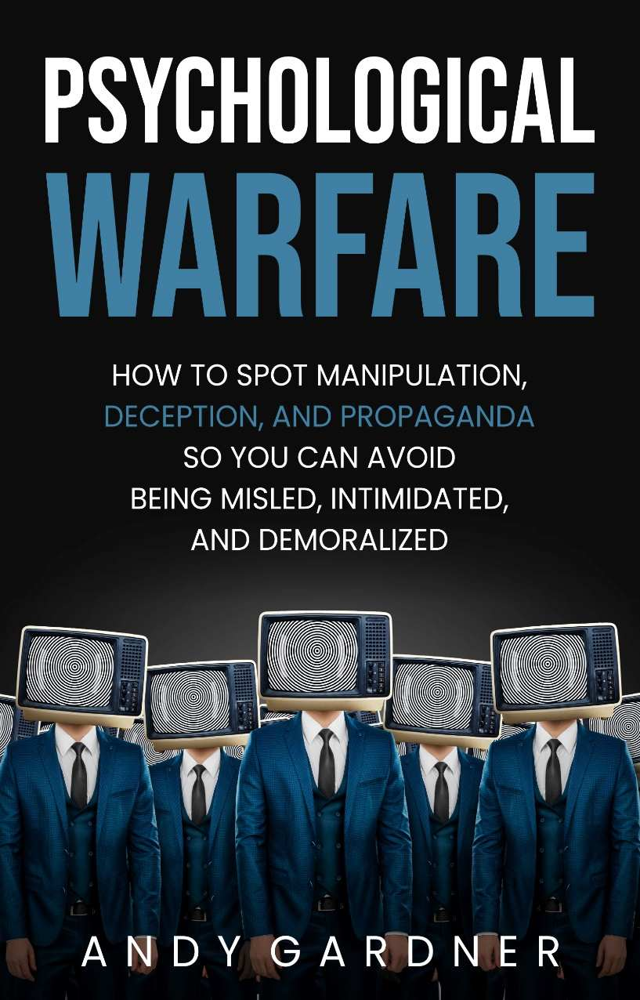

Dark Psychology and Psychological Warfare
How to Understand Manipulation, Deception, and Propaganda
© Copyright 2023 - All rights reserved.
The content contained within this book may not be reproduced, duplicated, or transmitted without direct written permission from the author or the publisher.
Under no circumstances will any blame or legal responsibility be held against the publisher, or author, for any damages, reparation, or monetary loss due to the information contained within this book, either directly or indirectly.
Legal Notice:
This book is copyright protected. It is only for personal use. You cannot amend, distribute, sell, use, quote, or paraphrase any part, or the content within this book, without the consent of the author or publisher.
Disclaimer Notice:
Please note the information contained within this document is for educational and entertainment purposes only. All effort has been executed to present accurate, up-to-date, reliable, complete information. No warranties of any kind are declared or implied. Readers acknowledge that the author is not engaging in the rendering of legal, financial, medical, or professional advice. The content within this book has been derived from various sources. Please consult a licensed professional before attempting any techniques outlined in this book.
By reading this document, the reader agrees that under no circumstances is the author responsible for any losses, direct or indirect, that are incurred as a result of the use of the information contained within this document, including, but not limited to, errors, omissions, or inaccuracies.
Free Bonus from Andy Gardner
Hi!
My name is Andy Gardner, and first off, I want to THANK YOU for reading my book.
Now you have a chance to join my exclusive email list related to human psychology and self-development so you can get the ebook below for free as well as the potential to get more ebooks for free! Simply click the link below to join.
P.S. Remember that it’s 100% free to join the list.
Table of Contents
Chapter 1: Dark Psychology Explained
Chapter 2: Different Manipulative Personalities
Chapter 3: Why Do People Use Manipulation?
Chapter 4: Manipulation Techniques to Know
Chapter 5: Scary Persuasion Tactics
Chapter 6: Reverse Psychology in Action
Chapter 7: Brainwashing Techniques
Chapter 8: Are You Being Gaslit?
Chapter 9: Someone Is Guilt-Tripping You
Chapter 10: How to Protect Yourself from Manipulation
Chapter 1: Psychological Warfare Explained
Chapter 2: A History of Psychological Warfare
Chapter 4: Examples of Political Propaganda
Chapter 5: Brainwashing via Mind Control: The Media
Chapter 6: Psychological Warfare in Relationships
Chapter 7: Common Manipulation and Deception Tactics
Chapter 8: The Effects of Psychological Warfare
Chapter 9: Psychological Warfare Defense Strategies
Chapter 10: How to Not Be Brainwashed
Here’s another book by Andy Gardner that you might like
The term “dark psychology” often conjures up images of serial killers, psychiatric wards, and criminal activity. However, most people are unaware that this broad term encompasses everything from simple manipulation tactics and self-destructive tendencies to criminal behavior.
If you look up the definition of “dark psychology,” chances are you will come across a definition that falls along these lines; a study that examines how people use persuasive tactics, deception, and manipulation to achieve certain goals. This field of study has been long criticized. In fact, much controversy surrounds the use of dark psychology for both beneficial and malicious purposes. Regardless of your personal stance, there’s no getting away from the fact that this practice can be a potent and helpful tool for anyone who can put it into use.
Simply put, dark psychology is about a person’s ability to understand other people’s weaknesses, so they can use them to their advantage. Manipulative individuals know how to exploit a person’s thoughts and emotions to make them do anything they want. This can range from daily marketing and advertising practices to having someone be an accomplice to a crime. Dark psychology isn’t always used for selfish or harmful purposes. It is also employed in positive instances.
Charitable and non-profit organizations use dark psychology to collect donations all the time. They know how to appeal to a person’s emotions and soft side. They may even go as far as guilt-tripping their targeted audience. You may be surprised to learn that therapists also use dark psychology methods and techniques to help patients overcome their anxieties, phobias, traumas, and fears. Even police officers resort to these tactics to force confessions out of suspects and indicted criminals.
Whether you plan on using this information or protecting yourself from the attempts of dark psychology, you can greatly benefit from learning all about it. However, if you plan to use the techniques mentioned in this book, ensure you do it for good purposes.
In the following chapters, you will learn everything about the art of manipulation and mind control. You’ll also come across various examples of how dark psychology affects your daily life. Then, you’ll learn about the different characteristics of manipulators and the personality types that typically use deceptive techniques. Before we delve into the various manipulation and persuasion techniques and how they can be used, we’ll explain why people use manipulation in the first place. Then, you’ll learn to identify the signs that you have been subject to these tactics. Reverse psychology and brainwashing strategies will also be discussed.
What’s great about this book is that it’s easy to read and understand while providing valuable and practical information. Hands-on instructions will teach you how to identify when someone is gaslighting or guilt-tripping you. Overall, you will find out how you can protect yourself from manipulation and its detrimental impacts and safeguard your well-being.
So, without further ado, let’s begin!
Dark psychology deals with the psychological tendency to exploit others.
https://www.pexels.com/photo/person-covering-eyes-with-hands-against-dark-background-5917762/
The struggle between good and bad occurs in the human mind. This aspect of human behavior keeps generating interest because many people can relate to these internal conflicts. Dark psychology has become popular recently, especially in light of recent inquiries into the science of human nature, such as the following:
What drives our thoughts, feelings, and actions?
Why do certain people commit horrible crimes, whereas others commit acts of altruism and kindness?
How do we make sense of the world around us?
Luckily, some people ask and answer these questions. They’re known as psychologists; dark psychologists.
Dark psychology deals with the psychological tendency to exploit others in relation to the human condition as a whole. Humanity is susceptible to victimizing others, which is part of human nature. Although most of humanity controls or suppresses these instincts, some people are motivated to act on them. Simply put, dark psychology looks at human behavior by studying emotions, triggers, and ideas. While there is no purposeful or scientifically justified victimization of others in most cases (sales, marketing), a small percentage of usage is brutal. It has no other purposeful intent than to cause harm (antisocial personalities).
Dark psychology is also concerned when dealing with criminal and deviant behavior. Analytical tools are used to understand human beings' “evil” potential. Since the human mind is so complex, it is difficult to explain deviant behavior definitively. Instead, dark psychology studies human behavior in general.
In this opening chapter, we will define dark psychology and take a look at why dark psychology is an important tactic to understand. Then, we’ll explore some of the personality types that use it and offer real-world examples, so you can protect yourself against it.
Dark psychology is the practice of manipulating people’s emotions to influence their thoughts and behaviors. It studies the dark side of human behavior and the motivations behind malicious actions. The field of dark psychology is relatively new, coming into existence through the interest in deviant human behavior to explore the aspects of psychology that deal with malicious intent, including greed, power, and control. It is an interdisciplinary branch that combines various areas of psychology, sociology, neuroscience, and philosophy. Since it is relatively new, there are few experts in the field yet. However, many psychologists have been working on this subject for many years and have researched various aspects of dark psychology.
The study of predatory behavior is a collaborative effort between academics and social observers who study perceptions, thoughts, feelings, and subconscious processing systems. This is essentially because it relates to contemporary understandings of human behavior. Dark psychology suggests that this type of behavior is purposeful and motivated by rational goals but also asserts that part of the human psyche is capable of committing atrocities without reason.
As the field of dark psychology is still expanding, we know that it includes everything from self-destructive to criminal behavior. This fascinating area of study can give us a lot of information about ourselves. It includes studies on how people use manipulation and persuasion to achieve their objectives. Because it can be used for both good and bad, it is a highly debated discipline. However, no one can dispute that dark psychology can be a powerful tool if utilized.
Essentially, dark psychology focuses on understanding and exploiting human psychological weaknesses. Dark psychology practitioners can manipulate others by understanding how they think, feel, act and react. Then, they use this knowledge to convince someone to buy a product they don’t need or even commit a crime.
From the beginning, it is important to understand that dark psychology can serve both malevolent and benevolent purposes. For example, therapists sometimes use dark psychology techniques to help patients cope with challenges and anxious feelings. Likewise, law enforcement professionals employ similar techniques to extract information from criminals. Advertisers use it to persuade potential customers to buy into their products.
Dark psychology is rooted in the idea that human psychology, as a field of study and practice, can be approached with the express intention of manipulating. In fact, the study of the dark side is very important because it helps us protect ourselves against these manipulative and malicious actions by building defenses against any psychological attacks. Studying the dark side will lead to a positive outcome since we can defend ourselves against the tactics used.
People around us use dark psychology tactics daily to motivate, persuade, and manipulate us. It is the science and art of mind control and manipulation. While psychology is the study of the human experience and is central to how we think, feel, and behave, dark psychology is concerned with how people use tactics like persuasion, motivation, coercion, and manipulation to accomplish their personal, often selfish, goals.
The reason dark psychology exists is that we are a species that is both cooperative and competitive. Human beings are capable of astounding cooperation, kindness, and creativity, just like they are capable of extreme cruelty, aggression, and manipulation. We are two sides of the same coin, exhibiting positive and negative qualities and behaviors.
Generally speaking, negativity is more easily recognized and remembered than positivity. Whenever a crime is committed or something terrible happens, we hear about it in the news. Countless TV shows, films, and books revolve around psychology, crime, mystery, and other “dark” subjects. This intense coverage sparks great interest in people. We learn about our culture, norms, values, and anxieties through true crime dramas. Watching true crime dramas unlocks our natural instinct to problem solve and lets us speculate why certain people behave degenerately.
Philosophers, great thinkers, religious figures, and scientists have suggested that dark psychology can be analyzed logically. While it’s not an academically recognized branch of psychology, others still attempt to define it as a method used to understand human behavior.
Dark psychology is not yet seen as a legitimate branch of psychology, even though countless articles have been published and active discussions online and in person. Although dark psychology is not studied as part of psychology courses in accredited universities, it is studied as part of a wide range of techniques used in therapy sessions.
Alfred Adler, an Austrian medical doctor and psychotherapist who founded the school of individual psychology, was interested in the study of dark psychology (he was ranked 67th most eminent psychologist of the 20th century in a 2002 survey published by the Review of General Psychology). Adler’s studies mainly focused on how individuals gain their identity and self-worth in relation to how their community and society accept them.
Dark psychology is based on Adler’s theories of human behavior. According to these theories, everything we think, feel, and do is purposive. We are altruistic because it is in our best interest and gives us rewards and acceptance from our friends, family, and community. In other words, we are altruistic because it is calculated.
When a child is raised to be compassionate, responsible, and participative, they experience higher levels of acceptance and group approval. According to Adler, all behavior is purposeful and contributes to functional health patterns, except for malevolent behavior. Human behavior that falls on the other side of the spectrum, while not applicable to societal integration, still serves a purpose: manipulation and exploitation.
This theory contends that those who are aggressive (or “anti”) are responding to an intense feeling of inferiority. People who feel excluded from or unaccepted by society tend to move away from it and marginalize themselves. And the more detached they become from their sense of community, the less likely they are to treat others with compassion, courtesy, and consideration.
As societies become more divided, people grow progressively frustrated and alone, leading to an increase in aggression toward other people. Narcissistic psychopaths are typical examples. They take pleasure in victimizing others and exploiting them without remorse and are particularly selfish. So, to understand dark psychology, we must first understand purposeful behavior.
The “dark triad” has been extensively researched as a part of dark psychology. This theory describes three personality types that make up the worst type of person to know. These individuals approach social interactions in a calculating manner, being manipulative, dishonest, and callous. Victims are frequently exploited through simple social interactions, and these personality types frequently seek to find even more ways to exploit them.
The dark triad theory of personality is at the heart of dark psychology. Therefore, you should steer clear of people exhibiting these traits to avoid manipulation and psychological distress. Manipulation is not something anyone wants, but it does happen. Even if someone does not have any of the common traits from the dark triad, they can still be manipulative and would be best avoided.
Dark psychology argues that exploitative behavior is motivated by selfish or unclear intentions. It is also possible to find logical, goal-oriented behavior in predatory professions, such as business or law.
These manipulation strategies are widely used online, in advertising, and even in the workplace. For example, as children strive for autonomy, they use these methods as a way to achieve their goals. Those close to you will often use dark persuasion and deception for a multitude of purposes.
As anyone with an average education knows, the capacity to influence a person’s emotions can be extremely useful in selling and marketing in an industry where rivalry is fierce. This includes methods such as persuasion and negotiation, which are used to gain subliminal control over others. It is not uncommon for a company to offer its product or services and promise more than is possible or realistic. For example, offering goods that will benefit everyone and improve the lives of its customers. This company may fall into a pattern of using dark psychology to oversell the benefits of their product to such an extent that any method, even a morally bad one, may be used to achieve it. In other words, the ends justify the means.
It is not just about marketing and sales. In fact, dark psychology can also be used strategically in the workplace. Workers are often manipulated into sacrificing their individual self-interest for the company by accepting only a small portion of their true contribution to the workplace. Workplace mottos such as “We’re better together,” “You matter,” and “We are one” are the kinds of slogans utilized to persuade us to work in adverse situations for the greater good.
Various dark psychological behaviors emerge in interpersonal relationships due to darker, more immoral aspects of human nature. For example, someone may become excessively aggressive or furious during a quarrel with a loved one or family member. A competitor may also undermine their rivals by using dishonest or unscrupulous methods.
Throughout history, politicians and authority figures have used dark psychological tactics, and their prevalence has increased for several reasons. In politics, dark psychology exploits fear, exposes weak points, manipulates the electorate, and creates discord. Politicians manipulate people’s feelings to convince them to act against their interests. Political leaders often use dark psychology to foster an us-versus-them mindset to create conflict and division. Additionally, they may try to convince people to endorse their strategies and initiatives by exploiting people’s insecurities or anxieties. And if that wasn’t enough, they may even use these tactics to manipulate the media to show themselves positively, whether through heartfelt speeches or political opportunism. Even though dark psychology may be used for either good or bad, it is frequently used for political gain at the expense of the many.
The goal behind using dark psychology in relationships is to get what we want out of our romantic relationships. There are many ways dark psychology is used in relationships, but the basic objective is always the same. Someone may use various methods to gain control, including gaslighting, love denial, and other techniques. The premise is to maintain a strong grasp over the relationship by controlling feelings and outcomes. For example, someone will use this technique to trigger psychological vulnerabilities by flirting with someone else to deliberately imply that they have the option to leave their partner at any moment they choose.
Regardless of the tactic, dark psychology provides wide-ranging psychological manipulation techniques that can be used in multiple ways to enhance one’s chances of making strategic gains in the dating world.
Some other tactics used:
These are just a few examples of dark psychology tactics which virtually anyone can use in any context of their daily lives. All in all, it is beneficial for everyone to learn about dark psychology and how it operates to protect themselves against these approaches.
Dark psychology has many implications for society. It encourages people to do things that harm others, directly or indirectly, voluntarily or involuntarily. It allows people to justify their actions and makes them feel good about themselves. This can lead to people becoming more aggressive and violent. Dark psychology is a very pessimistic view of human nature. It asserts that people are naturally self-centered, greedy, and hungry for power and control. And although some may argue that dark psychology in practice is fundamentally dishonest, others see no problem with it. It does, however, pose various threats, from degraded mental health to psychological manipulation and loss of respect and trust, all of which jeopardize social cohesion at large.
A significant drawback of dark psychology is its capacity to lead people to commit violent crimes, including murder. A person who has been gaslit or socially conditioned in a certain way may feel more confident and begin to see themselves as above the law and cleverer than others. Because they lack empathy for others (and maybe even themselves), they can resort to committing violent or illegal acts to control others. Such exploitation could lead to serious harm even if the injury is minor.
Dark psychology may have severe adverse effects down the line. We must be careful when applying dark psychology and always be aware that it may have repercussions. Ultimately, it can be either an advantage or a disadvantage, depending on how it is used.
It is up to you to determine whether dark psychology is positive or negative. Now, how can you safeguard yourself? The first step is to gain a basic understanding of the subject. You can avoid these perils by being aware of your environment and defending yourself against deception or manipulation if you understand how dark psychology works and its methods. Keep yourself surrounded by people who care about you and empower you. You will be less vulnerable to exploitation. Finally, rely on your instincts and leave a situation if it makes you uncomfortable.
There are many definitions of dark psychology, but the most common one is the practice of manipulating people’s emotions to influence their thoughts, behaviors, and actions. In most cases, this is done to achieve selfish goals, such as making money, gaining status, or achieving power. The goal of dark psychology is to influence people so that they will act in a manner that is inherently not in their best interests.
Many people believe dark psychology to be a reflection of the individual. Most often, dark psychology is directed toward other people rather than oneself. However, this doesn’t mean that only people who are “bad” or “evil” are able to commit these acts of abuse, manipulation, and deceit.
Dark psychology is undoubtedly among the most powerful methods of deceiving and exploiting people. Recognizing these tactics and knowing how to cope with them is crucial to avoid being affected by the risks associated with them. Those who use dark psychology to manipulate others have the potential to change. With guidance and knowledge, they can be taught to understand the implications of such strategies and avoid deceitful behavior.
Manipulation comes in many forms. Upon reading this chapter, you’ll be able to determine which individuals have manipulative tendencies. Here, we’ll explore the different characteristics of manipulators. We’ll also explain the MBTI and explore the personalities with the most manipulative tendencies. Lastly, we’ll go into further detail about the dark triad.
Manipulators make others feel bad.
https://www.pexels.com/photo/multiethnic-friends-bullying-woman-on-street-6147396/
The following are some of the most common characteristics exhibited by manipulators:
Manipulators excel at telling stories to not only make them seem innocent but also portray them as a victim. They will manage to make you feel bad for not allowing them to use you. Do you know that one friend who always asked you to do their homework because their sister’s dog was in the hospital? Remember how they made you feel guilty when you turned them down, even when they knew you had enough on your plate? This is a common feature of a manipulator.
They Ask for Advice and Then Flush It down the Drain
These energy vampires will seek your help and ask for your advice, and then proceed to do things their own way. If you try to call them out or refuse to help them the next time, they’ll go on about how it’s their own life experience. Everyone should live their life the way they want to. However, they shouldn’t waste other people’s time if they’re not willing to hear other perspectives than their own.
Manipulators have no problem justifying their negative behavior. They can make it seem like they had no choice but to act this way. They will do anything to prove their point rather than try and reach a compromise in arguments or discussions. The chances are that they don’t even listen to anything that others have to say.
It doesn’t matter how important the topic at hand is to you. A manipulator will steer the conversation in the direction they want whenever possible. They tend to do this, particularly when they realize what they are saying is wrong. Instead of admitting it or indicating that another person’s point of view may be right, they’d rather change the subject entirely and avoid what they see as an embarrassment.
Similarly, manipulators are masters at tipping the scales in their favor. They tweak the truth by choosing the information they want to share and the things that they’d prefer to keep hidden. They approach all situations in life as though anything they say can be held against them. They like to be able to confidently say something like, “When did I ever say this?”
You will often find yourself feeling guilty and apologizing even when you haven’t done anything wrong. We all have our fair share of problems to deal with. However, boundaries are something manipulators don’t seem to understand. If you’re not at their beck and call, these individuals will make you feel guilty for not always being there for them.
Manipulators can also make you feel guilty for having and feeling emotions. If you call them out for something they did, they will turn the tables and claim that their behavior resulted from your actions. They will convince you that you were at fault and even get you to apologize.
Those individuals tend to naturally be rude. We all poke at our friends just for fun. However, manipulators know how to hit you where it hurts and claim it was only a joke. When they insult you, they know they’re doing much more than just “messing around.” They know they hurt you; if you call them out, they will tell you that you can’t take a joke. This is how they hinder your self-esteem, make you question yourself, and establish their dominance.
Manipulators will go above and beyond to mess with your perceptions. They can go as far as spreading rumors to belittle you. When dealing with a manipulator, you may question whether it’s worth standing up for yourself and voicing your opinions. You know they will make fun of you and make you feel small either way.
If you tell them that their words and actions hurt you, they will tell you that you’re giving the situation much more weight than it deserves. In other words, you’re making a big deal out of nothing. What’s most frustrating, however, is that they’re often the ones who make a great deal out of things. They create an exit for each situation whenever it starts turning against them. Then, they start blaming everyone else and act like everyone is pitted against them.
If there’s anything a manipulator is great at, it is shifting the blame and passing themselves off as the victim. Life is their playground. They do whatever they like, hurt people, and ignore the consequences without assuming any responsibility for their behavior. They will look you straight in the eye and say they did nothing wrong. If they can’t get out of it, they’ll simply devise a way to rationalize their actions immediately. The problem is that they have a way with words and can make you believe anything that comes out of their mouth, even if you have solid opposing proof. They’re ready to do anything except hold themselves accountable.
INFP, INTJ, ESFJ, and the list goes on . . . you’ve probably come across these acronyms before and wondered what they meant. We’re here to tell you that these cool-sounding letter combos are actually personality types. Myers and Briggs invented these personality tests, and people are grouped into categories based on responses.
You can find and take the test online and receive a full report of your personality type, desires, needs, strengths, and weaknesses. Based on Carl Jung’s psychology theory, the MBTI (Myers-Briggs Type Indicator) is now among the most popular tools in personality and psychological studies. According to this type of indicator, there are 16 personalities. None of the personality types are superior, and there aren’t any unfavorable ones. This test was simply designed to help us learn more about ourselves and others. It is designed to assess the followings scales:
The first scale is the extraversion-introversion scale. It assesses how each personality type interacts with others and the world. When it comes to the MBTI, there is a lot more to extraversion and introversion than your ability to make new friends or your likelihood of spending a Saturday night at home. Extraversion refers to having an “outward” inclination. These individuals are always ready to jump into action. They’re social butterflies who thrive and feel energetic when they spend time with others. Social interactions can help them recharge their batteries. Introverts, on the other hand, have an “inward” inclination. They like to take their time to think things over before they act. They’re not lonely or tend to self-isolate like most people think they do. They simply enjoy meaningful and heartfelt interactions. While social events may not always be draining, they can certainly be overwhelming for some, but introverts can recharge by spending some time alone. Everyone exhibits both traits to an extent. However, each of us is generally inclined either toward extraversion or introversion.
The second scale includes the traits of sensing and intuition. It is associated with how people obtain information from their surroundings and how they perceive it. We are all sensing and intuitive. The situation that we’re in plays a great role in influencing how we deal with information. Even though no one is fully intuitive or sensing, everyone has a dominant area of gathering information. Sensing individuals like to incorporate their senses into the process. They like to indulge in reality and take their time to get a “sense” of it. Those people enjoy practical experiences. They like to do things themselves and are usually attentive to details and evidence. Intuitive people, by contrast, are more focused on patterns. They rely on their own impressions and intuition. They like to explore all possible outcomes and visualize the future. They enjoy coming up with hypothetical situations and theories.
Thinking and feeling make up the third scale. This scale refers to how we use the information we obtain by either sensing or intuiting to make decisions. People who make decisions predominantly by thinking are the ones who rely on facts, evidence, and data. They generally practice objective decision-making. They are typically more rational than those who “feel” through their decisions. They also tend to be logical and consistent individuals who dislike getting subjective when weighing out their options. Individuals who practice “feeling” decision-making allow their emotions to take the lead. As with the two previous scales (E - I and S - N), there are situations where “feeling” individuals think more rationally and vice versa.
The last scale concerns how we engage with the world around us. Judging individuals are not necessarily judgmental, nor do they always look down on others. By judging, we mean that they are more structured in their thinking. They like to take a firm approach when it comes to deciding things. Perceivers are characterized by their flexibility. They are more open and can easily adapt to changes. This scale links back to all the other scales. We are all extroverted to an extent since, after all, everyone interacts with the outside world. During these extroverted activities, the J - P scale refers to our tendency to act like an extrovert when we are sensing or intuiting (obtaining new information) and thinking or feeling during the decision-making process.
Manipulation takes place everywhere around us. It manifests itself in the form of abusive relationships. Police officers practice it when trying to get a suspect to confess. Doctors use it to get their patients to quit unhealthy habits. Advertisers manipulate us into buying things we don’t need, and so on. In reality, this dark psychology tactic is a lot more widespread than you might think.
According to the Health Psychology Consultancy, certain character traits are exhibited by most manipulators. Manipulators are typically deceitful, meaning they intentionally mislead others for their own benefit. They do their best to control others and their surroundings and struggle to express profound emotions. Manipulators are often very independent. They know what they need to do to thrive in life without any outside help. They are charismatic, convincing, and alluring to others. You may be surprised to learn that these individuals are usually self-conscious. Although they appear to exude confidence, manipulators spend most of their time worrying about what other people think of them.
In other words, an MBTI personality who exhibits these traits is most likely to be a manipulator. While holding grudges and establishing control in every aspect of one’s life is not an upside, controlling individuals are typically highly driven, motivated, respected, successful, and rarely feel depleted. From this, we can deduce that extroverted individuals are more likely to have manipulative tendencies due to their charisma, high energy levels, and understanding of how others can be controlled for personal gain.
Manipulators are also intuitive. This can be seen in how driven they are toward success and their ability to control various aspects of their lives. Intuitiveness also appears in how self-sufficient they are and their paranoia tendencies. They are a thinking type, considering that their manipulative games come from a guilt-free place within. They are also judging rather than perceiving. In that case, an ESTJ personality type is most likely to be a manipulator. ENTJs are runners-up.
There are different types of manipulators out there, and we’d be lying if we said we weren’t all manipulative at times. That said, some people are habitual and frequent manipulators. They use these tendencies to get their way all the time. While there are four primary types of emotional manipulation, research reveals that there are actually a total of ten types. These go as follows:
These individuals always play the victim in all their relationships. “Fe,” or extroverted feeling, is very evident in those personality types. Their tendency to victimize themselves is their downfall, and the problem is that they don’t always realize they’re doing it. If they sense that someone feels negatively toward them, they’ll turn the tables to prove that they’re unlikeable because others made them act that way. The “Fi,” or intuitive feeling ISFP and ESFP, will even go against their normal ability to be guided by their morals and beliefs. This is because their judgment is typically clouded as they’ll genuinely believe they’re the victim if the situation calls for it.
Those people are very critical and like to put others down just to prove that they’re better than everyone else. They are “Te,” or extroverted thinkers, who perceive all situations as an opportunity to show off their knowledge. They’ll constantly try to prove they know more than everyone else, even if that’s not the case. Te’s are known for their organization and structuring tendencies. In that case, their abilities are reflected in how they “structure” their ego. The extroverted types like to play mind games, which can throw others off course. The intuitive side of the ENTP and ENFP will cause them to focus on the parts of the conversation that they can use to spiral an argument. ESTPs are driven to win everything, regardless of the cost and no matter at whose expense.
They enjoy pretending to be helpless and weak. However, this is how they dominate all their relationships. They don’t show their true selves even to their closest friends. In fact, the people they already know and are friends with are the easiest to manipulate. They’ve already convinced them of how weak they are, making it a lot easier to exploit them. They keep a small circle and maintain the image of the powerless friend who can’t be let down.
These individuals know how to get people to take their side and pit them against you. They are experts when it comes to destroying relationships and making people feel bad about themselves. They are driven by the “majority rules” mindset, meaning they’ll make you feel inadequate or stupid if you don’t agree with them and those on their side.
If you’re asking questions they don’t wish to answer, these individuals will blow up out of the blue. They will use their anger to stop you in your tracks. While we are all prone to blowing a fuse whenever we want others to leave us alone, these types are particularly inclined to this type of behavior because of their “Se” (extraversion sensing). They don’t think twice before getting aggressive. Instead of confronting the issue at hand, they’ll intimidate their way out of it.
This personality type thinks they are plain perfect. They think they never make mistakes, which is why they never hold themselves accountable. They blame everyone but themselves and will go to great lengths to keep up their desired image.
These people can appear to be very nice at first. However, you will change your mind about them once you realize they twist your words and use them against you. In particular, these introverts do this to their enemies, thinking they can look good by making their enemies look bad. The extroverted types also use this tactic to get what they want.
These personality types excel at using flirting to get what they want. They like to be admired by everyone and enjoy being in the spotlight. While they can be quite charming, you should be careful because they don’t care if they hurt you in the process. They usually flirt to get their way, so your own needs and wants don’t concern them at all. They don’t flirt with you to make you feel good about yourself. They only do it because they like flattery. They like to know that you want them. ESFJs who exhibit this behavior usually do so after they’ve dated around for a while. It is their way of having fun, even when they’re doing it at the expense of others. Meanwhile, ENFPs do it because they can’t handle building a meaningful connection with someone.
These personality types use intimidation to get what they want. They have no problem using others for their own interest. They have to have things go their way, so it’s often best to let them be whenever they make up their minds about something. The only upside, however, is that they’re great organizers and are quite straightforward. Still, they shouldn’t be trusted or relied on because when they decide it’s time to let you go, they’ll kick you out of their lives without a second thought. Chances are there’s nothing you can do to be good enough for them. They’ll always manage to make you feel bad and will hinder your self-esteem.
Last but not least, these individuals use multiple techniques depending on the situation they find themselves in. While everyone leans toward a certain manipulation tactic, we are all likely to learn and develop new manipulation tactics that serve the purpose at hand.
As we’ve seen, the dark triad is a popular psychological term that refers to three different – yet somehow related – personality traits:
It can be difficult to determine whether someone is manipulative when you’re meeting them for the first time. Manipulative individuals are great at hiding their motives until you’ve become involved in their lives. As a result, it becomes very hard to cut them off. Fortunately, reading this chapter will allow you to pick up on some warning signs easily.
We have been hearing words like narcissism, psychopathy, and gaslighting a lot lately. With the growing discussion on mental health, and as more people share their stories on social media, we have become more aware of the dark side of humanity. Unsurprisingly, manipulation is one of the most toxic behaviors we are exposed to in our daily lives. Not all manipulators are aware of their behavior. In fact, they believe that their actions are normal. Manipulation has become a part of everyday modern life. Companies use it as a form of marketing to sell their products, social media uses it to stimulate negative emotions, and many people use it every day to get their own way.
Manipulators want to feel powerful by controlling their victims.
https://unsplash.com/photos/IqSaG9zv2e0
Manipulation and influencing someone’s opinion are two different things. According to psychologist Ruchi Sinha, there is a thin line between manipulation and influence. Influence is the ability to persuade someone to do something. It is a skill that successful leaders master to negotiate or encourage their team. Influence is swaying someone in a certain direction that can benefit both parties. The other person is free to choose whether to take this direction or not – and they aren’t forced, unlike during manipulation. Essentially, what distinguishes influence from manipulation is intent. The influencer doesn’t have a bad intention. They want to sway you toward something that will benefit you both and is giving you the space to think and act in your best interest. In contrast, manipulation involves coercing and mind games that force or trick you into making a choice you aren’t comfortable with. This choice only benefits the manipulator.
According to ex-FBI agent and author Joe Navarro, influencing others requires using your best qualities and creating a positive environment and experience for others. If influence is a powerful and positive skill that people can easily use, why do they choose manipulation instead? People use manipulation for various reasons, which have to do with their background, personality type, the environment they live in, and other factors that we will focus on in this chapter.
Multiple studies have shown that our personality traits can influence our behavior. There are 16 personality types, and you can discover yours by taking the Myers-Briggs personality test. A study by The University of Tennessee established a link between your personality type and your ability to manipulate and deceive others. Each person has a goal to achieve; some may resort to manipulation while others don’t. This mainly depends on their personality type.
Everyone has their own fundamental motives that are associated with their desires and goals. Your personality type affects how you act on these desires. For instance, two individuals may have the same goals. Still, one’s main personality trait is extroversion, while the other’s main trait is introversion. Both may use different tactics to achieve their goals. Extroverts could be untruthful due to being social and therefore have more opportunities to interact with people and tell a lie every now and then. This is unlike the usually quiet introverts who don’t need to be as social as an extrovert, so they don’t have the same opportunities to lie. Personality types can also affect a person’s motives. For example, extroverts are driven by their desire to expand their circle and have more contacts, while sensory or sensing individuals are motivated by gathering information about the world around them.
Therefore, an individual’s personality type can substantially impact their motives and how they plan to achieve their goals. A person may resort to lying, deceit, or manipulative behavior if this is what it takes to get what they want. For instance, highly extroverted individuals may lie on their job applications or during an interview if they believe it is the only way they can secure the position. Extroversion is also associated with power, social status, and the desire to be accepted. This can encourage them to use deceptive and manipulative techniques like exerting power if it can help them to attain the status or admiration they seek.
Manipulators want to feel powerful by controlling their victims. In certain cases, these individuals can also be successful and respected by those around them. This implies that an extrovert is likelier to use manipulative behavior since manipulation requires people skills, high energy levels, social skills, and the ability to control others. These are all qualities many extroverts share.
Introverted intuitive individuals may also exhibit manipulative behavior since they share some traits with manipulators, including self-sufficiency, the desire to succeed, and paranoia. Thinking types are often associated with manipulation because they can act without letting emotions or guilt interfere with their actions.
Chronic manipulators may suffer from narcissistic personality disorder (NPD) or borderline personality disorder (BPD). People with NPD are toxic individuals who struggle to form deep connections with others. When they get into a relationship, they usually seem caring and charming at first. However, when the mask comes off and their true colors show, their partners see them for the toxic individuals they are and leave. Therefore, they use manipulative tactics like gaslighting, blaming, shaming, playing the victim, controlling, and even threatening self-harm to ensure their partner stays in the relationship.
Individuals with BDP have probably experienced a traumatic experience or abuse at a certain point in their lives. They often feel insecure and abandoned, which is why they use manipulative behavior as a coping mechanism. They haven’t learned a healthier way to cope or to ask for help, so manipulation is a way to help them meet their emotional needs indirectly or feel validated.
Some manipulators aren’t aware of their behavior. In some cases, a person grows up in a home where manipulation is the norm. As children, their parents never encouraged them to be straightforward or openly express their feelings. They either pressured them to bottle everything up or made yelling and arguing the only forms of communication the child was exposed to. In this scenario, they learned to apply unhealthy ways to deal with their unmet needs and tended to suppress emotions.
Manipulative parents invalidate their child’s feelings, withdraw affection as a form of punishment, use control to get their children to do exactly what they want or use personal attacks to diminish their self-esteem. The child grows up to believe that this is normal behavior and begins using the same tactics on others.
A competitive environment can encourage manipulative behavior to a great extent. For instance, if you work in a company where bargaining, schemes, or exploiting people’s weaknesses are the norm, you may be adopting the same behavior. There are also professions (like marketing or sales) that may require certain types of manipulation or businesses that encourage competitive bargaining. Likewise, some careers can have you adopt Machiavellian traits just to keep up with the ruthless office politics. Competitive environments at home may influence a child’s behavior as well. In fact, it is common for children to use manipulative tactics like exploiting others when they’ve had to compete with their siblings for their parents’ love, affection, and validation.
People will resort to this behavior when they find themselves at a disadvantage and craving power, so they deceive and manipulate others to get what they want. Constant exposure to these influences can greatly impact an individual and make them use these tactics daily. This type of behavior slowly begins taking over their lives, becoming a force of habit.
A history of abuse, whether in childhood or adulthood, can make people struggle to communicate their needs honestly and directly. As a result, they may resort to manipulative behavior because they don’t know any other way to connect.
In relationships, people should be straightforward with one another and communicate their needs directly. There is usually no guilt, shaming, or mind games. Some manipulators have poor communication skills because, as children, their parents never taught them to communicate or express their feelings in a healthy way. We have mentioned above that manipulation can be a learned behavior when the child has no other way of expressing themselves. They then grow up believing that tricking, withholding affection, guilt-tripping, and other forms of abuse are entirely normal behavior. Basically, this will be the only way they know how to communicate. For instance, their partner did something that upset them. Rather than talk things out and express how this action hurts their feelings, they will lash out at them or withdraw affection to punish them. This can be extremely damaging to their partner’s emotional and mental health down the line.
If their partner tells them how this behavior is hurtful, they will either get aggressive, play the victim, or dismiss their partner’s feelings, just like their parents did. Eventually, their partner will walk on eggshells around them and avoid expressing their feelings out of fear of their aggression. They will also use this manipulative technique in various areas of their lives. For instance, they need help at work. Instead of asking their co-worker for help, they will manipulate them by threatening to tell their secrets, play the victim or guilt-trip them so they will agree to help. In fact, had they asked politely, their co-worker might have been happy to lend a hand. However, they don’t know a better way to reach out to people or ask for help. This doesn’t necessarily make manipulators victims. They can work on themselves and unlearn this type of behavior if they want to change and stop hurting the people in their lives.
In some cases, manipulators may have had a negligent, abusive, or manipulative parent who never provided them with love and may never have experienced an attachment in their childhood. They grow up wanting to avoid relationships, which is where manipulation comes in.
These individuals have no interest in developing real connections with people. They only see others as a means to an end, objects that the manipulator uses and controls for their own pleasure or benefit. This desire to avoid connection is more common among people with narcissistic personality disorder. Narcissists lack empathy, and they can’t understand or process emotions. They only look out for themselves and their feelings without regard for anyone else.
A narcissist avoids developing emotional connections or loving others to essentially protect themselves. They find it easier to use manipulative tactics as it prevents them from forming any kind of bond with others. All a manipulator cares about is power and exerting control. Manipulation allows them to do that without needing attachment or getting close to people. Other people are just pawns in a manipulator’s game.
Some people may resort to manipulation out of fear of abandonment. They use this tactic to trick their partners and prevent them from leaving. People suffering from borderline personality disorder usually dread abandonment. This fear can drive them to be selfish and resort to manipulative behavior. They may threaten self-harm, get violent with others, or even threaten to commit suicide if they feel that a loved one might abandon them. People with BPD usually had an abusive childhood where one or both of their parents abandoned them as a child or weren’t emotionally available. As a result, they are willing to do anything not to experience this feeling again. When they feel that a friend or a partner may walk away from them, they use manipulation to keep them around.
Some people may resort to manipulation out of fear of abandonment.
https://unsplash.com/photos/j8a-TEakg78
We mentioned how narcissists use the same strategies to ensure their partners stay in the relationship. A narcissist is weak and vulnerable on the inside, but they will never let it show. They are always afraid of abandonment. This doesn’t mean they care about the person. Narcissists don’t love or form emotional bonds; they only love what others can do for them and how they feed their egos.
The word manipulation has always had a negative connotation. But, as explained early, not all forms of manipulation are bad. Certain social norms require manipulation. In fact, it can be beneficial to both parties. For instance, being nice and friendly to your co-workers and boss can make you a more likable person at work and help advance your career. Even if you don’t like your boss or find your co-workers annoying, greet them with a smile or pay them a compliment. This will not make you a hypocrite. Social niceties are necessary, whether in your personal or professional life. Unlike negative manipulation, you aren’t hurting anyone or forcing them to do something that will only benefit you. For instance, a boss may tell employees that they started from nothing and worked hard to build the company. However, this story is a lie, and the boss came from an abundant and wealthy background. There is no malice behind this story. They simply want to inspire their employees to work hard and believe they can achieve their goals. In fact, many leaders resort to positive forms of manipulation to inspire and motivate their employees, just like promising rewards such as promotions or extra pay if they complete a certain project on time. This kind of manipulation benefits both sides. When the employees work hard, the business will flourish, and the employees will get the rewards. Simply put, this is a win-win situation and is generally acceptable in our society.
However, knowing the difference between positive and negative manipulation is essential, especially in the work environment. For instance, your boss asks you to come to their office. They look mad and tell you they are disappointed in you. During the meeting that took place earlier today, you shared good ideas. However, you should have run these ideas by him/her first. Like everyone else, they didn’t appreciate hearing these ideas for the first time. They then mention another employee and how they have never shared an idea without prior consultation. You tell your boss that this was a brainstorming meeting, and you simply shared ideas because it was the purpose of the meeting. They tell you that you are new here and have just stepped on your other colleagues’ toes. Finally, they tell you they are trying to protect you, and this is for your own good.
Is this positive manipulation? Is your boss a protective leader and mentor? No and no. Your boss here is manipulating you to exert power and control. They guilt-trip you for not sharing your ideas with them first, compare you with another employee to shame you, turn you against your colleagues, and make you believe they are the only ones looking out for your best interest. On the other hand, a good boss would be happy that you took the initiative even though you are new, and will motivate you to keep coming up with new ideas. If they have a criticism, they will do so constructively without making you feel bad about your ideas.
Marketing, advertising, and political campaigns all rely on manipulation. In fact, there are industries built on manipulating people to persuade them to buy their products or vote for a candidate in particular. Just think of any product you bought when you saw an ad, and you will realize you bought it because this brand knew how to persuade you to make a purchase. For example, Coca-Cola advertises itself everywhere. They put ads on TV, social media, and even on billboards. They know that the more you see their brand, the more you become attached to it. The algorithm that Facebook uses and the targeted ads on social media are the best examples of manipulation. They know what you like, and they bring it to you. The same goes for Amazon. They keep sending you emails about the products you have recently viewed to persuade you to buy them. None of this is ethical – but to them, it is just usual business.
The same happens in the media. They know what words and tones to use to manipulate people. The news may exaggerate an incident that isn’t a big deal to begin with – or downplay one that is serious for whatever motives they have (when they decide to talk about it, that is). In fact, during the recent pandemic, many people refused to get vaccinated or wear masks because they knew the media had a strong tendency to lie and twist the truth. So, the one time they actually warned us about something real, people treated them like the boy who cried wolf!
Media and social media manipulation were very clear during the Johnny Deep and Amber Heard trial. Amber Heard wrote an article defaming Johnny Depp but said it wasn’t about him. Depp ended up losing work, so he sued her for defamation. Both sides also accused each other of abuse. The media took Heard’s side, with Vogue publishing an article entitled, “Why it is time to believe Amber Heard.” The media rallied behind her simply because she was a woman. With the “Me Too” movement and popular culture dominating public debate, the media believed this was the best route. However, when the people saw the trial on TV and listened to Depp’s side, they took to social media to state that the media had manipulated them and that no one should believe Heard. Depp ended up winning the case, and it was proven by the jury that Heard did, in fact, lie. On the other hand, Heard believed a war was waged against her on social media and that it swayed the jury’s opinion of her. This whole trial shows the power of the media and social media – which can build or break a person’s reputation.
The same thing happened during the 2016 U.S. presidential election that opposed Hillary Clinton and Donald Trump. The amount of “fake news” that spread at the time targeting specific people greatly impacted the election. We also see ads all the time of politicians playing with animals or kids to emotionally manipulate us and stir us toward a certain nominee.
Ultimately, manipulation is all around us and will always be. There are manipulative tactics in the media and on social media, or co-workers, friends, or family members manipulating us for their own gain. Even kids and pets can be manipulative. People resort to manipulation because it is the only behavior they know or because of their personality type. The individuals who choose negative manipulation are dangerous and only look out for their own self-interest.
Manipulators use countless tactics to control their victims. Some of these tactics are so subtle that you may not even be able to pick up on them. There are a few common techniques many manipulators resort to. Identifying these tactics and their signs will help you recognize if or when someone manipulates you, which this chapter will explore in more depth.
Manipulators use the silent treatment to punish their victims.
https://unsplash.com/photos/7JTgmu5NXQs
It is perfectly normal for a couple or two friends to want to cool down after an intense argument or a fight. Sometimes, a person’s actions or words can be so hurtful that you feel compelled to take a step back and assess your relationship with them as a whole. This behavior is acceptable and a perfectly normal reaction. However, manipulators use silent treatment either to punish their victims or as a scare tactic. The difference is a healthy person gives you the silent treatment after a fight to give you both the chance to calm down. In contrast, an abusive person usually does it during a conversation or fight. They stonewall you because they don’t like or agree with what you have to say.
The silent treatment is a form of abuse that falls into the passive-aggressive subcategory of behaviors. By ignoring a person, the abuser is manipulating them emotionally and psychologically. When the manipulator is displeased with you, they shut you out and refuse to have any interaction with you. Even if you live under the same roof, they won’t even acknowledge you and may even pretend that you don’t exist. The silent treatment can take place in any type of relationship, whether personal or professional. Your co-worker, sibling, parent, partner, friend, or roommate could all resort to this tactic. Although this technique is often associated with narcissism, this doesn’t necessarily mean that the manipulator suffers from NPD.
Manipulators employ silent treatment to break their victim’s spirits. It is meant to confuse, shame, stress, and guilt trip them, so they concede to the abuser’s needs. Evidently, this tactic can be damaging to the victim’s mental and emotional health. You will constantly feel stressed and anxious and will walk on eggshells around them. Consequently, you will avoid conflict with them and bottle up your feelings and needs out of fear they may stonewall you again.
A friend calls you and asks you to drive them to the airport. You tell them you can’t because your back hurts. The next day you call them, but they don’t answer. You try them a few more times to no avail. You check Facebook and find them sharing a long post about how “People will only disappoint you and even those closest to you will not be there for you when you need them the most.” You begin to feel guilty for disappointing your friend. Even though your back hurts, you text them offering to pick them up from the airport when they get back.
Instead of understanding that you were in no condition to help them out, they manipulated you, so you eventually did what they wanted. A healthy person in this relationship would likely tell you not to worry about it and call later to check on you!
Manipulators are experts at reading people and telling how they feel. They are almost as good as empaths, except they use their powers for malicious purposes. These individuals will learn about your insecurities and fears and use them to bring you down. Narcissists employ this tactic on their victims so they will never leave them. They remind them of their flaws using different methods like backhanded compliments in private or in front of other people. In truth, these people know deep down they aren’t good enough and that their partner or friends will leave them sooner or later. By constantly reminding their victims of their flaws, they are able to manipulate them into thinking they aren’t good enough and that no one else will tolerate them, much less love them.
Marketing agencies employ the same tactic as well. They use people’s insecurities to sell products like cosmetics or weight loss pills. Look at any beauty product and see how they play on people’s insecurities. Your hair will look dull unless you use our product. Since you are getting old and unattractive, you may as well use this cream to get rid of your wrinkles, or you will never find love unless you lose weight, so try these pills, etc. Clearly, these ads work and have changed beauty standards as more people than ever now have an unhealthy obsession with their looks.
You have always had body issues, and you wear a nice outfit that makes you look slim. You are very happy with the way you look. When your partner sees you, they say, “You look good. Finally, you found an outfit that doesn’t make you look like my aunt.” All the excitement about the new outfit is gone, and you feel horrible about yourself.
At times, the abuser will not directly manipulate you; they may get a third party to do their work for them. A manipulator doesn’t only play mind games on one victim. They manipulate everyone else in their life. They may even go as far as convincing people that you are the abuser and that they are the victim! Some may believe them, sympathize with them, and will do anything to help them. This will allow the manipulator to recruit people to apply social pressure on their victims. Eventually, you will feel guilty or ashamed, making it easy for the manipulator to get what they want from you.
You have an abusive mother, and you decide to cut her off. She tells other family members how she has sacrificed everything for you and that this is how you repay her. The family members will then guilt trip you into reaching out to her. They may even call you ungrateful or heartless for cutting her off. No matter how much you explain to them that she is abusive, they won’t believe you. She has already convinced them that she is the victim of an ungrateful child. You will end up calling your mother out of guilt and pressure – or you will refuse and be shunned by your whole family.
Manipulators can be very charming individuals and know how to win someone’s affection. Once they succeed in making you fall in love with them, they will start using these feelings to exert control over you. Some parents do the same thing. They use the emotional bond they share with their child to control them. A parent may punish their child by withholding affection from them to get them to do what they want. The victim of this type of manipulation will do anything for the manipulator, even if it means sacrificing something they love, like quitting a job or cutting off close friends.
Relationships with abusers are different. They don’t take things slow. There is a stage at the beginning of a relationship that is referred to as “love bombing.” Here, the manipulator showers you with over-the-top romantic gestures, calls/texts you all the time, and makes time to see you every day. Although this may seem romantic for some people, this behavior is usually overwhelming and can be a red flag. They may even confess their love for you early on in the relationship. This is meant to get you to lower your guard and speed the process, so you can fall for them before their true colors show. Once you develop an emotional connection with them, they will ask you to move in or even get engaged. It may seem impulsive, but you believe they love you, and they seem perfect. After you move in, their mask will fall off, but they will resort back to the love bombing stage whenever they feel you may leave them for good.
Lying is a form of manipulation that abusers enjoy using to torment their victims. Some may lie just to see if they can get away with it. We aren’t talking about small or white lies. They may create a whole story with plots and twists that are more captivating than Game of Thrones. They are such pros that you may never suspect they aren’t telling the truth. However, if you catch them lying or confront them, they will cover it up with another lie or deny the accusations. They use lying to make excuses for themselves, gaslight you, or shift the blame so they can control you. Lying is also meant to confuse the victim. In fact, many people in this situation state that they didn’t recognize they were being manipulated because of all the lies and the denial. They end up questioning themselves, not knowing what is true and what isn’t, since every time they think they have caught the manipulator in a lie, the manipulator comes up with a better lie to cover their tracks!
Your co-worker is working on a project, but they are struggling and ask you for help. You agree to help, but they let you do all the heavy lifting. You tell them that your name should also be on the project, and you should present it together. However, you find out later that they presented it without you. When you confront them, they tell you not to worry, that everyone already knows you worked on it together. You then learn this is a lie, and they didn’t even mention you. When you confront them again, they tell you the “truth.” The manager didn’t like the project, so they opted out of mentioning your role and decided to take all the blame. Another lie. In fact, your boss loved and approved the project. If you confront them again, it will be one lie after the other, and you will never win. You may go and tell your boss the truth, but the manipulator will vehemently deny it.
Signs You Have Been a Target
Passive-aggressive behavior is extremely subtle. It is a poor form of communicating anger without expressing emotion. The manipulator may overly criticize you, give you the silent treatment, use indirect or cryptic speech, or refuse to tell you what’s wrong even when you continuously ask them. People use this tactic to keep their victims guessing what they have done wrong. As a result, they change their behavior to appease the manipulator or give in to their demands.
Your partner doesn’t help around the house, so you confront them about it. Instead of understanding that you work hard and offering to take some of the load off you, they do a poor job with the chores you asked them to help with. The dishes are still unclean, and they forget to take the trash out or walk the dog. When you talk to them about it, they tell you, “This is the best I can do.” This is meant to frustrate you, so you won’t ask for their help again.
Generalizations and hyperbolic (exaggerated) statements are rarely factual, and it is almost impossible to refute them. If manipulators use a specific incident, it can be easy to debate them. However, they choose to use vague and exaggerated accusations to corner their victims and make it easier to guilt or control them. This tactic is meant as a distraction when you confront the manipulator or accuse them of something.
Your mom is inviting family members for dinner tomorrow and asks you to come over to help. You tell her you can’t because you have an important presentation at work tomorrow and must prepare for it. She gets mad and tells you that you never help her with anything. She has never once asked you to do something where you came through. This is obviously not true. Still, you feel guilty and agree to help her out at the expense of your career.
Fear is a potent emotion; everyone is afraid of something, whether it is fear of the unknown, fear of getting hurt, or fear of abandonment. Since manipulators know how to read people, they will figure out what they are afraid of and use it against them. There are also general fears that many of us dread, like physical harm, natural disasters, physical pain, terrorist attacks, etc. Politicians and marketers also use this tactic to get votes or sell products. Many presidents have won elections by promising the people that they will protect them from terrorist attacks or lower crime rates in the country. Marketing agencies use people’s fears of aging, loneliness, or gaining weight to help sell their products.
You and your partner had a big fight. You have had enough, and you decide to leave them. As you pack your bag, they hold a knife and threaten to hurt themselves or you if you leave. Naturally, you fear for your life (and/or theirs), so you end up staying with them.
Shifting criteria, also known as moving the goalpost, is a manipulation technique that relies on humiliating the victim. This tactic makes the person feel that they are inadequate and will never live up to the manipulator’s expectations. Whatever you do, you will fail because they keep shifting the criteria that you are supposed to meet and raise their expectations. Even when you achieve something, they will downplay it and make you feel it is insignificant. They want to destroy their victim’s self-esteem so they can easily exert their power over them. Perhaps deep down, they know that you are better than them, or they lack self-esteem and the only way to feel good about themselves is by bringing people down. Many bullies commonly use this technique as well.
Your partner complains that your job is taking all of your time, and they never get to see you. You agree to dedicate one night a week just for the two of you. After a couple of weeks, they tell you that one night isn’t enough, and you clearly do not care about your relationship. Whatever you do, even if you quit your job, it will never be enough for them because they will keep raising their expectations.
Changing the subject during a conversation may be innocent, but when a manipulator does it, there is usually malice behind it. Whenever you confront a manipulator, they will always find a way to deflect the attention from themselves and change the subject. They may turn the table and point a finger at you. They employ this technique because they never want to be held accountable for their actions. You will never be able to finish any conversation regarding their behavior or get your point across. They will frustrate you, and the argument will feel futile. Eventually, you will stop bringing up their hurtful actions, which is precisely what the manipulator wanted in the first place.
Your mother tells you that she misses your brother, and he hasn’t visited her in a year. You call your brother to tell him that your mother misses him. Instead of explaining his reasons, he lashes out at you, “What about you? You didn’t visit your dad once when he was in the hospital.” You tell him this isn’t true, that you did visit your dad a few times, and he responds with “… but not every day like I did.” You find yourself explaining that you were at college at the time and could not travel back and forth every day. You end the phone call feeling frustrated, and you didn’t get any explanation from your brother about why he hasn’t visited your mother all this time!
Manipulators are rather smart individuals. They are predators, constantly watching their prey to learn about their fears and weaknesses. The techniques they use can have a considerably negative impact on your mental health and emotional well-being. Recognizing these tactics is the first step to standing up for yourself and stopping this destructive behavior from affecting your life.
Persuasion tactics are used to market and sell services and products all the time. While it sounds rather normal and innocent in theory, it can be quite manipulative and damaging. Many of us like to think of ourselves as impermeable to advertising. That said, commercials and advertisements are designed to influence us and push us toward making a choice.
Advertisements are designed to influence us.
https://www.pexels.com/photo/street-lights-802024/
When we are subjected to advertisements, we subconsciously or consciously make up or change our minds about the products, services, and brands we are viewing. You might even wonder why there is such a product or service. However, advertisements are no longer intended to entice consumers to buy immediately.
Modern commercials are not designed to tell you about a product. They are there to place an idea into your mind for you to form an opinion about a brand. If you like the brand, you will buy what it is selling. McDonald’s, which has almost universal recognition, still advertises for this reason. This chapter takes a closer look at the most common persuasion tactics we are the target of on a daily basis.
Nowadays, marketers use two main psychological techniques in their advertisements. Exposure is one of those methods. This type of marketing involves using large-scale saturation campaigns to cultivate positive feelings about a brand or product. In particular, brand recognition is a major focus of marketing efforts for major brands in the food and beverage industries.
So, why would a well-established brand invest so much into advertising when its name is already out there? Mob mentality is the simple answer. We all want to feel like we are part of a group or belong to a community. If something seems popular, we naturally want to attach ourselves to it. It is a more comfortable and easier decision that allows us to blend in with what is socially acceptable.
Consumer psychology is the basis for this method. When we buy something from a known entity, it helps us feel safe. If the brand is recognized and many people trust it, then it must be trustworthy. That is why we often buy brand-name products over generic ones at the grocery store. We are happy to pay a little extra for a brand we have confidence in, even if it is no better than its lesser-known competitors.
Similarly, a generic drug has the same composition of ingredients as a name-brand drug. Despite its steeper price, we prefer buying the popular brand to feel safe as both consumers and individuals.
In marketing, classic conditioning is another common psychological technique where brands are associated with specific feelings or reactions. Rewarding behavior is a classic tactic in classic conditioning. An example would be a punch card where you get a free coffee after spending a certain amount at the store.
A response is triggered when we associate certain products or services with a feeling or emotion. With classic conditioning, and in the above example, if you are rewarded with a free coffee, you will start to associate that happy feeling of getting something for nothing with buying coffee. Over time, the act of buying coffee will trigger the positive feeling, and you may not even need to be rewarded anymore for the feeling to persist.
Car dealerships often use classic conditioning through the images they use to present their products. Much of the advertising you see does not have to do with the vehicle's features; rather, it is more about a feeling or emotion the vehicle makes you feel. We often see attractive people driving the car, and we subconsciously associate that attractiveness with the vehicle itself. If we drive that car, we assume we will be attractive too.
After watching multiple ads, we become more invested in the lifestyle that goes along with the vehicle rather than the vehicle itself. If there is a celebrity endorsement, then we are drawn in even more due to the image of fame and wealth many people strive for.
Beats, a major tech company, did this to perfection when they released their headphones. They showcased the life you could live with the headphones rather than the headphones themselves (which many people say are mediocre compared to high-end headphones on the market). Yet, they are one of the best-selling headphone brands.
Celebrity endorsements are one of the reasons Beats has such high market shares. The product is also marketed as a fashion statement rather than a functional product – wear them, and you will look good, even if your music does not sound its best!
Written in 1984 by Robert B. Cialdini, “The Psychology of Persuasion” is a must-read for anyone working in marketing or advertising and who is interested in optimizing conversions. Cialdini identified the concept of “influence” based on six major principles:
With the advent of marketing and the effects of persuasive techniques on the human psyche, these principles have been updated to fit modern marketing practices. Because marketing is all about conversion, it makes sense that companies employ these tactics. Simply put, a conversion happens when a person responds to a call to action after receiving a marketing message. In other words, consumer conversion is how brands make sales. Consumers who visit their website or see their product advertisements are converted into buyers through persuasion.
According to this compliance strategy, accepting a minor demand raises the possibility of accepting a more significant one later on. Once we consent to a minor demand, rejecting a bigger demand becomes more difficult.
Suppose one of your classmates missed English lessons last week and wants to use your notes. In response to a modest demand, you generously lend them your notes, considering it to be a fair ask. They ask to copy your work shortly after. Is this more demanding requirement something you would be prepared to consent to?
Consistency is the key to the foot-in-the-door technique. For the method to work, the request must be equivalent to or aligned with the initial minor inquiry.
During the 1980s, psychology researcher S. J. Sherman conducted an experiment on compliance. Sherman and his team asked the residents of the state of Indiana whether they would be willing to volunteer for three hours to raise funds for the American Cancer Society.
Another experimenter contacted the same people a few days later and requested help for the organization. Those surveyed were willing to help following the initial inquiry, with 31% saying they would do so. This is significantly higher than the 4% who were asked to help before having volunteered in the initial experiment.
In this tactic, persuaders make a large request that respondents will likely refuse in order to persuade them to comply. As a result, a more manageable proposal will likely be accepted when a large request is rejected. In the following request, the person feels obligated to accept it because they don’t want to appear unreasonable. One example would be asking your employer for a pay raise. The first request you make is for 25%, which is not feasible. It would be more reasonable to ask for 10% or 15% instead.
The subjects in Cialdini’s 1975 study were asked if they would join a group of juvenile offenders at the zoo. The majority declined (group 1). In group 2, individuals were asked to counsel juvenile offenders, and most refused. In the condition of experimentation, people were asked to be counselors before being asked to accompany them to the zoo. 50% of the group agreed.
Studies indicate that the door-in-the-face strategy is most successful when the demand is made by the same individual and is of comparable effort. This method requires mutuality to be effective. When denying a substantial demand, a person may feel obligated to help the demander.
Our decision-making is affected by anchoring, which is a cognitive bias. For example, our first impression of a product’s price heavily influences our buying decision. A price of $130 becomes an “anchor” or a reference point if we read, “Regular Price: $130.” That anchor determines our perception of value. An offer becomes more or less attractive as its price moves away from $130. Marketers know this, which is why they often advertise very high “list prices” for their products – the list price anchors the selling price.
Marketers often take this technique to extreme levels in TV infomercials. Multiple reductions will be made to the high initial price, sometimes by as much as 30%. However, there is more to it – they’ll put the anchoring on steroids, then complete their campaign with a call-to-action. This usually involves buying one and getting one free. Additionally, there is a short deadline (“offer ends soon” or “limited quantities”).
Even though this technique is tacky and obvious, marketers will continue to use it because it works. And while we know we are being duped, their offer just seems too good to pass on. The anchor is the starting point –intended to make you believe that those sunglasses really did sell for $240. But instead, two pairs are now available for less than $50. So, when you find a buy-one-get-one-free offer, be aware of the real cost.
There is more to anchoring than just suspicious infomercial pricing. It explains why our responses are highly influenced by how we frame a question when asked to estimate something.
Example
According to psychologists Tversky and Kahneman, mental shortcuts (cognitive bias) allow people to solve problems and make judgments quickly and efficiently. They are fast but fallible strategies people use to make decisions on a daily basis. In the past, logic and probability were considered the essence of rational thinking, so the discovery of cognitive biases had a great deal of influence.
Tversky and Kahneman studied cognitive thinking by asking test subjects to estimate how many African nations were members of the United Nations. But first, they set an anchor by asking participants the following:
The results were very telling. As a whole:
According to this technique, we are driven by a deep need to be seen as consistent. Consequently, once we commit to a project or an individual, we are more inclined to make good on our commitment (consistency). Consistent beliefs and values are important to the appearance of being acceptable in society, as self-image is associated with responsibility. Marketers use this to boost sales.
Consumers are more likely to become customers when they receive a free product. A change in perspective encourages subsequent deals, just as the foot-in-the-door approach encourages money-related deals.
There are many ways in which the commitment and consistency principle can be applied to persuasion tactics. By doing so, the persuader can motivate others to continue engaging with their product or service as they feel compelled to do so by their innate desire for consistency.
A striking example of this principle in action can be found on many content marketing websites which sell their services online. For instance, you’ll notice a pop-up message inviting you to sign up for a complimentary workshop on the website, where the next step is simply a matter of entering an email address.
When children are congratulated for achievements and hard work, they are more likely to continue to strive for excellence. Likewise, when a person is viewed as someone who knows a lot about politics, they are more likely to engage in political conversations even if they do not have any real interest in the subject.
Social proof is defined as what people do based on observing others. This is because, to most, nothing is more satisfying than feeling validated by others. It can be seen in practice when most of your friends choose a certain TikTok page as the funniest one around. It’s the phenomenon of social proof where “everyone believes it, so it must be true.”
In most social groups, group mentality is prevalent to a high degree. Regardless of whether everyone agrees with the idea, someone only needs to mention it before everyone gets on board with it. People follow the example of their peers when making decisions and act similarly. For example, we are more likely to work late if our co-workers do. The more people visit a new restaurant in town, the more likely we are to try it. This principle has an even greater impact if our confidence is shaky or if we have things in common with the group.
One of the most powerful ways to use social proof is through the so-called “wisdom of the crowd.” In this process, independent judgments are statistically combined to achieve the most accurate final judgment. Take any social media page. Pages include the option to “like” or “heart” a statement, photo, article, product, or service. These act as an agreement with or appreciation of what’s being liked. The more “likes,” the more it is seen as valid and trustworthy.
Most of us have been conditioned to defer to authority. If someone is in a position of authority, then we assume they must have worked hard to get there. And if we please people in authority, we feel a sense of accomplishment. What’s more, the higher the perceived authority, the more compliant we tend to be. Companies often capitalize on this fact to make consumers feel safer and rewarded. This refers to the tendency to follow the advice of people in authority, such as professors, police officers, doctors, government leaders, lawyers, and others.
Psychologist Leonard Bickman conducted three experimental scenarios to test the power of uniforms. His goal was to determine whether situational factors affect obedience when a uniformed authority figure is present in each scenario. In one scenario, a security guard tells participants that a man is struggling to find change for a parking meter and suggests they go over to him with some money. The study found that 92% of participants did. This figure dropped dramatically to 42% when the same requester wore civilian clothes. This is a typical example of the authority principle in action.
Persuasion can be used for many purposes, such as selling products and services – or persuading others to accept a certain point of view. To persuade their audiences, politicians also often use persuasive techniques. The power of persuasive language lies in its ability to achieve goals. Persuasive people tend to show the following traits:
These individuals excel at persuading others to follow their agenda, regardless of how they do it. Here are some common persuasion techniques along with their associated example:
| Persuasion Technique |
Example |
| Using factual data, such as figures and statistics |
“70% of people agreed that this would improve their neighborhood.” |
| Using the 3-point technique to support an argument |
“For you, your friends, and your family, safer streets mean peace of mind, comfort, and assurance.” |
| Using personal pronouns such as “I,” “you,” and “we” |
“Ultimately, this whole idea relies on you, and we’ll be by your side every step of the way. Thank you so much! I can’t express how grateful I am.” |
| Presenting personal opinions as facts |
“The movies are so much better than the books.” |
| Complimenting |
“An intelligent person like you deserves much better.” |
| Rhetorical questions |
“Is there anyone who doesn’t want success?” |
| Using language to elicit emotion |
“Our selfishness and disregard for kindness have caused thousands of animals to suffer.” |
| Using commanding language |
“Become a part of our team and discover new ways to make money.” |
| Inflating a product or person’s qualities |
“You will be blown away by it – it is truly spectacular!” |
Persuasive communicators use a variety of tactics to get their target audiences to respond accordingly. Of course, some are more obvious than others. Still, they all have one thing in common – to persuade us to do something that ultimately benefits the persuader. Remember the next time you feel tempted to buy a brand-named product or believe a political candidate’s heartfelt speech. Persuasive language is a powerful tool people use to their advantage all the time, so it is important to remain aware of these attempts that seek to sway us in one way or another.
In reverse psychology, people are manipulated into doing something by provoking them to do the opposite. Various approaches to reverse individual psychology include restricting a goal, questioning the person’s capability to perform the goal, and encouraging the opposite behavior.
Reverse psychology is manipulating people into doing something by provoking them to do the opposite.
https://www.pexels.com/photo/upset-young-woman-touching-face-in-darkness-7366424/
Essentially, the objective supports behavior that is different from the desired outcome. You can think of it as attempting to get the other person to engage in the behavior you really want by recommending the behavior you actually do not want. For instance, a mother might use reverse psychology to convince her competitive yet lazy teenage son to help paint the garden fence by saying, “Never mind, I’ll do it. I’m a better painter anyway.” Generally, the person being targeted by this tactic does not have any knowledge or awareness of what is happening, and they may not even be aware of the other person’s real motives.
There are countless situations where reverse psychology is used, so it is important to understand this concept. It can be used to manage or manipulate another person’s behavior to get them to do what the manipulator wants. As an example, and in agreement with the previous chapter, reverse psychology is a prevalent marketing technique companies use to get customers to buy their products or services. And we always fall for it! Fortunately, you can avoid being manipulated if you know how they do it.
Reverse psychology as a compliance technique is making waves in recent research by The Marketing Review. This paper examines the relationship between contemporary marketing and reverse psychology tactics. In modern marketing, reverse psychology techniques involve unique and mysterious campaign tactics that leave consumers somewhat outraged or perplexed, causing them to want more:
This method is backed up by the above study, which confirmed, through research, that more and more companies are using innovative tactics in sales, advertising, and product planning. These methods contradict conventional marketing principles. They include such ploys as:
Customers who are typically media-weary and indifferent to marketing strategies now appear to be better able to engage with such approaches. In addition, these new marketing tactics resonate well with the younger generation, which is less inclined to accept past outlandish claims made by marketers.
Reverse psychology is a type of persuasion technique where the persuader advises someone to act in the exact opposite way to that which is desired. The purpose of this technique is to make it more likely that the person will act in the desired manner by fooling them into thinking that they are not supposed to. Let’s take some everyday examples:
“If you don’t finish your carrots, you’ll grow up small.”
“Don’t worry about coming in tomorrow; I’ve got my best guys to help out.”
“You may as well leave because you can’t afford this.”
Most people have been the victims of – or have even perpetrated – reverse psychology at some point in their lives, even if they weren’t aware of it at the time.
A major reason reverse psychology works is because of Jack Brehm’s reactance theory. He proposed a socio-psychological theory explaining how individuals react when they are restricted in their freedom of choice. We prefer to assert our independence by doing the opposite of a proposition when we feel pressured to do so. Experts tell us that reverse psychology is more likely to work on those who like to be in control. People who are Type A personalities, rebellious, or narcissistic are some examples. People who are agreeable by nature tend to do what they’re told anyway, so they are less likely to fall prey to indirect manipulation. People who make decisions based on emotions tend to fall into the “trap” compared to others who think before making a decision.
However, some psychologists argue that its effectiveness depends more on a relationship’s dynamics than on personality type. Those struggling with individuality and self-reliance may find this phenomenon effective because they feel they still resist when they do what they are forbidden to do.
Wikileaks founder and whistleblower Julian Assange is cited as an example:
Reverse psychology works well with people who are argumentative in nature. In addition, individuals may disagree with others in broad terms or with particular situations or people. In reverse psychology, people seek autonomy to feel more in control when pressured to behave in a particular manner. In some instances, this manipulation technique can also be used as a form of revenge.
Most of us have experienced reverse psychology in some form or another. Sometimes it is obvious that we (or the other person) are using reverse psychology, even if we don’t use the term. The use of reverse psychology has also been studied by several researchers in the 2015 academic journey “Consumer Neuroscience: Applications, Challenges, and Possible Solutions.” The evidence shows that the manipulation tactic is used quite liberally and intentionally in relationships, sales, teaching, marketing, and so on.
Students may be motivated to research challenging topics by using reverse psychology. Teachers who want their students to learn something which is not on the course syllabus may have more success if they suggest that the information is above their students’ intellectual skills or will help them get a better grade.
Reverse psychology is the foundation of several successful sales strategies. For starters, a salesperson delivers an overly aggressive proposal. Under the guise of pretending to care about affordability, the salesperson refuses to sell the product to the consumer. A smaller offer is usually made, which the consumer is more likely to accept since they will feel less pressure or feel more at ease.
Starting off with an elaborate description of a high-tech television, the salesperson goes on and on about its cutting-edge design, super-fast software, and multiple features. That said, when you hear of its price and tell them it is simply out of your range, the salesperson points you to a more affordable model, which you promptly buy because it seems like a more fitting option. In truth, this other model is the product they were attempting to sell all along.
Parenting is undoubtedly one of the most challenging responsibilities in life. To be successful parents, we must always adapt to find strategies to guide our kids’ behavior while not hindering their growth into self-sufficient individuals. Sometimes, children’s understanding of what is right can be in conflict with what is best for them. When this occurs, the parent and the child may find themselves at odds with one another.
Many parents use reverse psychology to help their children to decide what is best for them. A child who refuses to do their homework is an example of this. Despite the parent’s demands, the child may feel pressured to comply with something they are unwilling to do. However, if the parents convince their child that completing homework is something only intelligent adults do – and that children aren’t allowed to do it – the child may just be tempted to get out their workbooks and finish their homework! They will have convinced themselves that it is in their best interest after all.
Engaging in reverse psychology can be detrimental to any relationship. Achieving what you want at your companion’s expense is manipulative. For example, instead of simply asking them to accompany you to the supermarket, you suggest that they better not go because the crowd may be too much for them to handle.
Using reverse psychology to control a spouse is not recommended, as it may backfire. Your partner may lose confidence in your words and become frustrated if they believe you are attempting to manipulate them. Using reverse psychology too frequently can also be problematic. Instead of resisting, your partner may believe what you say. In the example provided above, your companion might just stop driving you to supermarkets altogether! Another unwanted side-effect is that they may also lose confidence in their own abilities.
Using reverse psychology is an emotionally destructive method of getting what you want. There are much healthier ways to communicate needs in a relationship. But this is why reverse psychology is an effective yet emotionally manipulative tactic. It gets the other person to comply without causing a fuss with a difficult conversation.
There are both advantages and disadvantages to reverse psychology. It can potentially be an effective way to persuade people to participate in beneficial behaviors. For example, telling your friend not to drink so many sugary beverages may motivate them to drink more water, effectively giving them a sense of autonomy over their own course of action. When trying to encourage more socially acceptable behavior in someone who dislikes the standard way of doing things, forbidding them from doing what they want may be an effective way to subdue socially unacceptable behavior.
While reverse psychology can be a very efficient persuasion strategy, it can also make people feel manipulated. Constantly employing this method to persuade someone can make them feel you cannot be trusted if they think you always use it to deceive them. In addition, this tactic may not be the best option if you work with someone with a low sense of self-worth. As reported by compliance research academics MacDonald, Nail, and Harper, those who suffer from a low sense of self-esteem tend to give more credence to the opinions of others than those with a healthy sense of self. So, if you’re advocating for something you don’t really want, you may find that this approach has the opposite effect.
In practice, reverse psychology is employed in the following ways:
Reverse psychology can be used to control and tame a person’s penchant for rebellion, regardless of their age. But it can also be used for the greater good. In the same paper by MacDonald, Nail, and Harper, research suggests that reverse psychology can serve as an influence tactic. Moreover, this method reinforces independence as a key component to help individuals optimize their abilities and make their own choices in all aspects of their life, despite their resistance. It is a beneficial reverse psychology technique to overcome resistance to behaviors that negatively impact a person’s well-being. The best way to guide someone in the right direction is by engaging them in strategic conversation. The approach promotes individuality by granting people a sense of autonomy.
Using reverse psychology, you may ask a question or suggest a way that is the opposite of how you want the person to respond or behave. You may be concerned about your loved one’s health if they’re reluctant to alter their diet and exercise routine. Instead of telling someone they should take better care of themselves, you might tell them that only they know what’s best for them: “To feel better and have more energy, what changes would you make to your diet and exercise routine?”
You have reinforced their independence by encouraging your loved ones to make their own decisions. You have empowered them by encouraging them to consider what they think might be beneficial for them.
Many situations can benefit from reverse psychology, which can be applied in various ways. For example, to persuade a rebellious person to take action, you may want to prohibit their usual defiance of authority figures. Alternatively, if you want someone to support your position but always oppose everything you say, you can express support for the position opposite to your own, provided you can be sure they will defend your original position.
In parallel, actions that make the other person act contrary to what you want them to do will likely backfire. For example, you may present your preferred option in a negative light and hope that it will persuade someone to choose it over any other choice. If you want reverse psychology to work, you will frequently need to assess whether you should present your preferred alternative in a sufficiently negative way or avoid it to the point of alienating the other person.
Whenever possible, reverse psychology should be applied subtly to avoid attracting the other person’s attention. Unsurprisingly, reverse psychology fails in most cases when the person you’re trying to persuade realizes what you’re up to. As reverse psychology is inherently manipulative, it can also negatively impact your relationship with them once they realize what you’re doing.
We generally do not like to be persuaded into doing or thinking something, and we would much rather come to a conclusion by ourselves – we are our own people, after all. When someone tries to convince us to commit to an activity that we are not interested in, we react negatively. For example, the restriction or denial of specific rights and liberties. If we do not feel we have the freedom to make our own decision, we are less likely to make a decision. In response to this opposition, we act against the persuasive act because this makes us believe that we are expressing our free will.
Keep an eye out for any of the following signs that someone may be trying to manipulate you into doing something that you don’t really want to do:
Reverse psychology can be used in a number of ways, such as prohibiting a behavior, questioning a person’s ability to perform it, and encouraging the opposite. When using reverse psychology, it’s important to be subtle, but you should also exercise self-restraint to make sure you don’t push the person in the opposite direction from what you actually want.
Reverse psychology involves manipulating people’s thoughts, feelings, or behavior. It is a sneaky form of manipulation used by pretty much anyone who desires to get their way. In fact, it almost seems like an unfair type of game that relies heavily on the victim not knowing about its existence. However, once you become aware of its use and the signs to look out for, you’ll see these attempts at manipulation coming from a mile away.
As a final note, this advice does not advocate using reverse psychology for personal gain. The effect of this tactic can cause serious damage to your relationships and psychologically affect others. To help others break free from self-destructive behaviors, Psyche Central recommends using these tactics for good, as suggested above.
Although we have no control over reverse psychology in marketing, we can learn about the tactics. It’s quite fascinating once you realize all the tricks marketers use to convince customers to spend their money on their products or services. Even if we sometimes can’t resist, at least we know we’re being manipulated into buying something or acting a certain way.
The term “brainwashing” was coined after a series of events during the Korean War in the early 1950s when a few American soldiers were converted to communist beliefs after extreme abuse and conditioning. The captors placed the American prisoners in harsh environments and situations and later offered them comfortable situations and ease from their pain. While these conditions were not enough on their own to brainwash the soldiers permanently, they did have a short-term effect that made them adhere to communist ideology.
Brainwashing is the process of manipulating human thoughts against the desire and will of the individual.
https://pixabay.com/illustrations/downloading-matrix-upload-binary-5061051/
Broadly speaking, brainwashing is defined as the persuasion or coercion of a non-believer to accept a certain allegiance, school of thought, or political view. In other words, it is the process of manipulating human thoughts against the desire and will of the individual. This is mainly done by controlling the person’s physical and social environment in a way that makes them dependent on the manipulator. Moreover, consistent conditioning of the individual leads them to believe their loyalties lie elsewhere, particularly in favor of the attacker. Finally, to complete the brainwashing or indoctrination process, the victim is made to believe that their thoughts and attitudes need to be changed in favor of the manipulator.
Brainwashing is a highly manipulative technique and often requires the brainwasher to isolate the individual who is being manipulated. This is why brainwashing often happens when people are taken out of society. Isolation and dependency are two key focuses of brainwashing. It takes place so that the most basic human needs of the victim, like eating, sleeping, and using the restroom, all become dependent on the will of the brainwasher. The process is a systematic breakdown of an individual’s identity until they do not seem to recognize themselves and can do nothing but believe what is fed into their brains.
Nowadays, the term brainwashing is used informally to describe when a person holds strong ideas that defy logic, common sense, and experience. These ideas are usually developed under the influence of books, news, social media, and even religious and political organizations. In fact, brainwashing even takes place in homes or among friends or family when a toxic individual attempts to manipulate your thoughts and ideas into something they favor. Therefore, you must know how this mind manipulation can happen, even within our homes, and be mindful of any brainwashing tactics people or the media might try on you. This chapter will go into extensive detail about brainwashing techniques and how you can avoid them.
In this day and age, you must learn how to identify if someone is trying to brainwash you should you have to face an expert manipulator or toxic individual. Brainwashers tend to target people who are more susceptible to emotional manipulation or are going through a rough patch in their life. Typically, brainwashers and manipulators target:
Brainwashers often research a subject and can offer alternative ideas as to why someone has gone through hardship or tragedy, ideas that are more favorable to the one being brainwashed. For this reason, it is important to be aware and alert if someone tries to isolate you from your friends, relatives, and other outside influences. Often, people experiencing trauma or tragedy feel lonely and, as a result, attract predators who want to exploit their vulnerability. This isolation can take many forms, for instance:
Brainwashing is a complicated and systematic process that requires extensive techniques to ensure that the target is completely isolated from sources of information and support, making them incapable of standing up for themselves and making decisions. These techniques work for the sole purpose of achieving complete obedience and humility from the target. Brainwashing techniques can involve:
While chanting and singing are common in many religions, particularly Hinduism and Buddhism, these practices can potentially help the brainwashing process. When people come together, mob mentality starts to take effect, and a sense of community is instilled. When voices start to blend into the masses, a sense of togetherness comes to life. This makes the members feel like a part of something, unified and strong together. This feeling – along with the known effects of chanting and singing (like slower heart rate and a soothing sensation – can disarm a person’s active cognitive system from constantly thinking, evaluating, and observing their surroundings.
People often experience a kind of trance whenever singing or chanting mantras. When mantras are repeated over and over, it is a type of meditation. As a result, the logical thinking part of the brain is disabled while in a trance-like state. Moreover, cults usually have punishments in place if people do not stay in this trance for a designated time. While this practice is used to ensure the brainwashing process takes place successfully, the punishment ensures that every individual conforms to the beliefs and ideas defined by the cult.
Research has further proved that when people are subjected to repeated hypnosis, their ability to make decisions and evaluate new information is considerably impaired. This is why many brainwashers opt for hypnosis and chanting of mantras to eliminate their targets’ critical thinking skills. This induces unquestioned beliefs in people and hinders their rationalizing abilities. This technique is also used to induce “groupthink,” a concept similar to brainwashing.
Isolation is one of the most crucial tactics when trying to brainwash people. Whether it’s isolation from other prisoners in camps or isolation from the outside world in cults, it always has one purpose; to make a person feel lonely and become dependent on their abuser. For instance, cult leader Jim Jones took around 1,000 of his members to an isolated community in Guyana. There, the people were unable to contact the outside world and hence lost focus on the norms and values of the outside world. By doing so, Jim Jones was able to make them conform to whatever values and standards he set. Essentially, they were brainwashed to follow the orders and standards of their mental captor. Those who resisted or defied him had to face severe consequences and were conditioned to follow Jim’s orders without question.
Manipulative people also employ isolation as a method to brainwash their peers, spouses, or friends. For instance, a mentally abusive spouse may limit their partner’s communication and socializing with other people to the extent that they wouldn’t even allow them to meet or talk to their close friends or relatives. This way, they will feel not just lonely but will have no choice but to rely exclusively on their abuser. Isolation is a very common technique used to brainwash individuals, and extensive research proves that isolation can, over time, alter how our cognitive functions.
In addition to isolation, dependency and fear techniques are also prevalent during the process of brainwashing individuals. The pattern is the same whether it’s a cult brainwashing someone or a toxic person manipulating their peer. First, the individual is isolated from society and other people. Then, the threat of something is introduced. As mentioned earlier, fear is a strong human emotion that can greatly affect how a person behaves. When put under isolation and constant threats and pressure, people tend to give in and conform to any beliefs pushed their way.
Patty Hearst was abducted by the Symbionese Liberation Army. She was kept in isolation and exposed to constant threats and physical and mental abuse. Later, she turned from a socialite to a bank robber and a committed member of the SLA. During her captivity, she was constantly threatened with losing her life. This gave her captors total control over her, and therefore she had no choice but to willingly give in to their demands and wishes.
Here, the concept of Stockholm Syndrome can also be applied. Hearst became dependent on her captors and had her ideals and beliefs completely transformed. Even after being arrested, she was proven guilty of colluding with the SLA because of her behavior. As you can see, dependency and fear are induced in an individual through a series of punishment-and-reward behaviors. They are common techniques of brainwashing, especially within cults.
This technique is also observed in households. For instance, abusive parents can brainwash their children by introducing threats of all kinds, usually extreme ones like violence or abandonment. Moreover, the punishment-and-reward strategy is also common among abusive parents.
Activity pedagogy essentially uses sports and exercise to make individuals conform to beliefs and ideologies they wouldn’t otherwise accept. While it was not initially a brainwashing technique, activity pedagogy is now frequently used by cults and extremist groups to brainwash individuals. Originally, it was designed to discipline students. It happens when a teacher punishes their students with physical exercise or some form of a sport like running laps or doing push-ups to get them to conform or to punish them for misbehavior. After the physical activity, the student gets tired and becomes less likely to argue or cause trouble.
Cults and terrorist groups then applied these same principles in their brainwashing endeavors. This is usually done by making the individual participate in physical exercises like running, jumping, or swimming, and then introducing ideological beliefs. This way, the individual gets exhausted and is less likely to think in opposition to these beliefs. As a result, they are conditioned to believe whatever they’re told after physical pedagogy. For instance, the Soviet Union used to have mass athletic activities designed to conform and unify society around the principles of communism.
One of the easiest ways to make someone dependent on you is to control the basic human necessities they need to survive. Out of these, the most important one is their sleep and physical rest. An often-used brainwashing technique, sleep deprivation and deliberatively-induced fatigue, can cause a person to lose focus and make decisions they wouldn’t have made in their right state of mind.
Not only can sleep deprivation result in disorientation, but it can also lead to physical fatigue and sensory overload. Combined, these issues can hinder your ability to think, process, and evaluate information. When a person is sleep deprived, they are in their weakest, most vulnerable state, which is precisely when brainwashers take advantage of them.
Cults use this technique to weaken their members and make them conform to pre-established beliefs and norms. Moreover, they also control their diets and ensure they only get a limited amount of food and energy, just enough to function for their designated tasks in the cult. This results in weak, conforming, and mentally and physically exhausted individuals who cannot think properly or make decisions, let alone stand up for themselves.
This is one of the techniques used in the brainwashing of American soldiers during the Korean War. The soldiers were subjected to long hours of criticism and self-criticism sessions. They were forced to listen as others criticized them and were then asked to discuss their own faults in front of other prisoners. This activity eventually broke them down, with their identities and self-worth in shambles. From then on, it was pretty easy for their captors to mold them into whatever beliefs and ideologies they favored.
The thing about the human psyche is that what the brain hears again and again, it will start to believe. Even if a person did not believe in certain opinions or ideas before, over time, hearing the same things repeatedly forces their brain to accept them as the truth. In time, the American soldiers began to doubt their own ideologies and the validity of the war. They questioned their own patriotism and their countrymen. In the end, many of these soldiers refused to return to the United States, even after being released from the prison camps.
This kind of behavior can also be observed in certain domestic relationships. For instance, if a child is told repeatedly about their failure and worthlessness, especially by a parent, the child will ultimately lose confidence in themselves and start doubting their self-worth.
Brainwashers will often paint a picture where they’re the only good people, making the victim think the outside world is threatening or simply hates them. In order to do so, they employ a love-bombing technique. As a reminder, love bombing refers to a process where the manipulator starts to shower the target with attention, love, and even empowerment. Later, the same person acts completely detached or negligent. This induces a state of confusion, pain, and trauma within the individual targeted. While love-bombing is typically done by those with narcissistic personality disorder, it can also be employed by leaders of cults and extremist groups to lure vulnerable individuals into their way of thinking.
For instance, a lonely person can be targeted through love bombing by a cult leader or another cultist high in the group’s hierarchy. They are usually showered with special attention, affection, and luxuries. This behavior makes them believe that they’re special to the cause or group. As they lower their guard, they start to believe in the ideologies of the group, no matter how irrational or insane they may seem. This behavior also creates a sense of guilt, debt, and obligation to the group, which an individual feels they need to uphold. Consequently, they pledge their loyalty to the group and do everything the cult or group leaders order to secure validation and gain companionship.
The same thing can be done by individuals with mental disorders. They first make you feel special by showing you love, attention, and affection, and later completely ghost you or change their behavior toward you. This erodes your sense of self-worth and makes you doubt your own identity.
Mystical manipulation mainly takes place in cults, where the abusers rely on supernatural beliefs, divine identities, and magical powers. While none of these things actually exist, the manipulators make their followers believe in these superstitious ideas to make them conform to their beliefs unquestionably. To follow someone blindly, many people need to feel inferior to their leaders. Cult leaders use this dark psychology tactic to control their followers’ thoughts, actions, and beliefs. This type of brainwashing is usually done in masses and within cults or other extremist organizations.
When cults or organizations are criticized, especially in the public eye, they may even sue people or groups. In reality, they do so not to win the case but instead because they can afford to– and the opposite party cannot. These lawsuits usually aim to harass the victim, threaten and isolate them, and drive them to financial ruin. These cults and powerful organizations are seldom looking to win. This type of manipulation and brainwashing is known as barratrous abuse and is more prevalent than you might imagine.
Signs You’re Being Brainwashed
Now that you know about different brainwashing techniques, you’re better at identifying whether someone is attempting to manipulate or brainwash you. Here are some signs that you may be being brainwashed:
While emotional manipulation can take on many forms, brainwashing is perhaps one of the worst. It is an invasive mind manipulation strategy that is so intense that people observe long-term effects even after treatment. There are many techniques used to brainwash an individual, all of which aim to manipulate an individual's thoughts, beliefs, and ideologies. It is important not only to understand the different types of brainwashing techniques but also to identify when someone is trying to brainwash you. That way, you’ll know how to protect yourself and safeguard your sanity in the face of these malicious attempts, no matter how they present themselves to you.
Gaslighting is another prevalent form of psychological manipulation and emotional abuse. It occurs gradually and over an extended period of time, which causes the victim to question their own sanity. Gaslighters are often very charming and charismatic individuals. They know how to gain the liking of others, which is why the victim is often reluctant to speak of their abuse. Even when they do, others often react with disbelief. This is why the person being gaslit starts to question the validity of their thoughts and emotions and the accuracy of their own memories and perceptions.
Gaslighters are often mentally unstable.
https://www.pexels.com/photo/light-fashion-love-people-6670149/
Over time, victims of this type of manipulation see their self-esteem and confidence vanish. While gaslighting is most common in romantic relationships, it can also occur in the workplace, within your household, and in friendships. Gaslighters typically struggle with mental issues of their own, personality disorders such as antisocial disorder, narcissism, and borderline personality disorder. Chances are that anyone who goes above and beyond to exert their control and power over others is not mentally stable and sound.
Many gaslighters behave the way they do because they were raised in a toxic environment themselves. They may have picked up on these behaviors from similarly manipulative parents or siblings. Perhaps, gaslighting has become a defensive or even survival mechanism for them. Being raised by a gaslighter can go one of two ways; you are either brought up to believe that you are never at fault, or you were always blamed for everything that went wrong. In both cases, you adopt the belief that people are either inherently all good or all bad. You become an extremist, believing that people don’t operate in gray areas. They treat others based on this binary perception of humanity.
Upon reading this chapter, you will understand the long-term effects of gaslighting and how it can impact your mental well-being. Then, you will come across several warning signs and indicators that can help you determine whether you’re being gaslit. Also included is a short quiz you can complete to find out if you were a victim of this behavior.
As we explained above, a victim of gaslighting may start to question their ability to trust themselves if they’ve been subject to this type of malicious behavior long enough. Gaslit individuals are often convinced that they’re struggling with a mental health disorder or other cognitive issues. This is because the gaslighter constantly debunks their victim’s memories and recollections of events. Additionally, what the victim experiences with their gaslighter doesn’t align with other people’s perceptions of them. For that reason, victims will often question whether what is happening to them is a product of their own imagination or if they’re simply being too sensitive in certain interactions with other people. These are all things that lead to anxiety and depression. Victims of gaslighting may end up self-isolating as well. While some mental health issues do cause isolation, gaslighters may encourage their victims to cut ties with those around them. They pit their victims against their loved ones because they want them to be as far away as possible from people who may influence their way of thinking. Having a gaslighter in your life is bound to result in a great deal of psychological trauma and pain.
Dealing with a gaslighter can destroy your self-esteem, deplete your energy, and hinder your mental health. The more consumed you are in the relationship, the more overpowering the sense of chaos and confusion created in your brain will be. This leads to further disillusion, making it harder to end the abusive relationship. Gaslighting can further develop into coercive control – another type of emotional abuse. When your partner exerts this kind of abuse, they can control nearly every aspect of your life. The abuser may check their partner’s social and digital activities, sort through their emails, look through their phone, oversee all of their partner’s finances, resort to threats and insults, and even become violent or sexually abusive.
As you already know, gaslighting mainly works by messing with an individual’s perception of reality. A gaslighter’s main goal is to get their victim to question their cognition, mental health, sanity, and memories. They want them to doubt and second-guess themselves. If you suspect you’re dealing with a gaslighter, you may feel overwhelmed and somewhat puzzled every time you deal with them. You constantly wonder if something is up with you. Gaslighters will manipulate you into thinking you’re the one to blame for everything that goes wrong. They will invalidate your emotions and convince you to believe you’re too sensitive or over-dramatic. They’re very clever at making you question your value and self-worth.
The following are some warning signs of gaslighting:
Gaslighters are pathological liars (mythomaniacs). They lie just like they breathe and often do it for no apparent reason. They tell their own made-up versions of stories, never going back on their words or altering them. They will stick to what they said even if you provide them with solid proof that what they’re saying isn’t true. All you’ll end up with is a passive-aggressive response, such as “So you’re making things up now?” or “That’s not how I remember things.” Lying and disillusionment are among the most prominent indicators of gaslighting.
To make matters worse, gaslighters have a way with words. They are natural-born manipulators who will convince you that they’re telling the truth, even when you have proof that they aren’t. You will almost always end up second-guessing yourself.
Gaslighters often seek to isolate you from your friends and family. They don’t want to risk you talking to others about the way you feel because outsiders may catch on to what’s happening to you. When this happens, they may help you realize that you’re being subject to emotional abuse. This is why gaslighters spread rumors about you and claim that you’re crazy or overdramatic. They’ll do that in a very sneaky way that allows them to pretend they’re genuinely worried about you. For instance, they may tell your friend something like, “Have you heard from Judy lately? She’s been acting a bit weird. She’s probably just tired or burned out at the moment because she doesn’t seem to be remembering things correctly. Can you imagine she thinks I lied to her? I’m not mad. I’m just really worried about her.” Since gaslighters excel at manipulation, their techniques can be incredibly effective. Even your loved ones can end up siding with your gaslighter without listening to your side.
However, their master plan doesn’t end here. When the abuser claims that your memory is a bit hazy or tells you that you’re highly sensitive, they’ll lie to you and tell you that your loved ones are also on their side. Even if your friends and relatives never necessarily said these things about you, the gaslighter will go to great lengths to make you believe that this is how they think about you, too. As a result, the victim sinks deeper into self-doubt.
Gaslighters will never allow you to confront them. As explained, they have a passive-aggressive response to everything you say. Not only that, but they’re very skilled at changing the subject whenever you bring up something they did. When you question their actions, they’ll ask you questions or lead the conversation in a different direction instead of responding directly. This cuts off your thought process and distracts you from the issue at hand.
Gaslighters will invalidate your feelings to exert their control over you. Have you ever attempted to speak to the abuser about a situation or emotion that you’ve been struggling with? Chances are they’ve trivialized everything that came out of your mouth and made you feel small. You’ve probably heard the words “You’re overreacting” more times than you care to count, which made you feel stupid for even considering speaking out. When your thoughts and feelings are constantly invalidated, you start to question if something is wrong with you. The gaslighter makes sure their opinion is the only thing that matters since they’ve already isolated you from those around you. Because you have no one else to talk to or tell that you’re not wrong for feeling the way you do, you have no choice but to believe your abuser. Being stuck in a relationship that makes you feel invalidated and misunderstood can make you feel ashamed and overwhelmed. You then end up bottling up all your feelings, which causes additional problems down the line.
Arguing with a gaslighter can make you want to pull your hair out. They are masters at turning the tables and shifting the blame. Every time you try to discuss with them something that they did wrong, in a situation where you couldn’t have possibly done anything wrong, they find a way to blame you for something that happened. Say you’re trying to talk to them about how bad they made you feel. In that case, they’ll twist the situation in such a way that they can blame you for causing them to act the way they did.
Not only will a gaslighter never admit they’re wrong, but they’ll also shamelessly deny their own shortcomings. Gaslighters are known for never assuming responsibility for anything that they mess up. They can ruin the lives of their victims by constantly devaluing them and making them feel insignificant, and still act as though their actions had no consequences. Since they never admit to their wrongdoings, victims are left with no closure. This makes it difficult for them to move on with their lives and recover from the toxic relationship.
Gaslighters can make you fall head-over-heels all over again, or at least give you the illusion that you can’t survive without them – even when they’ve hurt you horribly. They’ll shower you with loving, compassionate, and kind words whenever you call them out for their actions. They’ll remind you of how much they love you and guilt trip you for ever thinking that they would intentionally hurt you. They know everything you want to hear and make sure to give it to you whenever you need it the most. These empty words are what keep you hanging around until the next confrontation. When this happens again, they’ll know what to say to get you to let them off the hook once more.
Gaslighters have no problem fabricating stories so they can be in the clear. For example, suppose they push you during an argument. In that case, they may convince you that they noticed you were about to fall, and so they accidentally pushed you when they were really trying to keep you steady. If the argument was rather heated, you’d likely start questioning your recollection of the situation. You may tell yourself that you were just confused by what was happening, which gives credence to their lies and malicious behavior.
It can be hard to tell for certain if you’re a victim of gaslighting, especially if you’re in a long-standing toxic relationship. Our perceptions are skewed whenever we’re too involved in the situation. The following quiz can help you identify if you’re dealing with a gaslighter. Use the checkboxes to check off all that apply. If most of these statements apply to your situation, you must take action immediately.
All in all, gaslighters use this form of manipulation and abuse to make others feel powerless. They break their inhibition, weaken them, and instill a sense of permanent confusion in their victims. Gaslighting doesn’t always happen behind closed doors, nor is it a one-time thing. Gaslighters are exceptionally skilled in hurting their victims in subtle yet detrimental ways. They gradually build up their actions so stealthily that the victims don’t even notice something is drastically wrong. Their behaviors are persistent, causing the affected individual to fall further down the spiral of self-doubt. If this cycle doesn’t break early enough, the victim may even end up losing their sense of identity.
Hopefully, the knowledge and insight provided in this chapter will enable you to identify and protect yourself from a person’s gaslighting behavior.
Guilt-tripping can happen in any relationship, especially our closest ones. This dark psychology technique is essentially the attempt to change one’s behavior by instigating feelings of guilt to make a person feel bad. Guilt-tripping is a lot more common than we think it is. Chances are you’ve been guilt-tripped in several situations and by many different people in your life.
Guilt-tripping is a form of manipulation.
https://www.pexels.com/photo/light-man-love-people-6670067/
Do you have a friend who always tells you that they make time to hang out with you, but you don’t, even though they are aware of how tight your schedule is? Did your mother make you feel bad about forgetting to complete a chore by listing all the ways she provided for you? Perhaps you had a partner who made you feel bad about making plans with your friends because you’d leave them feeling “lonely.” That is another type of guilt-tripping.
Guilt-tripping is effective because it stirs up a very powerful emotion. It is among the most significant motives and drives when it comes to human behavior. This is why people commonly exploit it to instill a sense of responsibility in others, using it as a tool to shape their thoughts, behaviors, and feelings. Clever manipulators know how to capitalize on things people already feel guilty about. For instance, if someone – say, Alex – knows that his partner already feels guilty for not making enough money and pitching in on the bills, then Alex might say, “I work hard all the time to make sure that all our needs are covered.” This makes the partner feel bad and gets them to do whatever Alex wants.
Now that you know how guilt-tripping works, we’ll explore what causes this type of behavior. This chapter will cover the different types of guilt trips and signs that someone is guilt-tripping you in any relationship. Then, you’ll find a checkbox that you can use to identify if you’ve been subject to this behavior in the past. Lastly, you’ll learn how guilt-tripping impacts your relationships daily.
Since guilt-tripping is a method of getting someone to do what you want or give into your ways, it is a form of manipulation. This means that in most cases, you’re subject to intentional manipulation if you sense that someone is guilt-tripping you.
Many people enjoy making others feel guilty whenever their feelings are hurt or when experiencing difficulties sharing their thoughts and expressing their emotions. Guilt-tripping is also usually the result of poor communication. This is particularly the case if the manipulator is feeling subordinate or feels they are not prioritized in the relationship. Many resort to guilt-tripping others if they’re feeling angry because they can’t get them to be on the same page. It is also a common behavior among individuals who grew up in a similarly manipulative household or environment.
We often experience various types of guilt, and guilt-trippers often capitalize on them all. The goal behind their tactics, however, remains constant. They act this way because they want others to give in to their own needs and desires.
The following are ways in which manipulators use guilt for their own benefit:
Guilt-trippers can make you feel bad about yourself by lecturing you on how your choices are plainly immoral. This leads you to question your sense of responsibility and morality and how good a person you generally are.
Say you and your partner are in the habit of saving up money. Even though your laptop is in relatively good shape, you decided to replace it with a newer model that you’ve been eyeing for a while now and have saved up a reasonable amount. You also kept the remaining amount stored away for emergencies. You get home – feeling excited to show your partner your new purchase. Instead of sharing your happiness, they immediately tell you that you were wrong for spending all this money on a laptop when you could’ve used it to fly home to see your parents. Then, it turns out that he/she was saving up to visit your hometown this summer, where you both grew up. Your partner has managed to make you feel guilty for not caring enough to visit your family and may even convince you to ask for a refund for your purchase so you can fly back home.
They Seek Sympathy
Guilt-trippers can make you feel guilty by pretending that they were harmed. They will go on about how your actions have hurt them significantly. If they’re convincing enough, you’ll end up feeling ashamed of your behavior. You’ll also develop feelings of sympathy and end up doing whatever they wanted in the first place.
Imagine that one of your friends puts this tactic into practice. You haven’t met them in a while and finally made plans to have coffee together on the coming Tuesday. A few hours later, your boss emails you the details of a very important meeting that you need to attend on that day. You call your friend and apologize, asking them if they can reschedule. They tell you that they’ve already canceled some of their plans and they didn’t want to stay at home because it makes them feel lonely. They go on about how sad they’re feeling and how they’ll probably spend their afternoon sleeping or moping around now that you canceled on them. You feel bad and promise you’ll do your best to get out of your work commitment or try to clear your schedule in some other way.
While guilt-tripping is generally a form of manipulation, guilt-trippers can exhibit this behavior for the sake of pure manipulation. The basic intention here is to make you feel guilty just so you have no other choice but to do something you wouldn’t otherwise do.
Say you hate calling in sick or skipping work unless you really have to. Just as you were getting ready in the morning, your partner asked you to stay home for the day. You tell them you don’t want to call in sick to work unless the situation really demands it. They respond by saying that you never do anything for them and that if you really loved them, you would stay home just this once.
Even though they’re not willing to confront you, those types of guilt-trippers will act very upset. They’ll start treating you differently and make you feel bad but insist that nothing is wrong whenever you ask them. You’ll be able to sense that they’re annoyed and something is up with them. However, they will give you the cold shoulder whenever you try to talk to them and tell you that nothing has happened. They will make you feel guilty by acting all sad and emotional. However, they won’t be straightforward with you.
It is not always easy catching on to guilt-tripping behaviors because of how prevalent they are. We’ve grown so accustomed to being subject to this type of behavior that we can no longer tell if the person we’re dealing with is genuinely upset or is trying to manipulate us. Fortunately, there are some signs you can watch out for so you can know for certain:
Guilt-trippers rarely ever ask for anything nicely. If they need help with the chores, they won’t nicely ask for it. Instead, they will go on about how they wake up early and go to work only to come back home and spend hours in the kitchen. They will list everything they do around the house and bite your head off for forgetting to take out the trash. You end up feeling guilty for not helping out more often, even though you’d never decline if they asked you to help them with something politely and explicitly.
Besides their snide remarks, guilt-trippers are often sarcastic about your behavior. Even though you try to pass their comments off as jokes, they know how to hit you where it hurts. Their sarcasm can make you feel even more guilty.
Manipulators don’t like confrontation and will do anything to avoid conflict. They don’t own up to their mistakes or hold themselves accountable. This is why you should expect them to give you the silent treatment after an argument. They will not discuss things with you, no matter how hard you try to initiate a mature discussion to resolve the issue. They aim to get you to feel guilty enough until you eventually cave in and apologize, even when you haven’t done anything wrong.
Few things can make anyone feel guiltier than hearing a list of all their shortcomings. Whenever you try to call out a guilt-tripper for their actions or explain that their behavior has affected you negatively, they will immediately come up with a list of every mistake you’ve ever made before. Instead of listening, guilt-trippers shift your focus by making you feel guilty.
They Guilt-Trip You into Doing Them Favors
If a guilt-tripper asks you for a favor that you can’t do for one reason or another, they’ll make you feel guilty about it. They’ll probably list every favor they’ve done for you and remind you of all the ways they’ve helped you before. By doing so, they’ll guarantee that you’ll flip things around to make them a priority.
Healthy relationships are supposed to be balanced. You should definitely give as you receive. Otherwise, one party will feel underappreciated and depleted. Everything should be fine if the relationship dynamics are balanced and both parties are mindful of each other’s circumstances. Keeping tabs only creates unnecessary tension in the relationship and can lead to resentment. Unfortunately, guilt-trippers keep a list of everything they’ve done for you and always expect things in return. They will remind you of what you owe them whenever they need to.
Since they don’t like conflict and confrontation, guilt-trippers will always keep you wondering what went wrong. They could appear very angry and annoyed but will maintain passive-aggressive behavior when dealing with you. They’ll reply with “nothing” whenever you ask them what’s wrong. This will cause you to ruminate on everything that you could’ve possibly done and feel guilty about it.
Guilt-trippers do everything they can to make you feel guilty. They will even use their body language to communicate their emotions to you without actually saying anything. For instance, they’ll sigh out loud whenever they pass by you or slam the door just to make sure you know that they’re feeling upset.
If you try to make amends with them, these individuals may ignore your efforts only to make you feel guiltier. If you initiate a discussion to move past your disagreement, they’ll pretend not to hear you and give you the cold shoulder.
If all else has failed, they’ll be very direct with the way they make you feel guilty. Others are straightforward from the start. They’ll guilt-trip you by randomly reminding you of all the great things they’ve done for you. You could be having a normal conversation, and out of the blue, hear them say, “Do you remember that one time I bought you that really expensive dress you wanted?”
It is important to note that guilt-tripping isn’t always intentional. This means that your partner, friend, or relative isn’t necessarily a malicious person who wants to exploit you for their own benefit. If you think about it, you’ve probably accidentally guilt-tripped someone before.
Although it is usually easy to tell when you’re being guilt-tripped, this behavior can be very subtle and hard to spot at times. Here is a checklist you can use to determine whether you’re being guilt-tripped:
Guilt-tripping doesn’t only affect your mental and emotional well-being, but it also impacts the health of your relationship. This form of manipulation often leads to:
Guilt-trippers use their tactics to get their way. While it may work really well in the short term, if this behavior persists for a long time, it can negatively impact the manipulator’s relationships. Dealing with a guilt-tripper can cause you to develop feelings of resentment toward them. You may end up feeling like this person constantly makes you feel bad about yourself.
Over time, you will start feeling like you’re being intentionally used and manipulated. You may begin to realize that your partner or friend is constantly acting like the victim to take advantage of your guilt.
If you feel overly guilty in a relationship, you may end up doing the exact opposite of what the manipulator wants. No one likes to feel constantly demoralized, which is why victims of this behavior will try to build up their self-esteem, confidence, and freedom by doing things their way – or at least any other way than what the guilt-tripper wants.
Excessive and lingering feelings of guilt can result in a wide array of mental health issues. Guilt has been linked to the onset or the worsening of mental disorders like OCD, severe anxiety, and depression, not to mention the instantaneous negative impacts of guilt-tripping, like sadness, muscle tension, worry, insomnia, and regret. Being in a relationship with a guilt-tripper can lead you to constantly believe that you’ve either messed things up or will eventually do something wrong. Having a guilt-tripper in your life can make you feel ashamed of yourself, severely hindering your self-image and self-worth. You may eventually feel the need to isolate yourself and withdraw from your surroundings.
Guilt-tripping can be very tough to endure, especially when it starts affecting your mental health. Fortunately, now that you know how to spot the signs that you’re being guilt-tripped and understand how this behavior impacts your mental well-being, you can protect yourself more effectively.
Emotions are the most natural element of our lives, serving all sorts of purposes in our journeys. Particularly, empaths feel much more deeply than regular people. Their emotions are always felt deeply, whatever the situation. Emotional manipulators exploit people’s vulnerability to manipulate their thoughts, actions, and beliefs. The world abounds with all kinds of emotional manipulators. Whether it’s in schools, workplaces, or family settings, toxic people and manipulators can be found everywhere. These people tend to not just influence our thoughts but ultimately also ruin our moods and, with it, our mental health and sanity.
Start writing down your conversations to avoid being manipulated.
https://www.pexels.com/photo/white-notebook-and-pen-606539/
Peace of mind is the most important luxury, especially in this day and age. When emotional vampires attempt to suck our positive energy, going through the simplest chores of our day becomes unbearable, let alone important events, meetings, and gatherings. If you’ve read this far, you’re already aware of how emotional manipulators work, their techniques, and how they use persuasive tactics to control your mind. Now, you need to be able to further identify the various signs that indicate you’re being manipulated. Moreover, you must learn and practice the different ways you can protect yourself from emotional manipulation and mind control. Hopefully, this final chapter will help you do just that.
Emotional manipulation is a much more common part of our lives than you might have imagined. It is a tactic used by people who want to gain power or control over you, and they do this through different techniques and behaviors. Emotional manipulation and abuse can do as much harm as physical abuse and often leads to long-term mental health issues, including depression, anxiety, PTSD, etc. Manipulation and emotional abuse usually happen when you least expect it. Even people close to you can be toxic and manipulative without you ever suspecting them. Therefore, it is important to be aware if someone is trying to manipulate you. Here are some warning signs that you’re being emotionally manipulated:
Intellectual bullying is one of the most widespread manipulation techniques there is. People often use their extensive knowledge of a given topic to intimidate and overwhelm others. This is a form of control. They do this to get you into a vulnerable state where you’re easy to control. Usually, narcissists use this tactic to corner you and determine your weaknesses and vulnerabilities. People who use this manipulation tactic sometimes even go as far as quizzing you about topics they’re good at. All of these tactics are intended to make you feel inferior and intimidated by the manipulator. An intellectual bully will use condescending statements and looks to make others feel bad about themselves. In reality, they’re insecure about themselves and tend to project their insecurities onto others. They enjoy making themselves believe that they’re better than the rest, and they do so by using cruel taunts and arrogant language.
Praise is a good motivator, and so is invalidation. One way to make someone strive for your attention and validation is to constantly belittle them. If someone is repeatedly told that their feelings, thoughts, and ideas are not worth anything, they will start to internalize and believe it. Invalidation can happen in many ways, but one of the most common is for the invalidator to top your stories, feelings, and ideas with their own. You might talk about your depression only for them to bring up how much more depressed they are. This makes you feel as if your problems are not important or valid. At first, it may feel like an innocent cry for help from the invalidator. Still, when the pattern repeats over and over, you will find that it is not about them – it’s about you being controlled.
As you’ve seen, gaslighting is a very common form of emotional manipulation. It involves the manipulator making the victim think they’re mentally unstable or in the wrong even when they’re not. This serious type of emotional manipulation leaves the victims with trust issues, mental health problems, and diminished self-esteem. The gaslighter will create alternate versions of events and twist your words and actions, often leading you to question what you have done or said. You may even start to feel that you are going crazy.
It is all about blame for those gaslighting, blame for everyone else and never themselves. It is a way for them to deal with and cope with their own negative behaviors. This makes you lose your self-confidence and become even more vulnerable to their mind manipulation. This type of behavior is very confusing, but you’ll know in your heart when something feels off or wrong about a relationship.
Playing the victim is a common habit of manipulators to make other people around them feel guilty. Whether they believe themselves to be the victim or not, they get into the habit of playing the victim no matter what the situation. Sometimes, their arguments defy logic so much that their manipulative intents become clear to other people. Using the victim card is usually done to elicit sympathy from others and confuse them about the real narrative of the situation. For instance, if you’re complaining to someone about them forgetting your birthday, instead of apologizing, they start making themselves the victim by reminding you of some non-existent offensive behavior you displayed.
Manipulators want their victims to feel embarrassed, guilty, and shameful to make sure you feel vulnerable enough for them to control your emotions. When they know they have the ability to make you feel guilty, it becomes an addiction for them. They get a feeling of superiority from making you feel guilty and blaming you for every mistake or problem. So, they often employ guilt-tripping tactics to trigger your inner insecurities. Manipulators are energy vampires who feed off the energy of compassionate and kind people. They want others to feel negative emotions, and this form of control brings them positivity.
Empathetic and kind people are often the most easily manipulated as they see the good in the world and in people. Even when they are being manipulated, they may not initially see it and strive to help the person abusing them. It can be hard to break free of this as empathetic people thrive on positive recognition. When they are constantly guilt-tripped, they try to be more helpful.
We all lie, but something is clearly wrong when lying becomes a habit or pattern. Manipulators often tell white lies and consistently follow through on them. Lying is a good way to not deal with feelings or consequences, and once someone starts to lie, it becomes easier to continue with a lie or to add more on top of it. Lies catch up with people, and not only can it feel like a betrayal when they do, but it removes trust from a relationship. Trust is the building block of any relationship, whether romantic or platonic. Without trust and balance, relationships are bound to fail.
Ultimatums are the worst form of manipulation a person can use. The manipulator first finds your weaknesses and vulnerabilities and then forces you to provide answers based on them. Giving ultimatums also brings out the controlling side of the manipulator. For instance, when your partner says they’ll break up with you if you go out with your friends. This behavior also brings out the deep-seated insecurities a person may have. Therefore, consider the fact that anyone who gives ultimatums doesn’t have your best interests at heart.
Passive-aggressive behavior is a common tactic among manipulators; they often employ it when they want to gain control of a situation. Silent treatments are at the heart of passive-aggressive behavior. This type of manipulation is usually observed after an argument or disagreement. When manipulators fail to win an argument or prove themselves right, they will use this tactic to regain the control they lost. By doing so, they try to get all the attention themselves and make the other person feel guilty. Eventually, they believe that the victim will feel guilty for the argument and decide to stop fighting by apologizing. Victims of this type of manipulation end up forgetting all about the underlying issue and the argument, apologizing, and accepting defeat.
Sadly, you’re bound to come across people who will seek to deceive and manipulate you. These people are usually insecure about their own flaws and weaknesses and don’t want anyone else to succeed in life, either. You may also encounter first-degree narcissists who think they’re winners and stop at no cost, even if it means manipulating and lying their way through life. In either case, knowing how to protect yourself from the advances of these toxic individuals is essential to ensure your mental health stays in good shape. Here is what you can do to avoid falling prey to manipulation:
Emotional manipulators love to get a reaction out of their victims. They especially target people they think will give them negative reactions because they feed off of their energies. Therefore, the best way to tackle an emotional manipulator is to not fall for their tactics; just simply ignore them. Whether you face these types of people in your workplace or your family, it is best to avoid them or surprise them by saying something nice. Rather than give them what they want, say something entirely pleasant so that they become dumbfounded. Although there are many other methods to deal with manipulators, this is one of the best ways to handle them while also keeping your mental health the priority.
While this advice may seem slightly over-the-top, you’ll find it helps you feel a lot better. Emotional manipulators tend to twist your words, making you feel like the bad person. Whether they play the victim, guilt-trip you, or gaslight you, their manipulative tactics end up making you doubt your own self. To ensure this doesn’t happen, start writing down your conversations and any details of the situation you can remember. Better yet, you can discreetly record your conversations and listen to them later to get clarity on how they twist the situation to be in their favor. By doing so, you’ll have proof of everything they say and do in the event they deny ever saying or doing those things. This way, you’re being smart and protecting yourself from their manipulative statements, and they’re bound to leave you alone soon enough.
The best course of action when dealing with manipulating people is to plainly avoid them. This will not only eliminate all chances of being manipulated by them, but you’ll also be saving a great deal of mental energy by avoiding them instead of trying to deal with them. It can be hard to avoid toxic manipulators initially until you get to know them better, but you can often get a feeling or a reading from someone that tells you to stay away from them or keep your defenses up. This can be difficult if you have to share a space with them, and you may have to be around them a lot and have to limit interaction as much as possible.
Toxic manipulators are used to bossing around and intimidating other people and do not take being stood up to well. When you call them out on their toxic behavior, they are sure to get triggered, if not surprised. Confront them about their rude behavior and how it affected or hurt you. Even if they deny your accusations, you will have peace of mind knowing that you stood up to your abuser and didn’t let them keep manipulating you. Besides, you never know when your words may strike a nerve to actually make them change their behavior toward you and even others they manipulate.
Once you’ve emotionally attached yourself to someone, breaking free of their addiction becomes challenging, especially if they’re toxic and manipulative. Manipulative people use tactics to make sure you’re hooked to them or somehow feel obligated toward them. This ensures that you won’t start avoiding them or cutting them off completely. Therefore, the best way to protect yourself from manipulation is to avoid or at least minimize your emotional attachment to these individuals.
This is easier said than done, especially if the manipulator hasn’t yet shown their true colors or you are at the beginning of the relationship. However, you should still look out for any red flags or signs of manipulation and break away at even the smallest hint of malicious behavior. Don’t stick around hoping for them to change because that is unlikely to happen. Even if you must talk to them, keep it to a strict minimum to ensure they cannot mess with your mind any more than they already have.
Emotional manipulators thrive on drama. While you may find it hard to do so, make sure you avoid drama as much as possible. When they try to provoke you, simply agree with them, and you’ll leave them speechless and then angry that they couldn’t get to you. When they start an argument, simply let them win; soon, they’ll get bored trying to mess with your mind. Although this will be especially challenging, you should be at peace knowing that they’re just projecting their insecurities and are sure to get their share of karma.
An emotional manipulator knows the tricks to get people to do their bidding, even if it is inconvenient. After all, they can easily control people’s minds with just a few tactics. To avoid this, learn how to say no, especially to toxic people. Manipulators often come to you for help with an emergency or something you just can’t refuse. In fact, they will create a scenario where you have to commit right away. They put you on the spot and demand that you give them an answer straight up. This is when you need to take a stand for yourself and learn to say no to them. You don’t have to be rude or directly say no. You can use statements like, “I will think about it,” or, “Let me get back to you.” Sentences like these ensure you don’t promise anything you don’t want to do just in the heat of the moment and actually get time to think about the decision.
It is easy for a manipulator to make you doubt yourself and make you feel guilty because of their actions. When dealing with master manipulators, you must learn to be self-compassionate. You can do this by practicing positive self-talk to get yourself through a difficult conversation or situation with that person. Have an internal dialogue where you remind yourself that you have just as many rights as your manipulator and that they do not get to ruin your day because of their toxic behavior and insecurities. An emotional manipulator will feel uplifted and powerful if they have successfully ruined your mood. This is why you must practice positive affirmations to make yourself feel better. This way, you can learn not to be affected by their mental torture, and they’ll eventually get bored of tormenting you.
One of the best ways to cope with an emotional manipulator is to surround yourself with a group of positive, uplifting, and supportive people. Having a support system will have a great impact on your life and mood overall. Toxic people often try to isolate you from others and bring all your focus on themselves. They will try to get you to become dependent on them, making you feel obligated to spend time with them.
Having an emotional support system will ensure you don’t have to go through any of that. Whether you have a group of friends at work, a single best friend, or close family members you can confide in, having the support of other people can be of great help when dealing with manipulation. This way, you will have someone to consult whenever the manipulator tries to make you feel guilty, embarrassed, or ashamed about something. They will make you realize that you’re not in the wrong for your actions and are actually being manipulated.
Emotional manipulation occurs everywhere, in the workplace, schools, colleges, and even inside our homes. Manipulation can come from strangers or people closest to us. Generally, those who are naturally kind-hearted and in touch with their emotions are more likely to fall prey to master manipulators and energy vampires. Manipulation can sometimes even be unintentional. In fact, you may even have manipulated someone without knowing it. This is why it is important to understand how this process works and what you can do to avoid being affected by this sort of behavior.
Intentional emotional manipulation is often done to bring someone down or to control them. Emotional manipulators are leeches who drain people of their energy and, with that, their self-confidence. These individuals let their own insecurities stop them from becoming better people and instead turn them into even worse humans. Therefore, you must shield yourself from the attacks of emotional vampires and manipulators because they never have your best interests at heart. Plus, emotional manipulators often reveal themselves, just like narcissists do, making it easy for you to protect yourself from their destructive and malicious behavior.
No one likes being subject to manipulation, even if it’s for their own good. Imagine there’s something that you want to do or a product that you want to purchase. Just as you were about to go ahead with your plan, someone tried to manipulate you into not doing that action. Chances are you won’t be willing to do it anymore if you sense their manipulative efforts. This is why good marketers must be excellent manipulators.
Manipulation has a negative connotation. To us, the idea of being manipulated can be quite scary. After all, who wants to be pushed or coerced into doing something they don’t wish to do? No one feels at ease knowing that their thoughts, feelings, emotions – or even their insecurities – are being exploited for someone else’s gain. Whether you realize it or not, manipulation is everywhere. People are often victims of deception in all aspects of their lives. As you already know, businesses convince people to purchase items or services they don’t need, brands use social media to capitalize on their insecurities, political parties highlight their weaknesses to make them elect them, and managers use fears or certain incentives to boost productivity.
As counter-intuitive as it sounds, there are positive forms of manipulation. Surely, being tricked or deceived is not anyone’s cup of tea. However, you’d be surprised to learn that social marketing campaigns can get people to quit smoking, eat a healthy and balanced diet, get regular check-ups, or even reduce their carbon footprint. In short, they contribute to the betterment of society every day by using positive manipulation.
Manipulation doesn’t sound so bad if we define it as the act of handling a situation or skillfully influencing a person to induce the desired outcome. In that case, manipulation is not inherently malicious. How we use it, particularly whether we are more coercive or persuasive, determines if we’re using manipulation in a positive or negative light. Anyone in a position of power, whether a manager, politician, teacher, or advertiser, must know the difference between both.
In a nutshell, being persuasive is the act of making someone do something they would generally be willing to do. You can think of it as a form of encouragement or a positive “push” forward. Coercion, on the other hand, is the act of getting someone to do something they wouldn’t otherwise want to do. It is a forceful strategy than can even include threats or blackmail. The intention behind your manipulation plan, how truthful or transparent you are in your attempt, and how your action will impact the intended person can help you determine if the manipulation attempt is positive or negative.
Whether you’re the manipulator or the subject of these tactics, everyone must take it upon themselves to make themselves aware of these malicious strategies. If you read this book, then you probably have a good idea of how you can apply dark psychology. You also understand how to spot toxic people and how to protect yourself from manipulation and its adverse effects.
Lastly, a word of advice: Use manipulation wisely and sparingly, for it may backfire and cause irreversible damage to your relationships.
How to Spot Manipulation, Deception, and Propaganda So You Can Avoid Being Misled, Intimidated, and Demoralized

Manipulation, deception, and propaganda tactics have existed since ancient times. These three words translate to the use of undue influence on intended victims through mental and emotional trauma to exploit and control them and take personal advantage.
That sounds ominous, right? Manipulation, deception, and propaganda are sinister without an iota of doubt. Being aware of these elements and staying away from such people and circumstances can significantly alter your life for the better. Controlling spouses, leaders, friends, bosses, and their gruesome stories abound in this world. And it is not something new.
Before the world of the Internet, psychological warfare was kept somewhat secret, known only to those who used it against victims while unknown to others, especially its victims. Everything about psychological warfare was a hush-hush affair. In fact, the perpetrators were often seen as successful, smart, and achievers, while the victims were given the tag of weaklings who did not have the strength to stand up for themselves.
The fact that manipulators and deceivers were wreaking havoc on the lives of the victims was hidden behind a sheen of ignorance and lack of openness in society, not just in poorer and less developed nations but also in seemingly advanced, developed geographies. It was taboo to talk about “successful” people who could prey upon the “weaklings.”
The world, thankfully, is becoming more open today, and these hitherto taboo topics are being discussed transparently and openly so that victims can understand such people and avoid being trapped in the ensuing cruelty. This book talks about psychological warfare and its various facets so that you, the reader, can recognize what it is, how to identify it, and how to protect yourself from it.
At a personal level, it is important to know when you are dealing with manipulative people out to control you and your life, preventing you from leading a fulfilling life and sucking the happiness out of your life. At a public level, you need to beware of leaders and political bigwigs spreading falsified information and political propaganda tactics in an effort to control votes and wars.
This book is written in simple, easy-to-understand language while being backed with ample scientific evidence. With many hands-on methods, recommendations, and illustrative examples, this book gives you a comprehensive idea of psychological warfare tactics and how they are used in public, personal, and professional realms.
Great for beginners and an excellent, structured refresher for those already aware of the topic, this book is replete with relevant information, suggestions, tips, and more data on the concept of psychological warfare tools, including manipulation, deception, and propaganda tactics.
So, go on, turn the page, and delve into a wealth of information on manipulation, deception, and propaganda tactics used on people in today’s world.
Psychological warfare includes multiple non-combative, targeted, and tactical strategies involving propaganda, mind control, and threats to influence the targeted audience’s emotions, opinions, motives, and behavior. If done effectively, psychological warfare tactics can alter the core belief systems of the intended victim/target audience.
The aim of psychological warfare is to completely brainwash someone into thinking what you want them to think.
https://www.pexels.com/photo/upset-young-woman-touching-face-in-darkness-7366424/
Psychological warfare is commonly practiced during wars and geopolitical unrest in ways that could change the outlook of an entire nation against an imagined or real threat. The aim is to influence and completely brainwash someone into thinking what you want them to think. Often it is used to mislead, demoralize, intimidate, and influence the behaviors of enemy nations. Psychological warfare is known by many names, including:
The above names are used to describe psychological warfare and the fundamental traits of psychological operations. Different strategies are used for different situations and for different outcomes. This mind tool is also used to reinforce attitudes and drive action to obtain the desired outcomes of the originators. It is also used to bully prisoners of war into giving confessions. The principal tactics of psychological warfare include the following:
Psychological warfare techniques are employed for various reasons and under the guise of “good intentions.” All nations use this method in their own ways. According to the US Central Intelligence Agency, psychological warfare is used for the following tactical outcomes:
The first step toward achieving these tactical outcomes is to learn and master the existing belief systems, likes, dislikes, fears, weaknesses, strengths, and vulnerabilities of the targeted people and/or nations. Knowing what drives or motivates the enemy is the only way for psychological warfare to be successful.
Unlike physical wars, psychological wars are fought through the mind. It is a war of the mind. It is non-lethal and non-combative. It is aimed at capturing the minds of the targeted audience. It is a commonly used psychological warfare strategy to alter/shift the thinking process and even the targeted person’s values and belief systems of the targeted person(s).
The propaganda campaigns are often large and include the approval of governments, advocacy groups, political organizations, civilian individuals, and the military too. It is a cleverly designed weapon of information that is disseminated to the target audience in different ways, including:
Psychological warfare usually consists of the following military tactics:
While the mode of communication and how the propaganda is carried all over the place is important, the more critical aspect is the message that is delivered. Some of the messages are so powerful that they can influence and change the behaviors and attitudes of entire nations.
According to Daniel Lerner, the author of the famous book on psychological warfare entitled Psychological Warfare Against Nazi Germany, this type of warfare is of three types: black, white, and grey propaganda.
Black propaganda is the worst of the lot and deals with only fake news. The information is deceitful or false and is targeted at misleading people and/or maligning the enemy or opposition. The information contained in black propaganda is wrongly attributed to people who are not responsible for its creation.
Gray propaganda is mostly true with some amount of bias. However, no sources are cited. The information in white propaganda is true with a very small amount of bias. The sources are clearly cited. Gray and black propaganda have the biggest impact in the shortest possible time. However, they carry the biggest risk in terms of losing their credibility much faster than the other two types.
This happens because the targeted audience, sooner than later, realizes that the information it has been fed is false and mercilessly discredits the source. Consequently, gray and black propaganda often die on their own. But it is also true that these two kinds of propaganda often cause a lot of harm before their own demise.
Psychological warfare is underestimated but is one of the most effective aspects of war. In fact, this is one reason for the resulting ugliness and carnage of wars. Psychological warfare is the tool that makes surviving soldiers speak volumes about the emotional and mental trauma they faced during war, and this is why returning warriors often lose their minds.
The images on leaflets and pamphlets that are dropped for battling soldiers to read contain themes and images that bring uneasiness. The propaganda-filled papers are designed to reduce the soldiers’ will, enthusiasm, and energy to fight. Psychological warfare focuses on the fears and weaknesses of the targeted audience so that their morale is lost. These fears and weaknesses are exploited to win wars and achieve war-related goals.
Anybody can be the target of psychological warfare, including governments, certain groups of people, organizations, and even individuals. It is not restricted to soldiers in the military. Psychological warfare uses the immense power of the Internet to speak directly to the population of enemy nations and make them go against their own governments.
Social media makes it possible to spread falsehoods and fake news on a large scale, hitherto unseen in the history of humankind. Analysts have and continue to discover evidence of deceptive and doctored images and videos not just circulated but which have gone viral on social media platforms. Such social media deceptions were prevalent during the Syrian Civil War, the 2014 military intervention of the Russians in Ukraine, and still are during the 2022 Russian-Ukraine war.
Interestingly, psychological warfare is considered a useful tool by many military strategists. It helps them win wars without bloodshed and without losing their own men. Sun-Tzu, the Chinese Military Strategist, stated that for any military officer, it is ideal to keep every soldier of one’s army, battalion, or squad safe while finding ways to smash through enemy territory and win battles. According to him, psychological warfare is the best way to do this because winning wars is not as important as winning over the enemy’s army without fighting.
Psychological warfare techniques have helped win wars and the hearts and minds of civilians of the targeted nation or group. Some strategists believe it is a good thing to alter people’s moods, emotions, and opinions in favor of one’s own national interests in a friendly way, and psychological warfare, especially the white propaganda category, helps.
And yet, as mature, learned citizens of the world, we must know when these tactics are being used to subvert us in ways that may seem friendly but could end up redefining our personalities and ethnicity without our knowledge. We must dig deep and find the original purpose of any news, viral campaigns, etc. so that we don’t lose out on making sensible decisions that are good for us, both personally and as a society and on a national level. Building knowledge is key to the growth and development of common citizens, and it is our duty to do so.
Many of the origins of psychological warfare tactics that are used today are from famous books such as the Prince by Nicolo Machiavelli and The Art of War by Sun Tzu. And finally, psychological warfare is a civilian activity even if the military uses it. It is a significantly important tool used by nearly all countries of the world to achieve national objectives, both in times of war and peace.
In this chapter, we will learn how propaganda was used historically, with a special focus on the modern version.
Manipulation and misinformation through social media platforms are not only creating confusion but also enhancing atrocities and increasing hostilities all over the world.
https://pixabay.com/es/photos/noticias-falsas-broma-prensa-4881488/
It may seem that psychological warfare is an invention of modern times. However, it has been used throughout our written history, and we have plenty of evidence to show this. For example, when the mighty Romans beat their swords rhythmically even before the start of the battle, it was to instill fear, terror, and awe in the hearts of their enemies. Even before that, Cyrus the Great used psychological warfare against the Babylonians, and Philip II used it against Athens.
Psychological warfare tactics were used in ancient civilizations too. The Battle of Pelusium was fought in 525 BCE between the Persians and Egyptians. In this battle, the Persians held cats as hostages knowing fully well that the Egyptians revered and worshiped them. By doing so, the Persians were trying to get a psychological advantage over their enemies, as the Egyptians would not harm the cats.
Genghis Khan, the 13th-century Mongolian ruler, was believed to be an amazing war strategist. He used psychological warfare liberally in his military strategies. In battles where his troop size was small, he made each of his soldiers carry three torches at night to make it seem his army was three times its actual size and made his enemies quiver with fear.
Another strategy to fill the hearts of his enemies with fear was to design arrows with whistles. The sound of hundreds of arrows whistling as they flew through the air filled the enemy soldiers’ hearts with unimaginable dread, and they often fled the battlefield or were killed even before they had time to react. He would take the severed heads of dead people and catapult them over the walls of the enemy territories. The sight of rapidly falling severed human heads would terrify the villagers and local residents. Let us look at some of these ancient psychological warfare tactics in a bit of detail:
Alexander the Great is believed to have been one of the foremost pioneers of using sophisticated psychological warfare in an attempt to expand Greek supremacy across the world. He cleverly combined intimidation and friendly alliances. Before him, military leaders would simply march through cities and nations, plunder and loot everything, kill the men indiscriminately, and keep the wealth, gold, and women.
Alexander changed this. After conquering a nation through battles, he would leave a small troop behind without destroying the cities. He made an effort to be friendly with the social elites of all the conquered nations and slowly introduced Greek culture so that it assimilated with the local culture. This approach ensured that the people of the conquered cities did not feel any dissent toward Alexander and the Greek army.
However, it must be remembered that the Greek soldiers were only friendly on the surface and would enforce Greek culture. Therefore, even though this seemed nice on the surface, it was psychologically disturbing for the people of the occupied territories. More often than not, they surrendered due to fear rather than anything else.
Cyrus the Great established the Persian Empire. After capturing many small cities in and around the regions of modern-day Iran, he set his eyes on a bigger prize; the powerful city of Babylon. His psychological warfare tactic was related to perfect timing. The great Persian king waited for the right time before invading Babylon.
The Babylonians resented their leader’s (Nabodius) indifference and disrespect toward their primary deity, Marduk. The high priests of Babylon were particularly resentful and angry at Nabodius. Moreover, the king had been fighting for more than 11 years against the kingdoms in and around Babylon, intending to control important trade routes. The Babylonians were also fed up with relentless fighting.
This was when Cyrus attacked Babylon. He capitalized on the discontentment of the Babylonian citizens and the high priests. Further, he instigated this hatred toward Nabodius through the propaganda spread by his representatives. When the anger of the people was at its feverish peak, he attacked Babylon and, with inside help from the discontented priests, was able to win an easy victory.
Julius Caesar was one of the most politically savvy leaders of all time, even today. He was a master manipulator and used his brilliant skills at strategizing to win many wars through psychological warfare. One of his clever tactics helped get revenge on the Gauls who had captured Rome in 390 BCE. In 58 BCE, Julius Caesar started making plans for this revenge.
Initially, he attacked a resource-rich nation close to regions controlled by the Celts. At that time, he made friends with the Gauls and the Gallic tribes, who helped him with his expansion plans. He became popular and well-liked among them. But by 52 BCE, the Gauls became tired of Caesar and his plans to expand the dominion of the Roman Empire.
The Belgian Gauls attacked the Romans first, hoping to consolidate the Gallic army and prevent Roman expansion. But, by then, Caesar had perfected his plan. His legions crushed the invading Gauls, pushed them into Eastern and Northern Europe, and kept the rest of Europe under Roman control.
The Assyrians were infamous for their violent and intimidating war tactics, one of the oldest forms of psychological warfare. They used brutal means of impalement to strike fear and terror into the hearts of the people they wanted to attack and invade. Ancient depictions are proof of this. They impaled people they captured and defeated but also stabbed a stake through their bodies. The gruesome sight terrified both invading armies and criminals.
The Assyrians also used something called flaying and staking in their brutal wars. This gruesome psychological warfare was a tool used to intimidate people. It would start with flaying a high-level noble (for example, the governor of the province) of the conquered territory. They would then skin the person alive without killing them, but enough to make their suffering beyond miserable. They would then place the skin in prominent places around the conquered city’s walls to scare off invading armies or those that wanted to help the conquered kingdom.
Staking involved inserting the stake slowly through the anus of the victim, ensuring the vital organs were not harmed because killing was merciful. The suffering was merciless. The worst thing was that these unfortunate victims would live and suffer for many days before merciful death came to them. The onlookers’ minds would be filled with terror!
Other forms of violent psychological warfare tools used to instill terror in people's minds in ancient times include crucifixion, siege, and more. Modern-day psychological warfare has toned down the physical aspect of torture and horror but continues to terrify people by attacking their hearts and minds.
Interestingly, an example of psychological warfare tactic that turned the tables for the creators happened during the American Revolution. The British troops wore brightly colored uniforms, thinking it would give them a psychological advantage over the plainly attired American soldiers. This strategy boomeranged because the bright clothing of British soldiers made them easy targets for the plain but camouflaged American soldiers.
Electronic and print media had made great leaps by the time the world wars took place. And these technological advancements made it easier than before to create and spread propaganda. Governments used mass circulation newspapers outside the battlefield to spread propaganda. On the battlefields, aviation advancements also allowed governments to use their planes to drop pamphlets and leaflets behind enemy lines to spread fake and real information.
The start of modern psychological warfare can be traced primarily to WWI, not only because of improved technological advancements in print and media communications but also to the fact that western civilizations were becoming more urbanized and educated than ever before.
During WW1, the British not only had the advantage of owning high-tech military weapons but also controlled the underwater cable system, one of the most prestigious communication systems at that time, empowering the nation to spread propaganda to serve its purpose. Further, thanks to their immense experience in colonizing the globe, the British had a lot of experience in cross-cultural and international communications and diplomatic ties, in sharp contrast to their German counterparts.
The Germans failed to incite revolutions within the British Empire in regions such as India and Ireland. Thanks to their colonization expertise, the British were brilliant at using local divisive issues for their benefit. They convinced the Arabs to turn against the Ottoman Empire, which worked in favor of the British.
Further, the British government hired great writers and orators like G K Chesterton, Arthur Conan Doyle, Thomas Hardy, and Rudyard Kipling to create propaganda content. These writers and orators worked in the Propaganda Agency of the British government, which was helmed by Charles Masterman, a powerful MP in Britain.
The anti-German content created by the Propaganda Agency was distributed worldwide, turning many neutral nations against Germany. The British even dropped anti-German propaganda leaflets in German-controlled territories, turning the citizens against German leadership. These leaflets made many neutral countries and the world population turn against Germany.
Non-artillery rounds were used to drop pamphlets and leaflets too. British pilots also dropped postcards over the trenches of German soldiers. These postcards were purportedly written by German prisoners of war captured by the British. These handwritten letters extolled the humane treatment received by the POWs at the hands of their British captors. Such propaganda was aimed at turning the outlook of German soldiers in favor of the British and against their German and Kaiser generals.
When the Germans started shooting down propaganda-dropping planes, the British began using unmanned balloons to carry the leaflets across the German borders. The Germans had harsh penalties for soldiers failing to turn in these leaflets. Despite these severe punishments, at least one of seven pamphlets was not handed over to the German authorities. German authorities claimed that many thousands of soldiers fell for this kind of propaganda and were ready to surrender, or at least lost the will to fight for their country, making a British victory easy.
In 1915, the British established a propaganda newspaper called “Le Courrier de l’Air,” aimed at civilians living in German-occupied France and Belgium. By contrast, the French government took control of the media to prevent the spread of negative propaganda. However, it was only a defensive stance until 1916, when France took the offensive approach. They established an image and pictures dominated the newspaper leaflet named the “Maison de la Presse” for propaganda purposes.
In 1917, the British propaganda agency was absorbed into the newly created Department of Information, which expanded into a large information ministry covering radio, telegraph communications, magazines, newspapers, and even motion pictures. The Department of Information primarily deals with anti-German propaganda (helmed by H G Wells) and propaganda against the Austro-Hungarian Empire (captained by Robert Williams).
Robert Williams focused on the divisive diversity and the lack of cultural cohesion in the Austro-Hungarian Empire, stoking the grievances of minorities there, especially the Croatians and Slovenes. This campaign contributed significantly to the ultimate collapse of this powerful European empire.
During WWII, Adolf Hitler’s rise to power is credited almost entirely to the propaganda spread by him against his political opponents. In fact, he learned from Germany’s mistakes in WW1 and made sure he strategized psychological warfare in significantly more unprecedented ways than before.
The information he spread discredited his opponents in the eyes of German citizens and made him appear as their best option to rule Germany. Further, his excellent oratory skills helped him deliver furious and powerfully moving speeches that mustered national pride among the Germans even as he maligned and blamed others for Germany’s economic problems.
Further, Hitler’s strategy was designed to persuade civilians that his reign and his way of governance and rule were not just a passing fad but the future of Germany. He named this future the Third Reich. When Hitler became the German leader in 1933, he named Joseph Goebbels the Minister of Propaganda.
Goebbels depicted Hitler as a messianic figure born to save Germany. This presentation, combined with his powerfully resonating oratory skills, projected Hitler as the best leader his country could have. This campaign worked brilliantly. Hitler could take control of Czechoslovakia without very little losses to his army and military.
The British set up the Political Warfare Executive at the beginning of WW2 to create and distribute propaganda. They used powerful transmitters to broadcast messages across Europe. This propaganda aimed to dent the German soldiers’ morale and appeal to them to surrender.
Colonel John Bevan, a highly celebrated British soldier, headed the London Controlling Section or LCS. Another propaganda team called “A” Force was created under the leadership of Brigadier Dudley Clarke. These two propaganda groups were the primary players in British propaganda. Deception tactics were used extensively during WW2 psychological warfare.
Clarke invented multiple new deception methods, including cleverly merging fake battle orders, double agents, and visual and imagery deceptions. He earned the moniker “The greatest British deceiver of WWII.”
The most powerful effect of psychological warfare happened when Americans chose to leak false information about D-Day, which the Germans intercepted. This false information said that D-Day would be launched on the beaches of Calais. When the entire attention and resources of the German forces were redirected to Calais, the Americans launched D-Day in Normandy, France, catching their enemies by surprise.
This D-Day operation was carefully planned using a combination of elaborate naval deceptions, double agents, and radio broadcasts. Small planes and ships simulated invading fleets in and around Calais. The Royal Air Force (RAF) dropped phony paratroopers in parts of Normandy away from the targeted D-Day attack. All this furor and made-up fanfare worked well to distract the Germans so that the Normandy attack was highly successful. The success of D-Day played a significant role in the total defeat of the German army.
The Japanese established “Tokyo Rose,” a radio station that was used to broadcast falsified and exaggerated victories of the Japanese army. This campaign was aimed at discouraging military attacks by the Allied armies. The Germans used a similar process through radio broadcasts titled Axis Sally.
After the end of the two world wars, two superpowers emerged, namely the USSR and the US, both of whom struggled to find a new role for themselves not only in Europe but across the globe. The cold war between the US and USSR evolved around 1947. It was based on the intense and stark ideological and lifestyle differences between the two superpower nations. Both struggled hard to create international propaganda to capture the minds and hearts of people worldwide through psychological warfare.
The CIA of the US and the KGB of the Soviet Union were active participants in the cold war, which lasted about 40 years. Overtly, the Americans formed the United Nations Information Agency in an effort to defend misinformation created and spread by the Soviet Union through its various propaganda agencies. The Soviet Union’s psychological warfare tactics were designed to bring the newly-formed independent countries under its influence. Psychological warfare was the most dominant and prevalent tool used to fight non-combative wars by the two superpowers in the entire latter half of the 20th century.
Eventually, the Cold War was won entirely by psychological warfare by the former. The US President at that time was Ronald Reagan. He released detailed plans for an anti-nuclear missile named Star Wars Strategic Defensive Initiative or SDI. This missile was believed to have the ability to destroy launched nuclear weapons before they reentered the earth’s atmosphere.
No one knew at the time whether these plans were merely on paper or whether these missiles were built. However, then-Russian President Mikhail Gorbachev believed it and thought that constructing missiles to counter US nuclear weapons would bankrupt his government. So, he agreed to reopen negotiations with the US, resulting in lasting nuclear control treaties and the end of the Cold War.
During the Vietnam War, the US used psychological warfare tactics collectively called the Phoenix Program in huge measures, primarily against the National Liberation Front (NLF), or the Viet Cong, as they were commonly called. The US psychological tactics aimed to prevent the increase of Viet Cong sympathizers and supporters.
The brutal killings of Viet Cong members filled the hearts and minds of surviving supporters and sympathizers with terror, and they simply stepped back from helping the Viet Cong. Further, they also rewarded those who worked against the NLF members.
This double-pronged weakened the NLF significantly.
The US also used tapes of distorted sounds and played them at night near the Vietnam soldiers’ camps. These terrifying sounds made the Vietnam soldiers think that the dead were coming back seeking revenge!
The CIA uses psychological warfare techniques extensively in modern times. They used right-wing Contra Forces to destabilize and overthrow the left-wing Sandinista government in Nicaragua and illegal TV broadcasts against the Panamanians. The CIA used TV Marti to spread propaganda against the Cuban government. The US retaliated brutally to the September 2001 attacks using “shock and awe” strategies right through the Iraq War. In this strategy, the US relentlessly bombed Baghdad for two whole days, sending the citizens and the rulers into a horrible state of fear and terror. This strategy broke the will of the soldiers, and they surrendered easily.
The plan worked because the Iraqi army just put up token resistance. In less than a month after the two-day relentless bombing, the US and the allied coalition forces claimed they had won the Iraq War. Propaganda is used by Jihadists too. ISIS commonly recruits followers from across the globe through social media and other online platforms.
Manipulation and misinformation through social media platforms are not only creating confusion but also enhancing atrocities and increasing hostilities all over the world. This kind of media frenzy is primarily responsible for widening the war effects way beyond the two countries involved.
It is true that many countries are engaged in psychological warfare tactics, especially through the Internet. However, only Russia is believed to have been responsible for 30 attacks on other nations’ elections, according to a report published by the University of Oxford entitled “The Global Disinformation Order 2019 Global Inventory of Organized Social Media Manipulation.” Another report that supports the Russian angle of social media manipulation was published by the Australian Strategic Policy Institute in 2019, titled “Hacking Democracies.”
From the historical events discussed above, it is clear that misinformation and manipulation are nothing new to humankind. But the geometrical rise of social media, propaganda, and misinformation is being taken to unprecedented scales. Sadly, misinformation has helped to garner support for multiple human rights violations, including genocide.
The Kremlin is infamous for this. Dr. Jon Roozenbeek, the British Academy Postdoctoral Fellow at Cambridge Social Decision-Making Lab, has documented that Russia has stoked animosity against Ukrainians and the Ukraine government. Dr. Roozenbeek’s document is published as a report entitled “Media and Identity in Wartime Donbas, 2014-2017)” by the University of Cambridge.
Russia has successfully used another psychological warfare tactic called “gish gallop,” which translates to “rapid-fire lying.” According to Dr. Roozenbeek, the Kremlin sent a constant stream of lies that a Ukrainian attack caused the 2014 Malaysian Airlines disaster. This “rapid-fire lying” was done to cause confusion, mayhem, and disillusionment in the world. This kind of lying confuses people so much that they never get to the truth.
Another way Russia is using psychological warfare tactics is by making Ukraine and its western supporters look evil and out to get the world. These demeaning messages from Russia are designed to make the world think that the vengeful war it wages on Ukraine is justified and morally right.
And yet, we must remember that nearly all countries (including Ukraine, which appears to have received global sympathy in the Russia-Ukraine conflict) use social media misinformation and manipulation to win contemporary battles and wars.
Psychological warfare has been, is being, and will continue to be used as long as conflicts exist among human beings. As mature, educated citizens of the world, we must learn as much as we can about these tactics, not fall for them, and most importantly, learn not to be judgmental either way, overly in favor or against a nation or group of people.
The world is as gray as it gets. The more we accept this, the easier it will be for psychological warfare to decide the fates of nations, principles, etc., unjustly, immorally, and unethically. The more we learn about psychological warfare, our views become less subjective. We are empowered to make decisions maturely without falling for the gimmicks of leaders.
Dark personalities have specific socially aversive traits ranging from greed to spitefulness to sadism to psychopathy and also include Machiavellianism and narcissism. Psychologists combine narcissism, Machiavellianism, and psychopathy under one category and call it the dark triad.
There is scientific evidence to show that people with the triad personality traits struggle to create and maintain relationships outside of themselves.
https://www.pexels.com/photo/young-sad-woman-with-closed-eyes-5723265/
The concept of the dark triad is used extensively in applied psychology, clinical psychology, and law enforcement. According to psychologists and psychological profilers in law enforcement agencies, it is believed that those who score higher on the traits mentioned above are more likely to commit crimes. Let us look at each of these personalities in a bit of detail.
Before we move on to learning about the dark triads, we must remember one thing, and that is they are not meant to be used as labels to insult or in a flippant manner. There is ample scientific evidence to show that people with the triad personality traits struggle to create and maintain relationships outside of themselves. Their sense of self is not aligned with the accepted moral and ethical codes of conduct. They can be highly disagreeable, highly selfish and self-centered, and manipulative. They lack empathy.
Research is still ongoing on understanding these personalities and how the rest of the world can cope with them and their unique but difficult traits. Further, it is important to know and remember that the three dark triad personality traits manifest themselves differently. Only trained and qualified psychologists can diagnose people accurately. The average among us can easily misdiagnose one behavior for another.
Narcissists thrive on self-enhancement. They are driven by an unusual motivation to be seen as attractive, successful, and positive by others. Unlike the other three triad personality types, narcissists tend to defend their reputation and image very aggressively, even at the threat of simple, relatively minor, and inconsequential threats or comments (at least from the view of normal people).
Narcissistic people are overly focused on themselves and self-admiration, and conversations with them are about their financial, physical, professional, and social successes. Narcissism is characterized by grandiosity and entitlement. In the earlier days of understanding narcissists, psychologists believed that such a personality is almost always associated with overcoming low self-esteem.
And yet, people affected by narcissism can be quite vulnerable. Unfortunately, if they find that they cannot cope with their personality issues, their traits overlap with those of psychopaths.
Signs of a Narcissist
Narcissism is a clinically diagnosed personality disorder that is characterized by an extreme need for admiration, a depraved sense of grandiosity, and a total lack of empathy for anyone and everyone. Also called narcissistic personality disorder (NPD), this personality issue is manifested by those affected through a constant, relentless need for admiration, a feeling, and behavior driven by a sense of entitlement, arrogance, self-importance, and exploitation. Here are some signs of NPD explained in detail so that you know when you are dealing with one.
A Sense of Entitlement and Superiority - Feeling superior is one of the most obvious signs of a narcissist. This superiority is not to be mistaken for self-confidence. A narcissist believes that everything and everyone in the world is categorized into good/bad, inferior/superior, and right/wrong.
They have a clear hierarchy in their heads, and in this system, they themselves come right on top, the only place in the imagined hierarchy where they feel safe. They have to be the most competent, the best, and always right. They have to own and control everyone and everything.
In the same vein, but in the opposite direction, narcissists also feel superior by being the sickest or most injured, the worst, or the most wrong. From this feeling of superiority, narcissists feel entitled to receive concern and care from you. In fact, they think they have a right to hurt you and make you feel sorry to make themselves feel better.
An Extreme Desire for Control - They want to control everything and everyone around them. They want and demand control, and interestingly, they feel this desire is right based on their feeling of entitlement and superiority.
A Constant Need for Validation and Attention - They need constant attention, and they achieve this through seemingly inane ways; by following you around the house, making you look for things they need desperately, or constantly saying something to get your attention.
They want validation from others, and yet it doesn’t count for much. Regardless of how much you tell them you admire and love them; it is never enough. If you try to pour positivity into them, they become a funnel where your admiration simply goes out the other way into nothingness. And this is because they do not believe anyone can love them.
Perfectionism - The dire need for the impossible-to-achieve perfectionism in all aspects of their lives and those around them ensures that narcissists are always miserable and dissatisfied.
Lack of Responsibility - Narcissists neither want – nor take on – any kind of responsibility unless things are going their way. They always look for ways to blame others when things go wrong while maintaining their facade of perfectionism.
They Have No Boundaries - They believe everything and everyone around them belongs to them. They will go to any lengths to get what they want from you.
They Have No Empathy - They simply cannot understand others’ feelings and cannot empathize with anyone, including their own children and loved ones. Further, they do not realize that their feelings are caused by their own thoughts and interpretations. They blame you for their negative feelings.
They See Everything around Them as a Threat - They are not capable of reading body language accurately and, worse still, interpret it wrongly. Therefore, they read all the subtle facial expressions negatively, making them feel threatened by everyone. This is the reason why narcissists misinterpret jokes as personal attacks and sarcasm as actual agreement.
Their Decisions Are Made Only on Their Emotions - If they feel bad, something or someone is doing wrong. They use only their emotions to make decisions. And they are always looking for solutions outside themselves for their emotional problems. If they are bored or sad, they could end relationships, start a big business venture, or hurt someone to get over their sadness or boredom. They simply expect others to align their entire lives with their “solutions.” They get irritated and annoyed if you don’t.
Fear of Ridicule and Rejection - Their fear of ridicule and rejection is so deep that they find it extremely difficult to trust people.
Personality Splitting - Narcissists’ personalities split everything in their lives into two parts, the good and bad. Any bad thoughts or negative things are blamed on others while they take credit for all the good things in their lives. When it comes to memory and recall also, it is the same thing. They either remember things as wonderful and great or horrible and bad. They cannot combine or find a balance between the two extremes.
Anxiety Rules Their Lives - Anxiety is part and parcel of narcissism. The worst part is that they project their anxiety onto their loved ones and friends, accusing them of negativity and being unsupportive. If you are on the receiving end of these accusations, then the more you feel bad about it, the better they feel.
Because of all the above traits, narcissists can never truly find love. They can never connect with anyone on an emotional level. They end up being lonely, sad, and repressed, which, in turn, makes them angry and resentful. If such people don’t handle narcissistic traits well, they can turn into violent sociopaths as a way out of their accumulated mental and emotional problems.
People with Machiavellianism traits are long-term planners and strategizers. Neither emotions nor sexual desires motivate them. Instead, they are driven by an agenda requiring long-term manipulation. Machiavellians are both cunning and pragmatic and, therefore, extremely dangerous. All that matters to them is their agenda; they don’t care for the people who may be affected along the way.
Interestingly, they are less impulsive than the other two types. And yet, they will happily lie, cheat, or steal for their self-interest, especially if they know there is very little risk of getting caught. The difference between normal people and Machiavellians is this. Normal people will avoid cheating, stealing, or lying based on their personal ideals and principles or out of guilt. Conversely, Machiavellians will not do these immoral acts if they don’t serve their self-interest and they can’t get away with it.
Signs of a Machiavellian
The adjectives used to describe Machiavellians are manipulative, devious, selfish, and unscrupulous. However, they are also extremely charming, inspiring, and ambitious. The problem is that those admirable qualities are sadly hidden by undesirable qualities. And this confusion and conflict in Machiavellian personalities make it very difficult to negotiate relationships with them, especially when they are driven only by personal gain and nothing else.
The word is derived from the famous Italian Renaissance diplomat named Nicolo Machiavelli. He wrote a book entitled “The Prince,” in which he gives a political road map on how to achieve your goals by any means, fair or foul. It is important to remember that the word itself is not an actual clinical term, but such a personality is categorized as one of the three dark triads in psychology. Here are some signs that tell you if you are dealing with a Machiavellian.
Initially, they turn on their charm to dupe people. They fake sympathy, bend the rules, and trick people to get them on their side. But later on, they don’t hesitate to use aggression and turn against the people they tricked. They lack morals and ethics and are happy to cause harm if they want to get their way.
Of the three dark triad types, psychopaths have the greatest capacity and tendency for aggression and cruelty toward human beings and all other forms of life. They are more likely to troll, bully, and take revenge than the other two personalities in the dark triad.
Psychopaths and narcissists share a lot of traits, personality-wise. However, psychopaths can be distinguished by their exploitative nature, which is driven by their extreme selfishness and interpersonal boldness. Psychopathic traits are, therefore, measured using metrics and frameworks of clinical psychology.
Psychopaths appear reckless or careless, and this is because they enjoy taking risks and are not reined in by caution and inhibition, leading them to break and bend the rules and regulations thoughtlessly and senselessly.
Signs of a Psychopath
It is a myth shown in movies and television series that all psychopaths are deranged and/or murderers. One of the most dangerous aspects of psychopaths is that they appear as normal as everyone else. In real life, psychopaths are more likely to be your friend, colleague, ex, or even a family member. Unlike normal people, psychopaths can make your brain hurt.
After dealing with a psychopath in your life, you are very likely to walk away feeling confused and self-conscious. You are filled with self-doubt and begin to wonder what hit you. Here are some signs that could help alert you that you are dealing with a psychopath.
It is very obvious that the charm of a psychopath is highly superficial. Psychopaths change their behaviors like chameleons and continuously make adjustments to their personalities to suit their target needs. One of the best ways to know if you are dealing with a psychopath is to ask your common friends and family what they think of them. If there are many inconsistencies in their descriptions of the person and the way they behave with them, it could be a sign that the individual has psychopathic traits.
They know it well, and this knowledge drives them to continue hurting people without feeling anything. The only time a psychopath will find it in them to say sorry for bad behavior is to save face or if they still need something from you. That is the emotional black hole you’ll face when dealing with psychopathic personalities.
At the workplace, psychopathic colleagues manufacture negative situations eliciting negative responses and reactions from you, thereby undermining you in front of your superiors and colleagues and diminishing your credibility in the office. If you feel that someone is baiting you and then acting surprised at your reaction, be warned that you could be dealing with psychopathic personality traits.
Their own need for constant attention drives this attitude. By doing so, people will turn against each other, and the psychopaths themselves will be in demand among their friends. Here’s a clue to catching this sign. If you suddenly find yourself hating someone for no reason, even someone you’ve never met or felt any particular antagonism to before, check out the person feeding you negative information about this individual. It could be the manifestation of a psychopathic trait.
They will jump ship and betray without a second thought. Psychopaths have no sense of loyalty. They will change allegiances and betray anyone without batting an eyelid. As a victim, you may feel a strong bond or connection with a psychopath. But it is important to remember that they can create this strong connection with anyone and will betray you if they find another more advantageous person or situation as an outcome of that betrayal or change of loyalty.
Remember that a psychopath tends to create cognitive dissonance within you. The presence of a psychopath in your life is often characterized by a significant increase in self-doubt and inexplicable fear. This person will fill your heart and mind with the idea of a perfect you. And you’ll begin to constantly compare yourself with this perfect idea of yourself, created just to sow the seeds of self-doubt and cognitive dissonance. It is imperative to be wary of this change in your attitude, correct yourself, and become aware of the psychopath who has entered your life to take corrective measures.
Multiple studies on the three dark triads have been and continue to be done. Some of these studies in which the above traits were noticed include:
The earliest study on Machiavellianism is credited to Richard Christie, Department of Psychology, Columbia University, Florence L. Geis, Department of Psychology, Delaware, and multiple other scientists and experts. This study was published under the title Front Matter – and is available online on ScienceDirect.
Another study, Facets of the Dark Triad: Utilizing the Five-Factor Model to describe Machiavellianism, was conducted by a team of psychologists from Oklahoma State University and Drake University to try and understand the relationships between the three dark triad types of personalities.
A recently conducted study entitled The Dark Triad, Love Components, and Attachment Styles in Romantic Relationship Experiencing During Young Adulthood was conducted by Radka Copkova, Department of Economics, Technical University of Kosice, Slovakia, and Eva Lorincova, Faculty of Arts, Pavol Jozef Šafárik University, Slovakia. This study dealt with the dark triad personalities and their love and romance relationships.
The above and many more such studies have helped psychologists understand how such people work and operate in the world. The following section is dedicated to giving you some ideas on how to spot signs that could alert you if you are dealing with people with one or more of the dark triad personalities.
One final question that needs an answer at the end of this chapter is, Why do dark personalities live to manipulate?
In general, manipulators and dark personalities act the way they do for any or all of the following reasons:
Or they could have any other selfish reasons for their behavior.
People who use manipulative tactics could be from dysfunctional families. They know only that way of life and believe that dominating and manipulative behavior is the only way to live. They believe this is how to get things done and their needs met. People from dysfunctional families tend to manipulate because they have not learned how to do things in the right way.
Propaganda is sadly common in political contexts. Propaganda in such scenarios refers to efforts put in by governments, political groups, and covert interests with the same intention as during wars. This chapter discusses the concept of political propaganda with some infamous examples.
Propaganda is almost always used to promote and spread a particular point of view and agenda.
https://www.pexels.com/photo/food-city-people-street-6039866/
This poster is one in which Uncle Sam points an accusing finger at the onlooker. It was designed and created by James Montgomery Flagg to awaken the moral responsibility of American citizens to fight for their country, exhorting the youth to enlist in the war. This is one of the most memorable images created during that time.
Uncle Sam has been a symbol of American patriotism for a very long time. Most historians believe and accept the following story regarding how Uncle Sam came to be synonymous with the United States.
The poster, therefore, was a big hit and the propaganda created by it ensured many youths enlisted for the war. Emotional appeal played a big part in the execution of this recruitment campaign. During WW1, the US government printed millions of copies. They also used it during WW2.
This iconic poster shows a female factory worker flexing her muscles and has a caption that reads, “We Can Do It.” It was designed to urge women to join the war effort in World War 2. The inspiration behind the poster is the now 93-year-old Mae Krier. During that time, she worked at the Boeing Aircraft factory in Seattle between 1943 and 1945, producing B-17s and B-29s for WW2.
The poster propaganda worked so well that women who worked in factories during WW2 building ships, tanks, aircraft, and related materials called themselves “Rosie.” Most importantly, more than 350,000 American women were recruited for the war effort in uniform and as civilians on American soil and overseas.
This film was made to promote Adolf Hitler and the Nazi regime. It is believed to be one of the most powerfully effective propaganda films ever made. Produced by Leni Riefenstahl, it is believed that she changed the face of documentary films and how they were created. This film is one of the first observational documentaries in the history of documentary films. It showed various events attended by Adolf Hitler, including parades, images, speeches, mass assemblies, and more.
Other than the speeches of Hitler and other Nazi leaders, there is no spoken commentary throughout the documentary movie. When this film was released in March 1935, it was hailed as a masterpiece. Some were inspired by it, and others were chilled to the bone by the depictions in the movie, making it one of the most powerful films of political propaganda ever made.
Political propaganda has been in use for a long time now; most politicians aren’t so moral/ethical as to NOT use some level of political propaganda to gain the upper hand. Many experts believe that political propaganda was used very deftly and effectively by Trump and his team during the 2016 US Presidential elections.
Trump used fear to get his voters to support him and vote for him. He alluded to the attacks on the US law enforcers and the terrorism in the US cities threatening the day-to-day life of the citizens.
Such talks of fear terrorize people into voting for someone who understands, grasps, and can handle these dangers and keep the country safe. He was also famous for name-calling tactics. He called his opponent, Hillary Clinton, a “she-devil” and “crooked Hillary.”
Hillary Clinton also used political propaganda in her campaign. Card stacking (discussed in detail later on) techniques were used to build the voters’ focus on the great things that she did for the United States and the rest of the world. For example, her campaign harped on her efforts to bring Osama Bin Laden, the wanted terrorist believed to be responsible for the September 11 attacks, to justice.
So, why do governments and political groups use propaganda? Propaganda is almost always used to promote and spread a particular point of view and agenda. It is also used to control the behavior of people and their opinions. More often than not, propaganda is focused on misinformation and disinformation, both of which are excellent for altering and shaping people’s opinions.
Name Calling
One of the most common forms of political propaganda is name-calling, wherein derogatory terms refer to opposing teams and the top-level leaders in the opposition. For example, during WW2, the Nazis referred to Jews as “rats.” The Iranians call the United States “the Great Satan.”
Name-calling is a simple but powerful technique. Powerful governments use different names to label different person(s) or groups of people depending on their own needs. For example, if any government wants to show a person or group in a negative light, it uses names and labels such as terrorists or insurgents.
Contrarily, if the government was to favor a person or group of people, they would use labels and names that show them positively. For example, a government could call someone a “freedom fighter” even if they were using bombs and guns! These names and labels are repeatedly broadcast across multiple news channels and social media platforms.
Unfortunately, name-calling techniques that have to be spread across the world call for a lot of money and political/positional powers. And these are available only for the top media houses. Therefore, it gets very difficult for common citizens to see through the gaps and loopholes created through news and reality shows hosted by these top media houses. It is easy for these media people to twist and turn news and information around in ways that are favorable to them and their sponsors.
Let us look at some name-calling examples in a bit of detail; read on!
Terrorists
This label describes “the pinnacle of evil.” This term connotates the targeted person who has perpetrated an armed assault against nations or groups. When the name “terrorist” is used for a person or group, it is usually equated with the people responsible for the September 11 attacks.
This way, fear and hatred are instigated against “terrorists.” Most famously, President Bush used this term to justify the Iraq War.
Insurgents
This name is slightly less condemning than terrorists. It is used against groups that may not be directly planning anything against Western countries. However, “insurgents” give the image of thinking or strategies along those lines.
Militants
“Militants” is a term used to describe people or groups of people who want military conflicts. This name portrays a negative image aligned with warmongers, aggressors, anti-pacifists, etc. And such images create a negative sentiment in public opinion against the targeted individuals or groups.
Guerillas
This pejorative term comes with images of dirty, sullied savages bearing AK47s and wearing bandanas. It is not used as much now, especially after the fall of communism in Soviet Russia. Yet, it is used to revive the fear of “red,” symbolizing communism.
Freedom Fighters
This term is reserved for the underdogs (both individuals and groups) mostly because they lack the capability to launch large-scale attacks on anyone. Famously, Mujahedin-e Khalq, an anti-Iran Islamic group, was renamed as a group of freedom fighters, and their names were removed from the US wanted list of terrorists.
Rebels
This word is used when governments want to show their support to a group that they describe as “a set of righteous people fighting against a powerful and evil government or empire.” This term referred to people who were against Gaddafi of Libya and Bashar Al Assad of Syria.
Protesters
Like the word “terrorists” is the “pinnacle of evil,” the term “protesters” is the “pinnacle of innocence.” Propagandists use this word to confuse the definition of protests and the people participating in them. Let us take an example to understand how confusion is created in the minds of the public.
Suppose an individual from a crowd of protesters shoots down a policeman and the police force retaliates by returning fire. The media may choose to report only the retaliation leaving the public believing that the protest was peaceful. This confuses the public because they begin to believe that even their peaceful protests can get this kind of treatment.
Interestingly, when an increasing number of protestors pick up guns and start shooting, and the media cannot use the word “protestors” anymore; the protesters become freedom fighters or rebels, depending on the desired outcome.
Appealing to Emotions
Propaganda is highly dependent on the emotions of the targeted audience. Fear and anger are the most common emotions that are used as target audiences by propagandists.
Band-Wagoning
This technique uses peer pressure to shape people’s opinions or convince them to do something. A classic example of a bandwagoning tactic is evident in this statement from a candidate standing for elections, “Your entire community is working for me. So, you should also vote for me.”
Manipulation of Information
This involves misrepresenting or distorting facts to shape and influence people’s opinions. A classic example is when a political candidate makes false claims about an opponent to besmirch his reputation and make them look bad in the eyes of the voters.
Scare Tactics
This technique is used to frighten people (often with a worse-off scenario) into getting them to go along with the propagandists’ agenda. For example, a campaign may scare people into thinking that if they don’t vote for the propaganda’s candidate, then they could end up electing a criminal as a leader.
Using False Statistics
Utilizing incorrect and unverifiable statistics is a common political propaganda tool. For example, a campaign may claim that they have stronger support for their candidate from the people than a rival. This need not be true at all.
Using Symbols
Symbolism is a powerful tool in political propaganda. An unforgettable example of the use of symbolism for political propaganda is the Nazi swastika sign. The Nazi followers were made to believe that the sign represented their racial purity.
Promising Unrealistic Goals
Many political parties make unrealistic promises during elections to win votes. For example, a candidate may promise to end poverty, which is clearly unrealistic.
Use of Slogans
Slogans are catchy phrases used to summarize a concept, idea, or even an unrealistic promise. The Trump campaign’s favorite slogan was “Make America Great Again.”
Use of the Common Man Image
The common man image or “plain folk” is a technique where average, common citizens are made to endorse candidates or concepts. The logic is that if an ordinary citizen with no political stake is endorsing a candidate, he must be good. Many political campaigns have commercials and advertisements with appeals from common citizens for votes.
Transfer
This technique involves the use of positive associations with a candidate to make them appear favorable to the targeted audience. For example, a candidate’s picture is always accompanied by the country flag to make them seem patriotic.
Testimonials
Testimonials come in the form of endorsements from famous and respected people in the community. Celebrities are commonly called upon to endorse political candidates in the hope of convincing the fans of such celebrities to vote for them.
Card Stacking
This approach focuses only on positive traits or things about a candidate. For example, a candidate’s voluntary work with a local orphanage might be highlighted a lot, hoping to make them appear kind and generous. The candidate’s negative traits are not discussed at all.
Stereotyping
This technique focuses on oversimplifying and generalizing when discussing the personality type of opposing candidates. It often uses inaccurate and negative stereotypes to describe opponents.
Glittering Generalities
General terms with positive connotations but with no meaning or substance are called glittering generalities. For example, a candidate may keep saying, “I will ensure change,” without going into specifics of what the change they are talking about!
Weasel Words and Loaded Language
Weasel words are targeted against opponents. For example, “I’m not saying that he or she is a bad person, but…” “But” is a weasel word that makes it sound like the other person is bad, though indirectly. Loaded languages or words are the opposite and are used in favor of a candidate. For example, “He is pro-life” appears to add morality and emotional weight to the candidate.
One of the best ways to catch name-calling is this. The more frequently a group is described by a specific media house with a particular name or label, the higher the chances that the media house has received instructions to indulge in name-calling aligned with a particular agenda.
Another common way to avoid being manipulated by propaganda is to continuously educate yourself about the various propaganda techniques used in the field of politics. Evaluate the information critically, check with multiple sources, and verify facts before making your decision. And finally, be wary of emotional appeals and keep questioning whether the information you get is accurate.
One of the most powerful psychological warfare tactics is brainwashing or mind control, which is frequently and effectively used by the media. Ironically, a free press, or “the four estates,” is one of the fundamental aspects of a sacred democracy. When common citizens have access to accurate and comprehensive information, they are empowered to make sensible election choices so that the government they choose works for them as it is meant to in a good democratic set-up.
One of the most powerful psychological warfare tactics is brainwashing or mind control, which is frequently and effectively used by the media.
And therefore, the decline of an effective fourth estate in almost all democracies is sad. Brainwashing is the order of the day as mind-numbing “reality shows” and “live” news reports sweep the hapless common citizens off their feet, leaving them confused and confounded.
Brainwashing is referred to by many names, which include mind control, thought control, mental abuse, and coercive persuasion. It is a technique in which an individual or a group (the manipulator) uses unethical manipulation tactics systematically to persuade others to conform to their opinions, viewpoints, and wishes. Often, the end result is detrimental to the brainwashed people.
Brainwashing is an extreme measure, and most of us associate the term with secretive cults. We do not believe that it is something we see in our daily lives. And this outlook is quite misguided because the media commonly and frequently use this technique in the form of advertising, news, etc. Let us look at some of the brainwashing techniques used everywhere:
Emotional manipulation or brainwashing puts you in a heightened state of emotion, so much so that you are robbed of your sense of logic and objectivity. Here too, fear and anger are two of the topmost emotions employed for maximum outcomes.
By now, examples of the above techniques will already have come to mind when thinking of the media. For example, you may have noticed how news channels mention a message consistently and repeatedly to get their point across. That is a classic example of brainwashing techniques used by the media.
Further, short snippets of information keep appearing on news channels. It is a very common tactic used by the media today. You may have noticed running news tickers vertically or horizontally displayed throughout the day. Let us look at it some more.
Emotional Advertising
Emotional advertising is a powerful psychological warfare tool for the media, and this tactic is used liberally under the guise of business success. According to author Dan Hill, famous for his “emotionomics” book entitled, Emotionomics: Leveraging Emotions for Business Success, emotions take only 1/5th of the time to process in a sensory manner as compared to our cognitive processes. Experts opine that it takes less than 3 minutes for us to have a gut reaction.
We all know and have experienced that emotions have a far more profound impact on our actions than cognition. In fact, emotions create long-lasting and instinctual memories in our psyche so that in the future, too, we are predisposed to take the same course of action. That is the power of emotional response and the reason why emotional advertising techniques work brilliantly for manipulators.
If you recall and pay attention to any of the commercials you’ve been moved by, you’ll see that most of your purchases have been emotional responses to the commercials. For advertisers and the media, feelings are nothing short of pure gold. Emotions drive us to reach for not only tissues but also our wallets.
An interesting analysis conducted by Trend Hunter Marketing (comparing 55 emotional marketing campaigns) observed that waiting dogs and nostalgia were far more popular than scandal and adventure-related commercials. Emotional campaigns are responsible for a much higher conversion rate than any other type of campaign.
Luckily for the human world, some of these campaigns which take emotions to unreasonable levels get brickbats, too, especially the ones related to medical products. For example, a global pharmaceutical company featured an ad for heart disease where a man sat in an armchair, completely and blissfully unaware that his room was slowly filling with water. Of course, the product that could help save this man is not mentioned anywhere in the ad.
Yet, this commercial got many brickbats from marketers, cardiologists, and other medical professionals. They said that it was shameful that the company used such an extreme form of terror. However, we must not forget that fear is the most viable emotion marketers use, some subtly and some not so subtly. The same goes for news channels too.
Panic Mongering
This is a few steps ahead of the more inane “fear-mongering.” With panic comes a fear that takes full control of our lives. We feel terrified and terrorized when we watch news channels that relentlessly speak of fear-instilling topics such as swine flu, homosexuals, recession, immigrants, etc. We begin to hate the people seemingly responsible for such topics, driven by needless panic.
The reason why panic-mongering works is that panic is the fastest way to bypass rationality and common sense. In the absence of rationality, it is easy to make the audience believe anything.
Character Assassination
One of the easiest ways to prevent a balanced debate from happening or cut short someone’s defenses is to go after their credibility. Character assassination is the easiest way to get rid of opponents, and this happens by maligning their intelligence, motives, and even sanity.
One of the most common ways of discrediting people is by labeling them with different names, such as liberals, progressives, hippies, etc. Character assassination ensures there is no space for genuine debates.
Rewriting History
Propagandists are great at making a historical fact appear aligned with their viewpoints by rewriting it to suit their needs. The Iraqi Wars were fought based on this technique where the Downing Street Memos said that the Saddam Hussein regime was very tough and based on fear and that the only way to end it was by declaring war on his country.
The worst thing about rewriting history by the media is that they do it so confidently and with such authority that the casual viewers (which many are; we must learn wariness!) begin to lose faith in what they thought they knew to be factual.
Flipping or Projection
This technique involves flipping an argument without rhyme or reason, often motivated when hosts find themselves at the wrong end of the argument rope. Flipping involves using an underhanded tactic and flipping it on the opponent by claiming that it was used on you first.
For example, suppose a reality debate show is talking about climate change, and the opposing speaker is making sensible observations (but against the stand of the host). In that case, the host simply accuses the speaker of not having their scientific facts in place! This technique can be very frustrating for someone who is genuinely interested in following the debate.
Othering or Scapegoating
The media uses this cruel but simple tactic, especially for those who feel scared or insecure. It combines diversion with fear-mongering. What it involves is this. A particular group is targeted to take the blame for something, in fact, anything, including social and economic issues. This group becomes a scapegoat. And once the blame is placed, then anything against the targeted group is justified, including violence and dehumanization, subverting responsibility for any harm caused to them, etc.
Bullying and Creating Confusion
Many hosts on news channels and other forms of media are known for their bullying tactics. Again, bullying and screaming work very well with people who have low self-confidence. Hosts of reality shows berate, insult, and bully guests with low self-confidence driving them to forced submission and compliance. Consequently, the audience is made to believe that the host was correct in their views and that the guest was wrong.
People low on confidence also get hit by confusion tactics. The hosts of news channels deliberately confuse an argument insisting that their logic is correct. Those who disagree are labeled as “too dumb to understand” or “fanatical.” The common viewers who are not always equipped to think independently think that the host uses a sophisticated thought process and ends up putting them on a high pedestal.
Diversion
Diversion involves the media host or commentator taking a predictable but sudden move to another related or unrelated topic in the middle of a heated discussion in order to avoid accountability. And one of the most common “diversion” methods is “Let# move forward.” If the opposing person wants to bring back the discussion to the previous topic, they would be labeled a deflector, essentially the flipping/projection tactic.
Education and Intellectualism Are Mocked
Today, disrespecting and mocking education and intellectualism is a form of media-related brainwashing tactic. Media houses show that higher education is elitist and should not be seen as creditworthy to pass judgment and opinions. Therefore, people with university credentials are mocked and degraded. Intellectuals are often at the butt of snide remarks and seen as being anti-national.
Saturation
Media saturation is composed of three components:
The purpose of these three components is for the intended message to be repeated consistently and everywhere. Saturation involves repeating the message again and again across all commentators, news hosts, and news channels. It must be shared repeatedly. For example, the message that “Saddam has weapons of mass destruction (WMD)” was repeated unrelentingly to justify the Iraq War. Saturating through repetition sadly ends up making the audience believe that the message is true even if there is not a shred of veracity or hard data to support it.
Made Guilty Simply by Association
Many hosts of highly reputable news channels and media houses use this tactic, and many good people have been trapped by it, losing their careers and personal lives to a large extent. This tactic involves connecting the targeted person with an accused or someone seen as negative in the subject concerned.
The connection need not be a close one at all. It could be as far-fetched as an old photo where the targeted person would’ve been at a dinner function or some other formal function ages ago or in connection with something entirely different from the present context. But that photo where the poor man or woman is standing in the same frame as the current “bad” one is enough for him to be labeled guilty.
Unfortunately, although the media’s job is to accurately report and inform the public of all the happenings to reveal the untainted truth and for the public’s best interest, it often uses both brainwashing and mind control tactics for self-serving purposes. This makes it very important for us to learn how to avoid being brainwashed by the media. Some tips follow.
It is easy to say, “To avoid being brainwashed, stay away from brainwashers.” Well, this is easier said than done in today’s day and age, wherein information hits you from all sides. For example, how does one avoid advertising campaigns and commercials when they are found in every nook and cranny of your real and virtual worlds?
Even if you choose television or OTT options without advertising campaigns, then the options become prohibitively expensive. Therefore, the best solution is to avoid and stay away from what you can and balance wisely what you cannot stay away from. Here are some tips to help you to sensibly achieve balance:
More often than not, brainwashing techniques are used for people who live in isolation or do not get access to all information. The more you hear brainwashing messages without looking and hearing alternatives, the more you’ll be pulled into its mire. Therefore, surround yourself with multiple sources of information from across different spectrums of news channels instead of settling on just one source that you are comfortable with.
Psychological warfare tactics are not restricted to the public realm but are also prevalent in interpersonal relationships, both at personal and professional levels. Gas lighters, narcissists, psychopaths, and manipulators are everywhere, not hesitating to exploit victims to achieve their goals and desires, often going to extreme lengths, no matter what. Let us look at how psychological warfare tactics find their way into various relationships.
Psychological warfare tactics are not restricted to the public realm but are also prevalent in interpersonal relationships, both at personal and professional levels.
https://www.pexels.com/photo/woman-and-man-sitting-on-brown-wooden-bench-984949/
Psychological manipulation proliferates in almost all kinds of workplaces and across hierarchical structures and layers. Such people are constantly on the prowl looking for victims who can help them achieve their goals and ambitions. The worst part is that manipulators in your personal life are not easily discernible.
Some could be people who you believe are your real friends, praising you and your work, supporting you, happily laughing at your jokes, etc. But these very same people who could be working behind your back trying to get you into trouble are often driven by their personal needs and desires.
What makes such people even more dangerous than their seemingly innocuous outward appearance is their ability to manipulate any situation in such a way that you look bad, and they look very good in front of your colleagues, teammates, bosses, and sometimes, even subordinates.
These manipulators have little to lose and go all out to control you, your feelings, and your entire professional life. Let us look at some of the rampant manipulation tactics in professional scenarios.
Remember, it is very easy to fall for flattery. But it is safer to remain grounded and not fall into its murky trap. Manipulators commonly use tempting words to trap their victims in the initial days of your interaction with them. Often, these sweet words are followed by giving you some work they have been procrastinating about. Such approaches are usually your first warning signs.
Now, when you enter the office, he is waiting for you at the lift, and the first thing he says when he sees you is, “When are you sending the monthly report?” It is perfectly natural to lose your cool and shout at him in front of everyone. He will smile inwardly (knowing his trick has worked), and outwardly, he will say, “Why are you shouting? I just asked!” The end result is that everyone thinks you’ve lost control and that he is the victim. In reality, it is the exact opposite. This technique is called “baiting and playing the victim.”
Manipulators will never find it in them to appreciate you. Regardless of what you do, they will also find something more they want you to do. To give you a hyperbolic illustration, if you are a great dancer, their question could be, “Can you do math with dancing? If no, then there’s nothing to appreciate!” It is impossible to satisfy narcissists and manipulators because they do not want to be satiated. Being satisfied with others beats the very purpose of their existence.
That is when they strike you with this final blow by continuously undervaluing your achievements. They will involve third parties (especially those who will get an advantage if you fail) and work toward destroying you completely. At your workplace, you’ll soon find many coworkers and bosses (who had initially liked your work) begin to stop appreciating you. And your self-doubt will reach new depths.
The desire to leave the organization will now be so great that you may quit without thinking. And they will have the final victory!
Couples and romantic relationships are by themselves very tricky to read, gauge, understand, and categorize. Every romantic relationship is unique. Add psychological warfare to the mix, and you have a messy platter that can be intimidating, confusing, and frustrating.
Despite these difficulties and challenges, you need to understand manipulators who take advantage of you through romantic relationships, be wary of them, and find ways to protect yourself from the harm they are capable of causing. The best way to learn is to understand how love and romance are used to hide manipulative behavior. Let us look at the different ways love is disguised to fool and victimize you.
Guilt Trips
Here’s a classic example. Suppose Jane spent the entire Saturday morning cooking her partner’s favorite meal. They sit down to eat. Her partner tastes all the dishes on the table and says, “The food is good. But it could have turned out much better if you had only stuck to the recipe to the T. You know it doesn’t matter how the food turns out, right? Because I love you anyway!”
The criticism of the food is nicely cushioned under the “I love you.” This naturally takes Jane on a guilt trip. Her hard work for him is completely forgotten, and instead, Jane ends up feeling inadequate that she is not able to meet his expectations. Beware of such guilt trips that might be thrust upon you. It is a simple but powerful manipulative tactic disguised as love!
It Is Their Decision Always
Manipulative partners usually have very strong, dominating personalities. They enjoy dominion over others and are pulled by a powerful drive to make you do what they want. Here are some examples:
Susan always put out the clothes she wanted her husband to wear to the office every day. In the initial days, her husband found her behavior very endearing. But when he wanted to voice his opinion, she would simply shut him down, and that was when he realized that this was not done through love but as a disguise for manipulative behavior. And the worst thing is that if he didn’t comply with her wishes, she would rave and rant and not let him leave alone. She could even go to the extent of tearing up the clothes that he wanted to wear.
Soon he realized that everything was decided for him, and he had no say in his life, right from the simple clothes choice to where and when to invest his money. Although dangerous, this tactic is covert and, therefore, very easy to identify. When you see this behavior, be on your guard and be sure to protect yourself from such people. Don’t avoid accepting the red flags. Turning a blind eye to them will be disastrous for you and your relationship.
Isolation from Your Family and Friends
Here are some easy-to-relate examples of this tactic:
Suppose such behavior is repeated at unreasonable frequencies. In that case, your partner is likely trying to isolate you from your family and friends in a bid to have more control over you.
Exploiting Your Weakness
Romantic relationships are often quite intimate. And in such intimate situations, it is natural that we share our weaknesses with each other. After all, there is no one in this world without weaknesses. Sharing secrets and weaknesses is an organic way of building a strong, powerful relationship.
With manipulative partners, this sharing of weaknesses takes on a nasty turn. They are like predators waiting to pounce on their prey. They will use your weakness against you and exploit you to the fullest.
For instance, they will not hesitate to use your emotional weakness to their advantage in any given situation. Suppose you break down during an argument with your partner. Then, their response could be, “Now you are crying. That’s what you always do, right? Use tears to get your way!” And the worst part is that this exploitation need not be in private. It could very likely happen in front of others who have no idea of your weaknesses.
Playing the Victim Card
The victim card is one of the most common manipulative behavioral tactics used in psychological warfare across various human realms. A lot of this tactic can be seen in romantic relationships too. And the manipulator is excellent at being dominant and controlling as well as playing the victim. They are skilled at both these tactics.
For example, once you recognize the dominant personality of your partner and put your foot down in certain matters, they will immediately switch to playing the victim card, catching you off-guard. They are likely to use the following words:
This victim-mode self-pity attitude is likely to melt your heart, and you give in to what you, until seconds ago, were vehemently against doing. During such times, remember that the victim card is one of the most powerful psychological warfare tools used in romantic relationships. Beware of it.
Moving Quite Fast
Manipulative partners tend to move very fast in the relationship. In fact, their pace may make you uncomfortable. For example, they may say “I love you” very soon into the relationship. Further, they say it with such intensity that you feel compelled to reciprocate.
They may want you to move in together after only a few months of dating, after which they may propose and want you to marry them soon. It can be overwhelming, and this feeling is a warning sign. Do not ignore it, especially when you know you are not on the same page as your partner.
Manipulative partners tend to use love to twist you into accepting things you are uncomfortable with. It is important to be aware of this, hold your own, and speak your mind without feeling guilty.
The Silent Treatment
One of the most common responses used by gaslighters and manipulators in romantic relationships is the silent treatment. Does your partner or spouse give you the silent treatment (not talking to you for days on end) after an argument, or if you don’t do things their way? If silent treatment is a frequent experience, you could be dealing with manipulative behavior.
Most importantly, how do these silent episodes end? Only when you give in to your partner’s demands? If yes, there could be very little doubt that you are dealing with a gaslighting individual. Ask yourself if it is love or if your partner is willfully trying to hurt you.
Silent treatment could extend into a stonewalling tactic. This is one step ahead of the silent treatment, where your partner stubbornly refuses to engage with you even in your weakest and most vulnerable moments. Stonewalling is a signal telling you that you or your feelings don’t matter to your partner. This technique could take a violent turn when they use aggression to stop you from expressing your perspective. Both silent treatment and stonewalling are frequently used in romantic manipulation.
Constant Blame
If you find your partner blaming you constantly, it is a sign of romantic manipulation. For example, if you plan a nice surprise date, they will find fault because you didn’t give them any notice. They will keep a long face right through the date and keep complaining so much that it could end in a full-blown argument. If you try and point their mistakes to them, they will turn it on you and say that all this happened only because your “surprise date” was not great as you chose a restaurant they hate.
If you ask them where they want to go on a date, they will say that you are incapable of doing anything alone. Again, the chances of a huge argument are high, and you’ll end up not having a date at all. The blame will always be yours, and you’ll be accused of not being capable of planning anything on your own!
Experience Love Bombs
Love bombs are the reason why it is difficult to discern manipulation from real love. A manipulative partner can be very loving and affectionate, making it very challenging for the other partner to see through the guile of love-laced manipulation.
Here’s a simple but effective way to explain the love bomb. The name says it all. The love episodes are like bombs. They have a loud explosion, create a big scene for a short while, and then what is left is nothing but rubble. The same thing happens with love bombs. The manipulative partner makes grand romantic gestures, so much so that you feel heady and happy. And just when you begin to revel in this romantic feeling, they will hold it back, and you are left with a confusing mess of thoughts in your heart and mind.
Their rude, unexplained withdrawal will end abruptly, leaving you feeling shaken. Just when you are getting over these horrible feelings, another round of love bombs will explode with some grand romantic gestures again. And this goes on. Manipulators use love bombs in romantic relationships to make you dependent on their affection.
Violent and Volatile Physical Intimacy
There is no doubt that sex is an important aspect of romantic relationships. Manipulative partners do not hesitate to use this as a controlling tool. For example, while in the throes of love bombs, sex could be great too. But withholding intimacy as a punitive measure is a manipulative tactic. Alternatively, they could choose to have sex with you only when they desire it and, worse still, on days when you don’t desire it at all.
When you notice many of the signs and symptoms mentioned above, then please be aware that you could be dealing with romantic manipulation. It is imperative that you set firm boundaries in your relationship. If your partner refuses to accept these healthy boundaries, it may be time to rethink your stand on the relationship.
Here are some examples that will help you distinguish between a conversation with a normal partner and a manipulative one.
An honest, non-manipulative partner will say, “It would be fun to go to a movie tonight. What do you say?”
A manipulative partner will say the same thing, but like this, “If you really cared for and loved me, you would go to the movies with me tonight.”
A non-manipulative partner’s way of dealing with kids would be something like, “Let me know if you can pick up the children after school today.”
A manipulative partner would do the same thing differently. “If you cannot pick up the kids today after school, then it means you don’t care for them enough.”
An honest approach to an impending discussion would be, “I want to discuss something with you. Let me know when it is a good time for you.”
A manipulative partner or spouse would say, “I want to discuss something with you. But you don’t seem to have time for me at all.”
Manipulation in friendships is trickier to discern because friendships take longer to be established as compared to romantic relationships. Romantic manipulation seems more natural and easier to accept than manipulation by your best friend. And this is the reason why it is more difficult to accept that your best friend is manipulating you than accept that your romantic partner is doing it.
However, manipulation happens often enough in friendship to be wary of red flags and take care not to get lost in its mire. Here are some common manipulative signs to watch out for in friendships.
This manipulation tactic ensures that you take responsibility for making amends. And the reason why this is manipulation is that he knows that you are loyal to him, that you consider him your best friend, and that you’ll feel guilty and make the move he wants you to make. Beware of such messages received from “mutual friends.”
Sometimes, they may wander off into their thoughts or pretend to listen while looking at their mobile phone. They often cut off the conversation abruptly to tell you something entirely unrelated. Regardless of how they do it, the message is clear. What you say is not important to them at all.
And the worst part of this controlling aspect is that if you try to show them a mirror and see themselves for what they are, they get highly defensive. They resist listening to your viewpoint. They may use emotion to take your focus off the issue. They may blame you for some totally unrelated event or situation and find weird ways to connect the current situation to that. If you realize that your point of view is not being considered at all, then beware that you could be a victim of manipulation.
If any, some, or all of the above signs irk you, then you first need to sit down and have a heart-to-heart conversation with your friend. And if that is not working, then it may be time to say goodbye to them. Staying away from manipulation is a key element of self-care, and the more you take care of yourself, the more value you can add to the people in your life who deserve it.
Family manipulation is perhaps the worst of its kind, considering that you are being manipulated by the people you feel closest to. It is a bitter pill to swallow, indeed. Manipulation in a dysfunctional family is much harder to deal with than manipulation in romantic relationships, friendships, and the workplace. After all, it is much easier to keep your distance from a manipulative colleague than your mother or father.
Unfortunately, you must remember that just because someone is closely related to you does not mean they have your best interest at heart. Family members can be as manipulative as colleagues, bosses, lovers, or friends. So, you must learn to discern the signs and help yourself deal with them.
The Silent Treatment
This tactic is used across all realms and is the most painful to handle in family situations. Do not confuse silent treatment with the time taken to gather one’s thoughts so as to prevent something from escalating into nastiness. This silent treatment is when the family member deliberately chooses to ignore you and your wishes.
A classic example is that of a narcissistic parent trying to manipulate the child. The poor child is trying hard to be nice and make conversation. But the bullying parent ignores them. This approach makes the child extremely vulnerable, which, in turn, leads to fear and uncertainty. The child has little option but to give in to the parent’s demands, consequently leading to being controlled and bullied.
Another example is this. Suppose there is an argument between you and your partner about the number of children you want to have. You want to have only one child, and your partner wants to have another one. This partner gives you a stubborn silent treatment for this, leaving no room for a rational conversation at all. This is their way of controlling you and making this happen their way.
The refusal to communicate in a family setting makes the situation such that the victim is ready to beg and cry so that the manipulator talks. The manipulator creates an uneven playing field and puts you on the back foot, making you feel so remorseful that you give in to their demands just to resume normal communication.
A toxic communication gap is a big red alert that you could be dealing with a manipulator at home.
Playing the Victim Card
This tactic works like a dream for family-related manipulators. People who are skilled at this tactic can never be defeated. It is exhausting to deal with family members who continuously play the victim card. No matter what you say or how you say it, these people’s emotional manipulation skills empower them to make you feel that you are attacking them without rhyme or reason, consequently provoking sympathy from others around you.
Let’s take an example of a father-son relationship in a dysfunctional family. Suppose the father entered his son’s room, breached the teenager’s privacy, and read his diary. The son returns and finds that his father has read his private diary. He gets angry at his father and expresses his bitterness. A manipulative parent will immediately flip this situation by playing the victim card.
For example, the father may say things like, “You never talk to me or spend time with me. You left me with no choice but to read your diary to know what’s going on in your life.” Whether this is true or not is irrelevant, and even if it is true, then breaching a teenager’s privacy is not the solution.
However, the poor child will feel guilty that he is somehow responsible for making his father do what he did. Now, the son is put in a situation where he has to explain his needless anger against the “victimized” father. The truth here is that the father is doing nothing but manipulating the child.
Gaslighting
Gaslighting is a dangerous game played by seasoned manipulators. They are so good at it that they can alter your reality to appear so different that you think you are going crazy. They refuse to accept your memories as being true. They call you a liar every time you try to confront them for their mistakes.
They will say things like, “I did that only because you did it first,” even though nothing like this happened. They may say, “Is this so important to you that you have to be so nasty?” This statement clearly indicates refusing to acknowledge your perception of certain things. They question the veracity of your feelings, making you think that perhaps you are overreacting.
Gaslighting is all about slowly but surely changing your experiential perceptions so much that you cannot discern the real from the imaginary. You begin to think that you are going mad and need treatment for an undiagnosed mental illness.
Children who have been at the butt of gaslighting techniques grow into adults with extremely low self-esteem and low self-confidence. Such adults tend to be prone to getting into abusive relationships. They could end up being absent parents, codependent parents, and children of such adults continue carrying this horrible legacy forward.
Use of Abusive Language
Abusive language is commonly used to put you down, to insult and shame you. This tactic is a way of getting you to do their bidding. It is a powerful and cruel manipulative tactic. Abusive language should be a clear no in any relationship, regardless of whether it involves adults, children, or both.
The primary purpose of abusive language is to insult and put someone down. Making someone feel inferior is a way of driving them to do the manipulator’s bidding. For example, a relative could insult you for your modern-day parenting style or that you use a baby carrier instead of a stroller.
After they have said what they want to say, they will downplay the entire drama with a footnote like, “Just giving you the cold, hard truth,” or “Just joking, you know.” The use of abusive language is a form of emotional blackmail where you begin to doubt whether your reaction to their insults is valid.
They Use Emotional Blackmail Liberally
Emotional blackmail is one of the most harmful tactics used in family manipulation, as it usually comes up in abusive relationships. Emotional blackmail has a fairly rigid structure around it.
The manipulator follows a set of steps to get what they want from you. These steps include demand, resistance, pressure, threats, giving in, and repeating the entire cycle. This cycle goes on until the demand is met.
In the first step, the manipulator places a demand, often camouflaged as a request. The manipulator does not give up when you resist or reply negatively to the demand. Nor do they find another solution without you in it. They will continue to pressure you to accede to the demand.
If you continue to resist, threats usually follow. If you give in, the manipulator wins, and if you don’t give in, they will resort to emotional blackmail. Let us take an example to understand this process. Suppose your sister-in-law says to you, “I want your computer for the weekend.” You resist, she puts pressure on you, and on your continued resistance, she may say, “If you don’t give your computer, I will tell your partner that you are being unreasonable and selfish.”
Now, if you give in to this, the manipulator knows that this strategy will work and will continue to use it in her future endeavors to get her way with you. On the other hand, you may think that it is easier to give in than deal with pressures and threats without even being aware that this emotional blackmail tactic is breaching your boundaries in irreparable ways.
Ignoring Your Emotions
This is the worst tactic used against children by caregiving adults, many times including parents. As a child, nothing is more hurtful than having your emotions and feelings dismissed. To counter this, many children lash out at their parents, not because they want to hurt the adults but because it is a form of seeking attention, rooted in the hurt that their feelings are being ignored.
Here’s an example. Suppose your entire family is going to the amusement park for all the thrilling rides there. You are scared of heights, and so you back out of the family plan. In normal, healthy families, the parents try to find a compromise so that no one feels left out. Unfortunately, this does not happen in a dysfunctional family.
In unhealthy family relationships, all the other family members will shout at you, telling you that you are overreacting, calling you a crybaby, or saying that you are being overly dramatic. Any of these reactions is a form of ignoring your feelings. You not only feel embarrassed but also feel rejected and abandoned.
Summarily, you need to become aware of how psychological warfare tactics through manipulation, gaslighting, narcissistic behavior, and other methods are used in personal and professional realms. The more you become aware, the more you’ll learn to identify them. Then, protecting yourself in various ways becomes easy.
While we discussed a few manipulative tactics in different forms of relationships in the previous chapter, here, we will introduce the different manipulation and deception tactics used within relationship psychological warfare in a bit detail with a few examples backed by scientific studies and findings.
A manipulator out to control you uses pathological lying in multiple ways to suit their needs.
https://www.pexels.com/photo/couple-having-an-argument-6134961/
Also referred to as pathological lying, chronic lying is a common symptom of manipulative and deceptive behavior. This kind of lying is characterized by a compulsive need to be untruthful. When combined with manipulation, there is a hidden motive, often in the form of personal gain for the manipulator.
The following personality disorders are commonly associated with pathological or compulsive lying:
BPD is a personality disorder that makes it difficult for the affected individual to regulate and deal with their emotions. Such people experience severe mood swings and have problems with stability and security. NPDs, as you already know, are those that have a highly exaggerated sense of self-importance and are driven by their need for constant attention and admiration. People with BPD and NPD fall into the trap of pathological lying so that they can distort reality and facts to align with their personal emotions and desires.
Pathological lying is real, and multiple studies have shown this. A study published in an article entitled “Pathological Lying: Theoretical and Empirical Support for a Diagnostic Entity” on Psychiatric Research and Clinical Practice proves that pathological lying exists in the real world. This article urges the scientific community for it to be defined as a “diagnostic entity.” Pathological lying was originally referred to as “pseudologia phantastica.”
The characteristics of a chronic or pathological liar are described below.
Excessive Lying
Chronic liars lie far more than normal people. The ability to lie is legendary for such people. They convince most people that their stories are true. If you catch some loopholes or gaps in their tales, they will quickly add more lies to fill them up. And yet, their lies can be quite outlandish too. By simply scratching the surface of their lies, you can easily disprove them. For example, they may claim to have won some big award (outlandish and easy to disprove). Or they may say that someone still alive is dead (again, it is easy to disprove).
Simply Lying without Any Good Reason
More often than not, chronic lying is about telling lies without good reason except to achieve the deceiver’s personal goals. Normal people lie to get out of unpleasant situations and consequences. For example, a normal person would lie to their boss for coming late to work by saying, “I was caught in a bad traffic jam,” or something like that.
Pathological liars may or may not have a clear motive to be untruthful. They just lie because it suits them. Moreover, they are called pathological liars because the lie they tell may not benefit them but could cause great harm to the intended victim. Manipulators use this kind of lying to deceive and control people.
It’s a Chronic Issue
Pathological lying is not short-term. It is a chronic issue and is likely to have been going on for years. Often, affected people start at a very young age and continue lying forever in all aspects of their lives. Also, many people tend to remember pathological liars for this particular reason, even if they have lost touch for a long time.
A manipulator out to control you uses pathological lying in multiple ways to suit their needs. Here are some common signs for you to watch out for:
Be wary of these signs of lying and protect yourself from manipulators. Remember that manipulators are excellent at repeating lies long enough for them to seem like they are facts. Gaslighters use chronic or pathological lying to attack, belittle, brainwash, disempower and discredit their victims. Here are some classic examples of chronic lying that manipulators use:
Normalizing falsehoods is a common psychological warfare tactic. In a relationship, the manipulative partner will keep repeating the lie until it overwhelms the victim partner so much that they begin to think it is the truth. By normalizing falsehood, the victims are given an “insecure complex.” They become confused and feel guilt, shame, and anxiety. Their self-esteem takes a hit, and they doubt their self-worth and identity. The thoughts of a person victimized through falsehoods are given below:
“As a child, my peers bullied me for being dark, being from an inferior race, and being a girl. I always thought it was my fault for all this and that they were telling the truth about me being less deserving than others. I internalized this information and was ashamed of myself. I felt guilty for having been born the way I was.”
Normalizing falsehoods is a common technique used in political warfare too. For example, when the world was reeling under the coronavirus, some countries acted in secrecy and kept important information from other countries to keep themselves “safe and untainted” by the outside world.
While most of us agree that some countries do not hesitate to lie, cheat, and suppress truths by normalizing lies, it is also true that even so-called developed countries engage in this activity. For example, there are multiple reports of truth tampering and normalizing falsehoods that happened and continue to happen as part of the US presidential campaigns.
At a political level, normalizing falsehoods happen for various “good intentions,” including maintaining law and order, maintaining the status quo, avoiding embarrassment, and keeping the power structures from falling apart.
When victims are continuously flagged down, put down, insulted in various ways, and humiliated, many of them soon reach the stage of being fully debilitated. The victims get so worn out and tired of the perpetrator’s manipulative tactics that they soon give up trying to fight back. They become afraid of defending themselves. Psychologically speaking, they go into a “freeze” mode, tolerating abuse with resignation and numbness. And this is how gaslighters and other manipulative people get away with suppressing dissent. They extort the maximum from the relationship and squeeze the victim dry of physical, emotional, mental, and spiritual elements.
An example of the thoughts of a debilitated victim could go something like this. “My father was extremely possessive of me. He found faults with all my dates. He would insult and hurt me by mocking and hollering at my choices. He would say I didn’t have the capability to choose partners wisely. He would say I am doomed to remain single all my life. I was so crushed by this relentless humiliation that I gave up dating entirely. It took me many years of therapy and professional help before I found the courage to begin dating again.”
Another example of suppressing dissent happened during WWI when the US got involved. The foreigners and immigrants were treated with disdain and disrespect during the late 19th and early 20th centuries. During WW1, the immigrants from Germany and even American-born Germans were suspicious of being disloyal and anti-American.
After WW1, during the 1920s, the Department of Justice rounded up and jailed thousands of alleged anarchists, communists, labor reformers, and other apparent menaces to society. Some were forcibly deported, and often unjustly so. These are all forms of suppression of dissent in political warfare.
Manipulators and gaslighters are always on the offensive. Thanks to this, they get nastily aggressive and hostile when they get caught lying. They know that their acts, lies, and falsehoods cannot be defended in any manner whatsoever. So, they get even more offensive and multiply the intensity of their attacks on their victims. This aggressive and hostile approach is made in the hope of regaining control, which they fear will be lost if they accept their lies and falsehoods.
They increase their drama of toxicity, hoping to bully and intimidate their already-scared victims. They believe that enhanced aggression will help them not only to get their victim to submit to their control but also help them get away with their lies and flaws.
Here’s an example of someone getting aggressive when he is caught. “I caught my partner sexting someone else. She denied it ever happened when I confronted her and told me I had imagined this. She used bad words to shout and yell at me.”
At a personal level, manipulators (gaslighters specifically) are excellent at this tactic. They create a sort of “siege situation” for the victim and isolate them from critical and helpful resources. For example, gaslighters will find ways to prevent the victim from talking to and connecting with friends and family. They may hold back critical information that could enlighten the victim about their situation. They hold back all kinds of support and even basic rights. For this purpose, manipulators use different methods, including:
These ideas, thoughts, and manipulative tactics put the victim in a psychological straitjacket, further enhancing their authoritarian position and control over the victim and their life. Many wives who have been the victim of gaslighting husbands usually have this to say:
“After my marriage, my husband limited my contact with my family and friends. He found different ways to do this, including through aggression, fake sweet-talking, and others. He told me he was my only hope for happiness and peace; everyone else was out to get us. I don’t know why but I found it difficult to see any other perspective then.”
Through the process of isolating and dividing, gaslighters tend to make themselves appear superior to and savior of the victim. They cast themselves as the victim’s hero and the only ones with the power to save them from horrible situations outside the relationship. They exaggerate the different issues of the victim’s family and friends.
In return for being the hero and savior, the gaslighter demands control and confiscates the victim’s life in all aspects. This “fake” superiority reinforces codependency and subjugation in the relationship. The toxic, inauthentic superiority and the distorted sense of self-importance not only help to isolate the victim from real friends and family but, more importantly, fuel the gaslighter’s false ego, without which they are nobodies.
For example, wives who have managed to escape from abusive husbands would have this to say about their earlier lives. “My ex-husband used to scare me with imagined and horrible outcomes of a life without him. He would say that no one would love me if I divorced him. I would have to die alone and desolate because he was the only one who could love someone as undesirable as me.”
An abusive manager might say this to his subordinate. “You don’t like working for me because I am controlling and rude? Well, who else would hire such a useless worker like you?”
This is part of the lying and cheating aspects of manipulation. Many gaslighters and manipulative people exaggerate their capabilities and dangle false hopes in front of their victims. They keep promising that things will get better and that they will reduce the suffering of the victims, especially when they realize that the victims are now becoming wary of the situation and are beginning to exercise their rights and control.
However, it is important not to fall for this trap. They are only using it to make you feel safe and secure for a while until they get back control. False hopes tend to make the victim let their guard down, and, in that time, the manipulators return to their old ways. Promises are forgotten.
A classic example that many victims fall for is this. Often, an abuser promises to “reduce” the number of assaults. Does this make sense? Does this promise make the person less of an abuser? An abuser is an abuser regardless of the number of times they assault someone else.
Domination and Control
The most important purpose of manipulation is to control and dominate people and situations. Manipulative people use false information in the form of aggressive weapons. They bombard their victims repeatedly with propaganda and information that disempower the victims. Through this method, gaslighters and manipulative people psychologically subdue and subjugate an individual or group. Manipulation tactics are used for social domination as well as personal gain.
Besides identifying common manipulation and deception tactics, you might notice subtle changes within yourselves when coping with psychological warfare. These changes are usually effects of any manipulation tactics used on you. Emotional and mental abuse may not have physical scars to remind you. However, they can impact you for the rest of your life. If you do not seek professional help, then mental and emotional manipulation can lead to intimacy problems, lack of self-respect and trust, and insecurity.
Mental and emotional manipulation can lead to intimacy problems, lack of self-respect and trust, and insecurity.
https://www.pexels.com/photo/person-standing-near-lake-670720/
Let us look at some of these signs and effects of manipulation in a bit of detail, at personal and political levels.
There are both short-term and long-term effects of being manipulated at an individual level.
Further, the fear of instigating abuse from the manipulator makes you feel that you are always walking on eggshells when the person is around you. You are not sure what will cause a spike in the manipulator’s behavior, and you are focused on micromanaging every little thing you do for and with the abuser.
Some of the effects take longer to become obvious in the lives of victims of manipulation. Some of these long-term effects of being under the control of manipulative personalities are discussed here.
In the long term, victims feel nothing at all, even if faced with joyful, delightful stimulants. This loss of feeling can make victims feel utterly hopeless and damaged. In rare cases, people have completely lost the ability to feel anything.
The complete lack of self-esteem and self-confidence makes you needy, and you feel that to be happy, you should make others happy. Consequently, you could end up overachieving (yet feeling inadequate), a people pleaser (because you cannot find it in yourself to be happy with yourself), or excessively focused on your appearance (in an attempt to fill the void inside your heart and mind). It is only when you get approval for “being perfect” that you feel adequate. You are driven by a deep desire to find the approval of others.
This effect is often rooted in political and psychological warfare tactics. Group identity is a powerful aspect of human life. Each of us is an autonomous individual with a mind and heart of our own, unique and distinct from others. And yet, we are all members of some group or the other. The group could be cultural, religious, national, or anything else. We all identify ourselves with a certain group(s), and this identity plays a big part in the growth and development of our unique, individual identity.
In addition, groups are a very significant part of the human world, considering that most of the world’s work is done in groups rather than individually. When groups work together, the chances of succeeding are higher than when working alone. Joining and being part of groups give us a common goal, and the strength of the united individuals is far more than the mathematical total. Therefore, groups are excellent for human beings, who are social animals.
Being part of a group is also driven by our fundamental need to belong. Human beings have consistently sought to be included rather than excluded. We want acceptance over rejection. Several studies have shown that humans have a pervasive drive to create and maintain sustained relationships with others. One such study was published by Baumeister, R. F., & Leary, M. R. (1995). The need to belong: Desire for interpersonal attachments as a fundamental human motivation. Psychological Bulletin, 117, 497–529.
Another study observed that nearly 50 to 80% of the participants participated in group activities and spent time together with other people. The referenced article is Putnam, R. D. (2000). Bowling alone: The collapse and revival of the American community. New York: Simon & Schuster.
Being part of groups helps us live better lives and deal with existential questions such as “Who am I?” or “What is my purpose?” etc. While some of us may believe that these are personal questions for which each of us has unique answers, there is no doubt that our group identity plays a big role in finding answers to these questions.
Political propaganda is almost always used in isolated groups where people do not have access to counterpoints and counterviews. Closed groups are prone to such propaganda, and when such campaigns are successful, then one of the biggest effects is the loss of group identity.
Losing your group identity can leave you vulnerable and weak because a large part of your personal identity is connected to the group. When political propaganda breaks the stories and connections within a group, the individuals feel lost and find it difficult to fight together, making it easy for the enemy to win.
You already know that numbness is one of the long-term impacts of relentless manipulative tactics. When this numbness becomes deep, the victim withdraws from investing in any relationship, both physically and emotionally.
Physical investment means giving time, energy, and tangible resources, including financial, to keep the relationship going. Intimacy and sex also can be categorized under physical investment. Victims withdraw from investing all this in their relationships. They just live in the relationship in a hollow way and do not give or expect anything from it.
Emotional investment is far more taxing in a relationship and withdrawing from it is even more so. Let us see what withdrawing from emotional investment means and how manipulation tactics impact it. Ask yourself these questions to understand this concept better:
If the answer to any of the above questions is yes, it could signify emotional withdrawal. The thing about emotional withdrawal is that it is quite tricky, and you might never really know why and how it happened in your life. Sometimes, people think it is happening because of age. It could be that sometimes you are so tired of doing things the way you always did that you may feel that you have reached a saturation point and there’s nothing more for you in life. You may find yourself pulling back from things even when life is at its busiest.
So, what is emotional withdrawal? It is defined as “pulling back” physically or emotionally from your life. You achieve this by bottling up your emotions and disconnecting from the people in your life. Emotional withdrawal can be as difficult as a breakup but is also physically agonizing.
Your partner is not fulfilling any of your desires and needs, and you simply seem to give up trying to make them do what you want. The worst thing about emotional withdrawal is that it is never an intentional response or behavior. You don’t pull back from your partner or spouse intentionally. It just happens.
In a manipulative relationship, victims are often angry but unable to express their feelings for many reasons, including not wanting to deal with the truth or fear of being rejected by their partner. In such cases, anger gets suppressed. Suppressed anger is a major cause of emotional withdrawal. You prefer simmering in secrecy rather than dealing with it openly.
Yes, it is rational behavior to deal with your anger by yourself. However, it is not helping but making it worse. You need to have someone to talk to you about your anger. Otherwise, it will lead to emotional withdrawal.
The process of withdrawing from emotional investment is very, very difficult. You end up pushing your feelings deep into your psyche because you don’t know how to cope with them. While it is all right to keep away from emotions for a while, if you withdraw from them for a long time, then new feelings can come up to the surface of your conscious mind, causing you far more harm than that caused by emotional withdrawal.
A great way to deal with emotional withdrawal is to seek professional help from qualified therapists. Counselors will help you find safe ways to deal with your repressed emotions, and their neutral position helps them to help you deal with your feelings correctly without causing harm. While it is all right to withdraw from emotional investment for a little while (in fact, it could be refreshing to do occasionally for short periods), you mustn’t allow it to control your life and overwhelm you.
The effects of manipulation and psychological warfare tactics are often huge and have a lasting impact not only on your life but even on the next generation. Awareness of these effects and learning to protect yourself and your loved ones from them are critical to keeping your progeny and the entire human race sane and happy for generations to come. Read on to find out how to build defense strategies to deal with this problem.
This chapter gives you various tips, recommendations, and suggestions on how to deal with psychological warfare in different situations, including at work, in relationships, in friendships, in the media, and during wars.
Gaslighters use blame to minimize your feelings about things and situations.
Gaslighting is one of the most common and cruelest forms of psychological warfare tactics used by manipulators in marriages and romantic relationships. Gaslighters use blame to minimize your feelings about things and situations.
They will make you feel so unworthy that you begin to believe that you cannot live without your manipulative partner and that the manipulator causes all the good things in your life while all the bad things are your fault. Manipulative partners can even go to the extent of making their victims believe that they are going crazy. They can alter the victim’s sense of reality.
Here are some tips for dealing with manipulation in romantic relationships and marriages and keeping yourself safe from the harmful effects of manipulation and gaslighting.
Unfortunately, it takes a lot of time to identify manipulation, especially in romantic relationships where boundaries are usually not as strong and clear as in other relationships. Once you recognize manipulation, do not behave as if it’s not a big deal for you. Do not accept that the manipulator’s behavior is common and that it is all right for you to put up with it.
Emotional manipulation has to be addressed, regardless of whether you are the victim or the manipulator. It is not at all common for perpetrators to give themselves up for counseling or treatment by accepting that they are doing wrong and need help. Therefore, if you are a victim, you are doubly responsible for doing something about it to protect yourself and your loved ones from further torment and pain.
And the first step toward solving your problem is to accept that you are in a manipulative relationship. And the best way to start the recovery process is by having a conversation with your manipulative partner. Take specific examples of manipulative behavior and name them honestly. Talk about your feelings during these times.
For example, you should say, “I felt disconnected and disoriented by your silence and shut-down behavior when I disagreed with you. I want to feel connected with you, and silent treatment is not helping in that regard. I want you to open up and say what you want to say instead of being silent.” Another example of speaking your mind to your partner is this. “When you accuse me of doing or saying something I didn’t do or say, I feel confused and flustered. Can we talk honestly about what is happening between us?”
Setting boundaries is imperative in any healthy relationship, especially in manipulative relationships. Try and discuss with your partner and let them know what behaviors are accepted and what are not accepted in the relationship. When you set boundaries, you must also clarify what happens if the boundaries are breached.
Here’s an example. “I will not take it anymore if you interrupt me when I am talking to you. The next time you do this, I will stop the conversation and walk away from you. Please know that this is important for my mental self.” When your partner breaches the boundaries another time, be firm and walk out as you said you would. Don’t rush back. Take your time to focus on your mental and emotional self-care and return to the conversation only when and if you are ready to talk about it again.
Despite repeated reminders, if this behavior continues, set yourself an internal boundary to end the relationship if necessary. This brings us to the pertinent topic of knowing when to end a relationship. Here are some tips to help you gauge the tipping point correctly.
Dr. John Gottman, the famous American psychologist and professor, talks about the importance of communication in a healthy relationship, and when this aspect breaks out in the following ways, then most often, the relationship is close to its end. The four critical aspects of “breakup communication” are:
Criticism
Criticism is vastly different from a complaint. Criticism focuses on the person’s character, while a complaint focuses on the issue at hand. When communication reaches that level of criticism, then it means the connection between the partners is on the decline.
For example, a complaint will sound like this, “I wish you would help me with the dishes every day instead of watching TV while I work hard to keep the house clean.”
The same thing would sound like this when said through the voice of criticism, “You’re such a selfish idiot. You don’t care how hard I work and how I feel.”
The first sentence is about the dishes and helping with household chores. The second is about the person’s character. While we all use criticism in our communication, it does not mean that the relationship has no future. However, if the criticism is pervasive in the relationship, and that is the only way one of you can deal with anything between the both of you, it could mean the end. And remember, manipulative people are great with criticism, so beware!
Defensiveness
Defensive is usually in response to perceived criticisms. It is a way of countering the criticism by shifting the blame onto external factors, and in the case of manipulative relationships, the blame is shifted to the victimized partner. An example of a defensive response goes something like this:
“I feel our sex life is not great and that you are not focusing on my desires and needs.”
“If you didn’t nag me so much about dishes and household chores, then maybe we could focus more on our intimacy issues.”
It is natural not to like being told about our mistakes or that we are doing something wrong because such conversations threaten our self-esteem. However, if defensiveness is your way of dealing with every complaint (even the genuine ones), then it could be a sign of a failing relationship rooted in manipulative behavior.
Contempt - Contempt and disrespect are clear signs of a failing relationship, and if these elements continue to be a big part of your life, then it could mean that it is time to end the relationship. Multiple manipulative and gaslighting tactics are based on contempt and disrespect to make the victim become a codependent partner.
Stonewalling - Stonewalling is often used to deal with contempt, which usually represents the complete breakdown of communication in a romantic relationship. It is difficult (still possible) to recover from a relationship that has reached the stage of stonewalling.
When these four elements are repeatedly used (either singly or in combination) in a relationship, it is a sign of the end of the relationship. At least from a victim’s perspective, it is imperative that you catch these communication issues and get yourself to safety before lasting and irreparable damage is done in an abusive, manipulative relationship.
One of the most obvious signs of being in an abusive, manipulative relationship is that the victim tends to blame themself and feels guilty for all the wrong things happening to them. These feelings of guilt normally come up when you have taken firm steps toward self-protection. In such circumstances, the manipulative partner is likely to use guilt-tripping and defensiveness to try and regain control of your life.
Take a step back when you feel excessively guilty about things. Remember that each one is responsible for their own physical and emotional safety. You cannot control your partner’s behavior and attitude. However, staying away from the danger they could pose to your happiness is possible.
Dealing with manipulative friends is difficult. But if you don’t take the steps needed to stay away from such people, you are definitely at a high risk of jeopardizing your happiness. So, here are some defense mechanisms to protect yourself from falling into the trap of psychological warfare tactics in friendship.
The best way to handle manipulation in your life is to break the cycle of being the victim. Learn to say no, which will help you become less susceptible to manipulative friends. The problem with manipulation is that you end up feeling good when the manipulator praises or says a few kind words to you after you have bent backward for them. Temporarily, your self-esteem gets a boost. However, remind yourself that there are better and less harmful ways to boost self-esteem than to fall for the inauthentic kindness of manipulative friends.
Saying no helps you keep this poisonous friend at bay and gives you the time and energy needed to reevaluate the friendship. Practice saying no so that the words flow unhindered from your tongue when the time comes. Here are some excellent examples of saying no firmly:
Just say it. Don’t beat around the bush, trying to find words that you believe may cushion the blow. The more you beat around the bush, the easier it is for them to find gaps to manipulate you again. Just say it without giving any scope for negotiations. Don’t feel guilty, and don’t feel compelled to do anything for such friends.
Be assertive and firm. You can use politeness too. But the firmness should be stronger when dealing with manipulators. You can say things like:
Be Selfish
Remember, you are dealing with manipulators whose levels of selfishness are much higher than yours. You have to put your sanity and happiness above else because that is the way of natural life. And this tenet is even more valid when dealing with the cunningness of manipulative friends.
When it comes to friendships, “give and take” is more equal than between family members and romantic partners. So, if you think you are giving more than you are getting, then it is time to watch out and be aware.
One of the previous chapters discusses how to deal with media house manipulation. This section is focused on how to create defense mechanisms to deal with and avoid psychological warfare and manipulation tactics common in social media. Until a few years ago, manipulation by social media was scoffed at, and worse still, most people did not believe that this concept existed.
However, it is common knowledge that computer algorithms have the power to predict our behavior, and they are used for targeted marketing as well as manipulation tactics by everyone, including companies, politicians, governments, etc. Social media literally controls our lives. Here are some simple tips to take back control.
COVID-19 has taught us well that bad information does not only create confusion but can also cost the lives of people. There is no doubt that the advantages of social media are many, giving us access to news almost instantly in addition to empowering us in multiple ways. Yet, there is also no doubt that social media is a double-edged sword.
Just as good people can share useful information to help others, unscrupulous people can use social media to spread wrong information to do harm and manipulate systems and people. Moreover, algorithms are not designed to check for the accuracy of facts and data. People use it to spread extremist thoughts and ideas along with inaccurate information and data. Therefore, do not depend on social media for accurate information and news of any kind.
Echo chambers are spaces in social media that only reflect your own ideas, opinions, and belief systems. Consequently, these ideas and beliefs are reinforced, leaving little or no room for alternative ideas and thoughts. Psychologically speaking, this concept is referred to as confirmation bias.
Most of us naturally tend to gravitate toward information that we already know and believe. We feel comfortable with things and elements that are aligned with our perspectives and worldview. Social media algorithms are already designed with this information factored into them so that social media platforms can take advantage of this information.
With this powerful information, social media has divided us into warring tribes in the digital world. The modern human world has also become ancient in this respect. We know of each other as much as ancient Romans knew of Mayan citizens living many miles away. Therefore, avoid echo chambers that are aligned only with your beliefs. Look around for alternative viewpoints so that you know culturally, religiously, and geographically different people exist all over the world, and each of us can live in harmony with everyone else.
Limiting the time you spend on social media is one of the most obvious things to counter the control it has over our lives. And yet, most of us don’t do this. We get so lost in the mire of social media interactions that we forget we have a real life outside of the virtual world. We lose control of our lives.
It is best to time yourself and get off social media when the time is up. Of course, this calls for amping up your willpower and self-discipline when the alarm rings. If this doesn’t work for you, then many free apps can help you manage your time on social media. Use any of these apps and stay out of the control that social media platforms can have over you without losing the multiple advantages it offers you. Create a schedule for yourself and stick to it diligently.
When you see a social media notification, what happens? Have you observed yourself and your feelings? It is actually a dopamine rush. We must see what the notification is about because we believe someone out there is trying to send us messages. Someone has noticed you and wants to connect with you. The desire for social connection is deep, and notifications represent successful social interactions that result in the dopamine rush.
It is diabolical how social media companies misuse and abuse this dopamine rush through repeated notifications, often not necessarily representing genuine messages or social connections. The sad thing is that this rush does not last very long and gets reinforced through repeated action. This is how addiction works, and social media uses the same formula to get its users addicted.
The best and only way to counter this kind of social media addiction is to turn off notification pushes outside of the limited time you have set yourself. This allows you not to fall into the trap of being overly exposed to social media and its messages. You must stick to the schedule you have created for yourself.
Advertisements and targeted marketing are the most common revenue generation for social media. Thanks to some excellent algorithms, many based on artificial intelligence technology, social media platforms have so much information about us that they use the concept of targeted marketing to send us ad links based on our needs, desires, and likes. And clicking on these ad links has become the norm while we are browsing through social media platforms. We lose control of ourselves when we see these ads and end up purchasing products impulsively. Therefore, stop clicking on ad links, and there are two great advantages to this approach.
The first advantage is that we stop impulsive purchases at a personal level. We avoid spending money on frivolous things, which frequently happens when we click on ad links promoting our favorite products or services.
It is natural to immediately purchase products that we want to buy, and when these are presented to us through a mere click, then the impulse is so strong that we end up buying stuff without checking on the pros and cons. Many days later, we realize our folly and think that we could have used that money on something substantial and useful. By not clicking on ad links, we save ourselves a lot of money.
The second advantage is one that can have excellent outcomes in the long run. If all of us did what is explained in the next few sentences, it is possible that we could beat targeted marketing at its own game. Today, social media platforms are heavily dependent on advertising for their revenue. And sadly, this tool is used indiscriminately to meet their profit-making goals with little or no regard for users’ benefits.
When we stop clicking on these ad links, the revenue streams of social media platforms will become affected. When bottom lines are impacted negatively, they will be forced to find newer and more innovative solutions than the existing ones, and most importantly, social media will be compelled to focus on user benefits as much as they focus on their profitability.
This outcome may not happen overnight, and moreover, it requires a concerted effort from the majority of social media users. However, starting at a personal level and spreading this awareness to your friends and family can convert a small trickle into a large avalanche of revolution resulting in better outcomes in the long run. So, stop clicking on ad links.
Most of us believe that regulating and monitoring social media is not our job but that of governments, lawmakers, and law enforcement agencies. However, each of us is indebted to society for playing our part in this. Awareness is the first step toward these changes. Start becoming aware of how social media affects your life personally and do things that can counter this negative impact.
Spread the awareness you have gained to your family and friends so that, slowly but surely, we move toward a more responsible and productive social media framework than we currently have.
Psychological and political warfare tactics galore are used during wars, and common citizens are the most impacted by these. The biggest contributor amongst all political warfare tools is disinformation and misinformation, especially during war. In fact, it is a key element used by nearly all political leaders cutting across cultural and geographical barriers.
Political leaders and governments routinely falsify information, inflate and fabricate data about everything, including but not limited to the following:
All these tactics are used to confuse and demoralize opponents and boost and enhance their own people’s confidence and morale. And thanks to the increasing usage and spread of social media platforms, propaganda is a way of life, especially during wars.
Unfortunately, if misinformation takes hold, it is almost impossible, or at least exceedingly difficult, to correct it. It is best to preempt such happenings to prevent people from falling prey to such tactics. It is important that, as common citizens, we become aware of such misinformation. We need to know that nearly all leaders use this method. We should be objective in our outlook and not fall for gimmicks and falsified information.
Check and countercheck everything you see and hear. If a person or group repeatedly says the same thing, become conscious of it and countercheck from other sources. Remember all the ways social media can be misused and check if the message you are getting is using any of those methods. Ensure you use only verified sources for your information.
And finally, remember that no information is reported objectively. Every reporter cannot help but allow a bit of subjectivity to creep into their report. Take all information with a pinch of salt. If you believe something or someone is too good to be true, there are very high chances that you are right. Most importantly, know that any data can be presented in myriad ways depending on the person presenting it and the outcome they desire from the data.
The more you become self-aware of psychological and political warfare tools which people use to manipulate and control you, the better your chances are to protect yourself and your loved ones from them.
This last chapter is dedicated to giving you a step-by-step process on how not to be brainwashed, not how to defend yourself in specific situations of psychological warfare, but how you can build up within yourself before you find yourself in a psychological warfare situation. The ideas and recommendations discussed here help to build yourself and your personality so that you can become resistant to brainwashing. Let’s get down to it right away.
The more you know about yourself, the better you’ll know about how to deal with the external world.
https://www.pexels.com/photo/woman-in-black-jacket-standing-on-road-13942542/
Know what you stand for and who you are. The more you know about yourself, the better you’ll know about how to deal with the external world. You’ll identify and recognize thoughts, ideas, and opinions that are aligned with your own and those that are different. There are multiple benefits to knowing who you are, where you stand, and what your strengths and weaknesses are, including:
Self-awareness helps clear your mind so you can make decisions objectively and correctly. Brainwashing tactics will fail in such a situation. Here are some tips to help you to build self-awareness.
Living in denial or ignoring your weaknesses will not help you become a better person. So, start by embracing everything about you. And the best way to identify what you don’t like is to find what you don’t like in others.
Find that emotion you particularly dislike and are willing to go a long way to avoid. This emotion is referred to as your emotional kryptonite. Once you identify this, you must find ways to confront it instead of brushing it under the carpet. Learning to deal with the discomfort associated with your emotional kryptonite unlocks a wealth of insight and knowledge about yourself, hitherto hidden under this emotion.
And finally, do not hesitate to ask people who love you and those who you trust for feedback. Ask them what they like and dislike about you. Sometimes, we miss out on things (both good and bad) about ourselves that others can see easily. These things are referred to as blind spots.
For example, you could come across as being very helpful to others. But you don’t think that you are a helpful person. Knowing your blind spots is a key element in building self-awareness.
Have a vision for your life that is yours and only yours. Avoid falling into the “trending” trap. Everyone wants to become a musician, so you also want it. Everyone wants a well-paying corporate job, so you want one for yourself. Avoid this herd instinct and follow your own passion. Use these suggestions to create a vision for yourself and not something you’ve just picked up from seeing others. Of course, you must not confuse being motivated by idols with following the herd.
When your self-awareness develops, you cease to hanker after things that don’t matter to you. Therefore, things like political and personal manipulative tactics cannot trap you and your personality.
Think and be curious about stuff. Learning is a never-ending task and happens right through our lives, from the time we are born until we reach our graves. The thing about learning is that it is not restricted to those with access to books alone. Living life with a deep sense of curiosity is more than enough to keep learning in your life.
Curiosity is the primary key to knowledge and self-improvement. When you follow your curiosity to its roots, you learn the reasons behind why and how things happen. When your curiosity is not satisfied, you dig deeper and learn even more things than before. When you are curious, new doors open up, and new paths form for you.
A curious person is never bored, nor can they be fooled easily, and therefore, is safe from being brainwashed. Here are a few tips for building curiosity:
Read widely and follow your interests. When you find something that interests you, don’t just skim over the surface. Instead, dig deep and learn more about it.
Polish your mind with others’ lessons. Consulting with others helps you pick their brains and gives you varying viewpoints, broadening your learning horizon.
Don’t be shy about visiting libraries and bookshops to browse through books. While finding answers on the Internet is easier and more convenient than going through books, your mind will expand only when you browse through different books. The algorithm-based Internet answers can never satisfy curiosity. The way our hearts and minds deal with serendipitous information widens our learning and knowledgeability far more than any AI-based answers given by Internet searches.
Don’t be afraid to ask any questions, even those that seem silly to you. Be tolerant but unaffected by the criticism of some people who believe that not all questions should be asked. You go ahead and ask whatever comes to your mind.
Think for yourself. Dig deep into your mind to come up with ideas and thoughts. Avoid relying on the Internet to get new ideas. You do it yourself. It doesn’t matter if you think your ideas are too simple to share with others. As you practice repeatedly, your mind will become increasingly attuned to creating complex, layered ideas and thoughts.
Become interested in everything that is happening around you. If you hear a new word, look it up on the Internet to find out its meaning, and make your own sentence with it. If you hear about a historical event or person while having a conversation with someone, find out more about that event or person. If you hear about some new scientific discovery, read up more about it.
The more curious you are, the more you’ll learn. And the more you learn, the more protected you’ll be from being brainwashed.
Be open but stay grounded in yourself. When you open yourself up, you are creating space for more people to come into your life than if you clammed up. A respectable-sized social circle opens up opportunities and vistas that will not be available to you if you shut yourself up. Human connection plays a very important role in the development of your personality and your overall emotional and mental well-being.
When you connect with people from varied backgrounds, you’ll assimilate different ideas and thoughts, thereby widening your knowledge horizon and upping your tolerance levels. When you see that others are happy with things you don’t like, you realize that people are just different, not superior or inferior to you. This approach brings in an objective outlook empowering you to embrace and respect all thoughts and opinions while holding on to your own with pride and dignity.
Saving yourself from being brainwashed requires you to connect with your authentic self as compared to aligning with a borrowed and trending identity. So, be grounded, never stop learning, be yourself, and know that there are different kinds of people in the world. Remember that differences are meant to make the world vibrant and beautiful and not for discrimination.
When you feel you are going crazy and everything else with the world is fine, or when you feel that you are entirely in the wrong and your spouse/boss/partner/friend is entirely in the right, or when you think you have made all the mistakes and the rest of the world has made none, you need to take a step back and reconsider these feelings and thoughts.
Because these extreme thoughts are unnatural, no one in the world is entirely black or entirely white. The world and all its inhabitants are practically gray, a combination of black and white. And this is a fact. If someone is telling you that all you do is wrong and all they do is right, it is a warning sign that you could be dealing with a manipulator in your life. Take a step back, reconsider everything in your life, especially the presence of this person, and be ready to make some tough but important decisions.
Create a new life without such people in your life. Create a cushion of protection by building your personality in such a way that your uniqueness shines through, and you can be happy without the help of others. Create a world free of manipulation and deception, and allow only those you want into your world.
Learn to identify the traits of manipulative people. Be conscious of people’s behaviors. Beware of inauthentic compliments and praise from people you’ve just met. They could be setting the scene to manipulate you through fake praise. The less you are in touch with manipulators, the better your life will be.
Learn to arm yourself with enough ammunition in the form of self-confidence, self-awareness, and curiosity so that you are safe from manipulation, deception, and propaganda tactics.
Hi!
My name is Andy Gardner, and first off, I want to THANK YOU for reading my book.
Now you have a chance to join my exclusive email list related to human psychology and self-development so you can get the ebook below for free as well as the potential to get more ebooks for free! Simply click the link below to join.
P.S. Remember that it’s 100% free to join the list.
Are we naturally good or bad? (n.d.). https://www.bbc.com/future/article/20130114-are-we-naturally-good-or-bad
Box-Steffensmeier, J. M., Burgess, J., Corbetta, M., Crawford, K., Duflo, E., Fogarty, L., Gopnik, A., Hanafi, S., Herrero, M., Hong, Y.-Y., Kameyama, Y., Lee, T. M. C., Leung, G. M., Nagin, D. S., Nobre, A. C., Nordentoft, M., Okbay, A., Perfors, A., Rival, L. M., … Wagner, C. (2022). The future of human behavior research. Nature Human Behaviour, 6(1), 15–24. https://doi.org/10.1038/s41562-021-01275-6
Dark Triad. (n.d.). Psychology Today. https://www.psychologytoday.com/gb/basics/dark-triad
Hoffman, R. (2020, May 17). Alfred Adler - Individual Psychology. Simplypsychology.org. https://www.simplypsychology.org/alfred-adler.html
Michael Nuccitelli, P. D. (2011). Dark Psychology. https://www.academia.edu/1169443/Dark_Psychology
OCNKI. (2022). Manipulation tactics and consumer behavior: Creating a desire to purchase. Open Science Framework. https://doi.org/10.17605/OSF.IO/BKHXM
Stritof, S. (2010, October 13). How to recognize and react to manipulation in your relationship. Verywell Mind. https://www.verywellmind.com/manipulation-in-marriage-2302245
University of Copenhagen. (2018, September 26). Psychologists define the “dark core of personality.” Science Daily. https://www.sciencedaily.com/releases/2018/09/180926110841.htm
Wilhelm, T., & Andress, J. (2011). Psychological Weaknesses. In Ninja Hacking (pp. 151–165). Elsevier.
Workplace manipulators - spot them and stop them. (n.d.). Listening Partnership | Oxford https://www.listeningpartnership.com/insight/master-manipulator/
Cherry, K. (2011, June 20). How the Myers-Briggs Type Indicator works. Verywell Mind. https://www.verywellmind.com/the-myers-briggs-type-indicator-2795583
Duczeminski, M. (2015, August 25). 10 habits of manipulative people. Lifehack. https://www.lifehack.org/294861/10-habits-manipulative-people
MBTI: Emotional manipulators. (2014, May 20). Zombies Ruin Everything. https://zombiesruineverything.com/2014/05/20/mbti-emotional-manipulators/
Understanding the Dark Triad. (n.d.). Mindtools.com. https://www.mindtools.com/pages/article/understanding-dark-triad.htm
Which MBTI type is most manipulative? Which MBTI type gets manipulated? (2013, November 15). Which MBTI Type. https://whichmbtitype.wordpress.com/2013/11/15/which-mbti-type-is-most-manipulative-which-mbti-type-gets-manipulated/
Mrkonjić, E. (2022, April 28). What is dark psychology? Key components to understand in 2022. SeedScientific. https://seedscientific.com/what-is-dark-psychology/
3 common tactics of manipulative parents. (n.d.). Psychology Today. 2022, from https://www.psychologytoday.com/us/blog/behavior-problems-behavior-solutions/201912/3-common-tactics-manipulative-parents
3 reasons people become manipulative. (n.d.). Psychology Today. https://www.psychologytoday.com/us/blog/communication-success/201912/3-reasons-people-become-manipulative
Can manipulation be used in a positive way? (n.d.). Go1.com. https://www.go1.com/blog/post-can-use-manipulation-good
Family manipulation: Signs, tactics, and how to respond. (2020, July 21). Healthline. https://www.healthline.com/health/mental-health/family-manipulation
Geralyn Dexter, L. (2022, February 24). How to spot manipulative behavior. Verywell Health. https://www.verywellhealth.com/manipulative-behavior-5214329
Gilbert, A. (2022, June 8). Do manipulators know when they are manipulating? Soberish. https://www.soberish.co/do-manipulators-know-when-they-are-manipulating/
Glosson, M. (2018, April 6). Why my fear of abandonment makes me seem “manipulative.” The Mighty. https://themighty.com/topic/borderline-personality-disorder/fear-of-abandonment-bpd-borderline-personality-manipulative
Green, A. (2019, June 5). Narcissism – and the various ways it can lead to domestically abusive relationships. The Conversation. http://theconversation.com/narcissism-and-the-various-ways-it-can-lead-to-domestically-abusive-relationships-116909
How marketers manipulate you without your knowing. (2013, June 3). Psychology Today. https://www.psychologytoday.com/us/blog/unconscious-branding/201306/how-marketers-manipulate-you-without-your-knowing
How social media try to manipulate your mind. (n.d.). Portvitoria.com. https://portvitoria.com/how-social-media-try-to-manipulate-your-mind/
Kvarnstrom, E. (2018, February 8). How the trauma of childhood abuse affects interpersonal relationships, and how to begin healing. Bridges to Recovery. https://www.bridgestorecovery.com/blog/trauma-childhood-abuse-affects-interpersonal-relationships-begin-healing/
Lidow, D. (2019, November 17). Understanding how good leadership requires great manipulation. Forbes. https://www.forbes.com/sites/dereklidow/2019/11/17/understanding-how-good-leadership-requires-great-manipulation/?sh=196e7b942fc7
Manipulation. (2013, April 16). Goodtherapy.org Therapy Blog. https://www.goodtherapy.org/blog/psychpedia/manipulation
Martin, E. (2017, March 30). 11 high-paying jobs for people who win every argument. CNBC. https://www.cnbc.com/2017/03/30/11-high-paying-jobs-for-people-who-win-every-argument.html
Oldford, S. (2018, October 29). Manipulation in marketing: How it’s used, and how to use it ethically. Entrepreneur. https://www.entrepreneur.com/article/321611
Rigano, L. (2018, November 24). 12 signs of narcissism. Fulham Consulting. https://www.fulhamconsulting.com.au/mental-notes/narcissism/personality/relationships
Scott, E. (2017, November 8). How Poor Communication Causes Stress. Verywell Mind. https://www.verywellmind.com/the-stress-of-poor-communication-with-others-4154175
Sinha, R. (2022, January 26). Are you being influenced or manipulated? Harvard Business Review. https://hbr.org/2022/01/are-you-being-influenced-or-manipulated
Social-Engineer. (2022, April 20). Influence vs. Manipulation: What is the difference. Security Boulevard. https://securityboulevard.com/2022/04/influence-vs-manipulation-what-is-the-difference/
Storm, S. (2021, March 19). Why Sensors and Intuitives drive each other crazy. Psychology Junkie. https://www.psychologyjunkie.com/2021/03/19/why-sensors-and-intuitives-drive-each-other-crazy/
Stritof, S. (2010, October 13). How to recognize and react to manipulation in your relationship. Verywell Mind. https://www.verywellmind.com/manipulation-in-marriage-2302245
“5 Signs You’re Being Manipulated in Your Friendship.” One Love Foundation, 18 Jan. 2018, www.joinonelove.org/learn/5-signs-you're-manipulated-friendship/.
“6 Things That Can Cause Emotional Withdrawal -- and What to Do about It | ReGain.” Www.regain.us, www.regain.us/advice/general/6-things-that-can-cause-emotional-withdrawal-and-what-to-do-about-it/.
“8 Ways Gaslighters Manipulate and Control Relationships | Psychology Today.” Www.psychologytoday.com, www.psychologytoday.com/us/blog/communication-success/201908/8-ways-gaslighters-manipulate-and-control-relationships.
“10 Brilliant and Brutal Methods of Ancient Psychological Warfare.” Listverse, 21 Dec. 2018, listverse.com/2018/12/21/10-brilliant-and-brutal-methods-of-ancient-psychological-warfare/.
Abrams, Zara. “The Role of Psychological Warfare in the Battle for Ukraine.” Apa.org, 2022, www.apa.org/monitor/2022/06/news-psychological-warfare.
Acharyya, Rakhi. “12 Psychological Manipulation Techniques Your Coworkers Are Using to Victimise You.” Careerizma, 30 Aug. 2016, www.careerizma.com/blog/psychological-manipulation-techniques/.
“Analysis: Donald Trump, Propagandist-In-Chief?” Center for Public Integrity, https://publicintegrity.org/politics/analysis-donald-trump-propagandist-in-chief/.
Asmolov, Gregory. “The Effects of Participatory Propaganda: From Socialization to Internalization of Conflicts.” Issue 6: Unreal, no. 6, 7 Aug. 2019, https://jods.mitpress.mit.edu/pub/jyzg7j6x/release/2, 10.21428/7808da6b.833c9940
Boaz, Dr Cynthia. “Fourteen Propaganda Techniques Fox “News” Uses to Brainwash Americans.” Truthout, https://truthout.org/articles/fourteen-propaganda-techniques-fox-news-uses-to-brainwash-americans/.
Bradshaw, Samantha. The Global Disinformation Order 2019 Global Inventory of Organised Social Media Manipulation.
Čopková, Radka, and Eva Lörincová. “The Dark Triad, Love Components, and Attachment Styles in Romantic Relationship Experiencing during Young Adulthood.” Interpersona: An International Journal on Personal Relationships, vol. 15, no. 2, 14 Dec. 2021, pp. 212–232, 10.5964/ijpr.4687.
Cuncic, Arlin. “How Does Propaganda Work?” Verywell Mind, 12 Apr. 2022, www.verywellmind.com/how-does-propaganda-work-5224974.
Dad, All-Pro. “10 Ways to Set a Vision for Your Life.” All pro-Dad, 3 Jan. 2011, www.allprodad.com/10-ways-to-set-a-vision-for-your-life/.
Davenport, Barrie. “If You Want to Be More Open with People, Do These 9 Things.” Live Bold and Bloom, 12 Apr. 2021, https://liveboldandbloom.com/04/self-improvement/open-up-to-people.
Davies, Ivana. “7 Signs of Family Manipulation and How to Handle Them.” Find Your Mom Tribe, 4 Aug. 2020, https://findyourmomtribe.com/family-manipulation/.
DeShong, Hilary L., et al. “Facets of the Dark Triad: Utilizing the Five-Factor Model to Describe Machiavellianism.” Personality and Individual Differences, vol. 105, Jan. 2017, pp. 218–223, 10.1016/j.paid.2016.09.053.
Editors, U. F. “Psychological Warfare: War without Arms and Weapons.” Unrevealed Files, www.unrevealedfiles.com/psychological-warfare-war-without-arms-and-weapons/.
Fjelstad, Margalis. “15 Signs You’re Dealing with a Narcissist.” Mindbodygreen, 5 Sept. 2017, www.mindbodygreen.com/articles/14-signs-of-narcissism.
“Front Matter.” ScienceDirect, Academic Press, 1 Jan. 1970, www.sciencedirect.com/science/article/pii/B9780121744502500026.
“How to Handle Manipulators | Psychology Today.” Www.psychologytoday.com, www.psychologytoday.com/us/blog/lifetime-connections/201403/how-handle-manipulators.
M, Aline Ra. “The Normalization of Dishonesty and What It Means to You and Me.” A Philosopher’s Stone, 16 June 2022, https://medium.com/the-philosophers-stone/the-normalization-of-dishonesty-and-what-it-means-to-you-and-me-c0acc4b6f467.
Mackenzie, Jackson. “Mindbodygreen.” Mindbodygreen, 13 Nov. 2015, https://www.mindbodygreen.com/articles/signs-of-a-psychopath.
Miller, Carly. “The Dangerous Power of Emotional Advertising.” Contently, 14 Apr. 2016, https://contently.com/2016/04/14/dangerous-power-emotional-advertising/#.
Momin, Kranti. “Romantic Manipulation – 15 Things Disguised as Love.” Bonobology.com, 9 July 2021, www.bonobology.com/romantic-manipulation/.
“Name Calling Propaganda: Definition and Examples.” Soapboxie, https://soapboxie.com/us-politics/Name-Calling-Propaganda-Terrorist-or-Freedom-Fighter.
Peaks Recovery Centers. “Effects of Psychological and Emotional Manipulation | Peaks Recovery.” Peaks Recovery Centers, 26 Jan. 2021, https://peaksrecovery.com/blog/mental-health-blogs/effects-of-psychological-emotional-manipulation/.
“Seven Ways to Be More Curious.” Psychology Today, https://www.psychologytoday.com/us/blog/finding-the-next-einstein/201407/seven-ways-be-more-curious.
“The Dark Triad: 3 Dark Personality Types Psychologists Say to Avoid.” Mindbodygreen, 26 Apr. 2022, https://www.mindbodygreen.com/articles/dark-triad-personality-types.
“This Dark Personality Type Is a Master Manipulator: 6 Signs You’ve Met One.” Mindbodygreen, 13 Mar. 2022, www.mindbodygreen.com/articles/machiavellianism.
Tripathi, Dr Pranay Kumar. “Psychological Warfare: Conceptual Overview | FINS India.” Forum for Integrated National Security
Triumph of the Will: Film Art or Nazi Propaganda? | Kara Petersen. https://sites.stedwards.edu/comm4399fa2013-kpeters3/2013/09/24/triumph-of-the-will-film-art-or-nazi-propaganda/.
“What to Know about Pathological Liars.” WebMD, www.webmd.com/mental-health/what-to-know-pathological-liars.
“What to Know about Pathological Liars.” WebMD, www.webmd.com/mental-health/what-to-know-pathological-liars.
Wisse, Barbara, and Ed Sleebos. “When the Dark Ones Gain Power: Perceived Position Power Strengthens the Effect of Supervisor Machiavellianism on Abusive Supervision in Work Teams.” Personality and Individual Differences, vol. 99, Sept. 2016, pp. 122–126, www.sciencedirect.com/science/article/pii/S0191886916303828, 10.1016/j.paid.2016.05.019
“World War I and the Suppression of Dissent | Wendy McElroy.” The Independent Institute, www.independent.org/news/article.asp?id=1207.